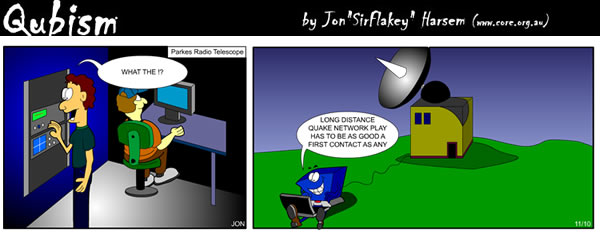
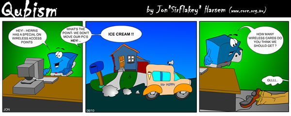

|
Table of Contents:
|
|||
Editor: Michael Orr
Technical Editor: Heather Stern
Senior Contributing Editor: Jim Dennis
Contributing Editors: Ben Okopnik, Dan Wilder, Don Marti
|
TWDT 1 (gzipped text file) TWDT 2 (HTML file) are files containing the entire issue: one in text format, one in HTML. They are provided strictly as a way to save the contents as one file for later printing in the format of your choice; there is no guarantee of working links in the HTML version. | |||
![[tm]](../gx/tm.gif) ,
http://www.linuxgazette.net/ ,
http://www.linuxgazette.net/This page maintained by the Editor of Linux Gazette, gazette@linuxgazette.net
Copyright © 1996-2001 Specialized Systems Consultants, Inc. | |||
 The Mailbag
The Mailbag
Send tech-support questions, Tips, answers and article ideas to The Answer Gang <tag@lists.linuxgazette.net>. Other mail (including questions or comments about the Gazette itself) should go to <gazette@linuxgazette.net>. All material sent to either of these addresses will be considered for publication in the next issue. Please send answers to the original querent too, so that s/he can get the answer without waiting for the next issue.
Unanswered questions might appear here. Questions with answers--or answers only--appear in The Answer Gang, 2-Cent Tips, or here, depending on their content. There is no guarantee that questions will ever be answered, especially if not related to Linux.
Before asking a question, please check the Linux Gazette FAQ to see if it has been answered there.
 LWN links
LWN linksLinux Weekly News needs fresh sponsorship soon. See our News Bytes for details (there's a mailing list).
Your Editor would be greatly saddened to see LWN disappear. -Mike
Many of the Gang use it; Jim and I would sorely miss it... We do have a 2c Tip this month pointing at LWN, too. - Heather
Linux support call handlingHi,
I have been searching through the Linux Gazette website for anyting on the industry average of call handling times for Linux support. So far I have not found anything.
I was wondering if you had done an article or come across this. I was wondering if there were any industry documents that measured the average time it would take a customer to call in for support till the time that their problem was resolved.
Any information that you may have would be very helpful.
Thanks, Darlene
I don't think we've ever covered that topic. -- Mike
If anyone has enough information that isn't under some sort of NDA, to write such an article, it'd be interesting to see. Unfortunately statistics about how long an Answer Gang member takes to answer a querent are a bit fuzzy; we don't get docked for answering late, nor promise we'll answer at all; some "answers" are really requests for more data and touched with tidbits in the hopes it will help somehow -- and we may or may not ever learn if our reader got the answer they needed. (Well, that last part's no different from phone support, anyway.) -- Heather
BTW.. I tried sending this message to tag@lists.linuxgazette.net (documented on your website) and my mail was returned.
That address was changed because of the large number of off-topic questions we received. The address was posted widely on web pages with no explanation that it was for Linux questions or that querents are supposed to do their own research first. The current address is linux-questions-only at ssc.com. Where did you see tag@lists.linuxgazette.net documented? We changed the home page and the current issue, although we haven't changed the back issues. -- Mike
...but our readers are helpful souls. Thanks, Darlene! ...
I found tag@lists.linuxgazette.net refrenced twice on the FAQ page under # 4 Guidelines for answering questions.
OK, thanks. We used to have a mailback running after we turned the tag address off. Then the mailback got into a mail loop with one address and we turned it off, but didn't think about updating the FAQ. -- Mike
DSL DriversHello eveyone at the gazette I've been all over the net trying to find out the answer about problem im having I have an Efficient Networks 4060 USB Modem . I want to run Mandrake 8.1 but dont know if there any drivers or if they even exist.maybe you guys can help me with any info
Lots of people have been caught with DSL USB modems without Linux drivers. So there may be a driver, but it's not too likely. Your best bet may be to return it for an external modem that connects to an Ethernet card. These are much more Linux-friendly.
TAG members, are there any USB and/or internal DSL modems that do have Linux drivers? -- Mike
Apparently not enough of TAG use USB for serial gadgetry, so perhaps you can help us out, dear readers! -- Heather
university engineering teamThis request originally arrived as a letter to "our HR department." We advised them we aren't a company. They hope that our readership at large will have a good idea or two about something specific they can contribute to.
By the way, before you start groaning about Visual Basic not being Linux, check out GNOME Basic at http://www.gnome.org/gb ... -- Heather
Thank you sir, as per your directions we are sending you same letter addressed to linux users . so please publish it in your mailbag. Also if you are having mail ids of some more organisations having projects related to drivers, we request you to send them to us, so that we can cntact them also.
We don't have a list of projects related to drivers. But there are thousands of them.
Answer Gang, is there a list somewhere of Linux driver projects these people can contribute to, or nonexistent drivers that need to be written? -- Mike
|
To, Linux Users, Subject: about getting sponsorship (technical guidance) Respected sir, We are students from 'College of Engineering, Pandharpur'(India),studing in class B.E.Computer Science & Engineering.As we are entering into last year of our curriculum, we are looking for Challenging and innovative projects.Our project group is consisting of enthusiastic and motivated students with good academic record,listed below
Sir, all of us have participated in different Paper Presentation and software contests. We have completed following projects-
We have also participated in paper presentation Contests and presented following papers
As we the Computer Engineering students we are interested in system level projects like
As Linux is emerging as new leading Operating System of this era, we are mostly interested in 'Device Driver' projects in Linux (or Unix).We are looking for any such project which we are eager to do. Sir, if you can sponsor us for any such project we will be grateful to you. If you are not having any project, you can just sponsor project decided by us. We don't expect any financial help from you, but just technical support. We assure you that if you give us a single chance, we shall work with our full strength and complete it within given period of time with quality assurance. We are eagerly waiting for your positive response. If you are affirmative to our request, please tell us about further procedure to complete remaining formalities. We are ready to personally come to your Company for further procedure.
our postal address is: Your's faithfully,
|
Deleting items in KDE 2.1.1 "Run Command"The number of items listed in KDE's 2.1.1 "Run Command" is getting ridiculous.
I'd like to edit this list. I've tried "Clear" but it merely clears the item in the box, but retains the list. I've also tried editing "History= . . ." in /home/username/.kde(2)/share/config/kdesktoprc file. Unfortunately, the list remains intact whether I restart kde or not.
Will this list eventually seize control of my hd?

Help!
TIA, Andre
GUI and CMOS clock (2 Questions)I am new to Linux and am desperate to solve 2 problems. I run a new Evesham PC with a 1.4GHz Athlon chip, NVIDIA GeForce 2MX graphics card with a Taxan crystal vision 680 TCO99-S monitor.
When I boot my SuSE 7.1 installation from the floppy, the boot process hangs at 'setting up CMOS clock'. I have to hit the restet button, boot Windows, shut down Windows and restart Linux. I other words, I cannot get Linux to boot sucessfully twice in a row. I have to boot WIndows in between.
My second problem is with XFree86 ver4.0.2. The windowing system seems to have a mind of its own. Usually when I arrive at the graphical login, the scree is offset about 2 inches to the right. If I go into Sax2 to configure using Xfine the screen display will 'snap' into place when I stick with the 600x800 setting. When I come out of Sax2 sometimes the setting will be saved. Sometimes the virtual desktop space is larger that the actual resolution setting. If I try to configure for 1024x768, this does not work at all. On the limited occasion I have got an 800x600 screen set up successfully, if I shut down and reboot, the same problem reappears even thought I have apparantly saved the settings.
HELP!!??
James Rutter
posterI'm a teacher of the computer study and I take care of the school laboratory in the Special Secondery School. The real name of my school is - Szko³a Zawodowa Specjalna nr 4 w Nowym S¹czu.
My pupils are different than the healthy children so I have to do everything what is the best for them. Because for some years I have been using Linux (Rh 5.0) in my private computer I thought about my pupils. So lately I have started to learn them the Linux system at school. Now we've got only Linux in our laboratory.
At the moment I'm looking for some posters or calendars or advertisements or others informations about Linux. I want put them on the walls in my classroom. I hope that my pupils'll be more interested in Linux this way. So if you can help me please write how can I get these things which I wrote before or how can I buy them. Thanks a lot for helping me.
Rams Grzegorz
33-300 Nowy Sacz
ul.Kunegundy 68
POLAND
[Mike Martin] Off the top of my head Publicity departments of the following Linux cos
Red Hat
SUSE
Caldera? (sorry - a bit of bias)
Mandrake
and Linux friendly cos
HP
IBM (with their linux promo budget they must have posters to give away)
and of course it would be worth checkong on debian and linux.com
[Frank] Hi there!
I don't have any posters right now, but I've learned that most companies are very willing to help with material like that, especially if they feel they might gain future customers that way.
I had some very good experiences with SuSE, which sent me tons of materials when I explained that I was active in some user groups and was always out of folders. They still send me a professional version of every new distibution for free, even though I mostly use Mandrake now.
Given that you're in Europe, just like me, SuSE might be your best choice for this anyhow - although Red Hat, for instance, might like a chance to get a bigger market too G
Just check company's websites for a contact e-mail (I happen to know the SuSE-addy: suse@suse.de).
Hope this helps you!
We can send you the covers from several Linux Journal magazines over the past year. Would you like that?
You can preview the images at http://noframes.linuxjournal.com/lj-issues/mags.html , and click on the links for issues 76-91, and tell us which covers you'd like. Also, is your mailing address correct?
We are also looking for other organizations who may have other posters.
There is also something called the Linux Image Montage Project. I don't have the URL offhand, but they are collecting linux-related images and putting them together into a huge penguin image. -- Mike
Penguin Computing has some very amusing posters.
And there's always some potential to find cool things at ThinkGeek.com -- Heather
How to configure AutoFS to automount NFS exported volumesI need to set up a RH Linux 7.1 system to automatically mount exported NFS filesystems on the fly. I realize the security implications inherint in such a request, but require the functionality despite the dangers right now. On my Unix boxes I could simply add a line in the auto_master file "/net -hosts -soft,noac" and set a couple of flags in the nfsconf file (AUTOFS=3D1, NFS_CLIENT=3D1, NFS_SERVER=3D1) and everything works fine. I've tried this on the Linux box without success. Is there something I'm missing?
Thanks in advance, Aaron
Net bios codeHai ,
Can you send the netbios code for interction b/n linux and windows
systems .Through this code I want windows system properties(like user name, IP,memory like) display on linux system.
waiting for reply.
Karunakar Reddy B.V
A little hard to read, but I think he's asking a different question than Samba answers. Does anyone know how to ask a linux server about the peers out there which are connected to its shares? If he knew an application that does this, then he could read its source...
Note well, that all MSwin style shares involving a Linux box are going to be over TCP/IP, not NETBIOS. Even Microsoft doesn't recommend NETBIOS anymore - it's a noisy protocol, so it scales horribly. -- Heather
does anyone know how one can set quotas in linux for a directory rather than homeHi! Does anyone know how we can set quota to some directory for eg /info/software to limit say 50mb.I went through the man pages but was unsuccessfull in setting the same.
Pls help
Thanks Franco.F
Quotas are usually by userid, aren't they? The only thing that I can think of is creating a filesystem image of ext2 type, and loopback mounting it at that directory. But using quotas effectively would make a great article... especially if you have some real world examples that get solved. Making enterprise Linux a little more fun? :D -- Heather
suggestion for "A need for Documentation" articleDear LinuxGazette,
I have been reading your article "A need for Documentation". Very interesting article.
I have made a Linux documentation website project. Why I hear people say we need documentation, there no lots of good documents, etc.? Im trying to advertise my Linux documentation project for lots of time, but no one reply me. I think that I made a really good work in this documentation website. Im trying to tell websites like you, LinuxGazette, to get my documents and give them to the Linux community, but I get no reply from that sites. Maybe the need of documents isnt so urgent.
Please, check my website. I think there are good guides for variety of Linux subjects. I think they can help the Linux community in the search for good documentation in the net. I will really appreciate your interest in my project. Thank you very much.
-- Best Regards, Eran Levy.
"This is Linux country. If you listen carefully, you can hear Windows reboot..."
WebSite: http://levy.dyn.dhs.org
I think that you and Matthias [the article's author] are talking about two different things, although you both support the cause of documentation. You are trying to provide a documentation portal for various types of Linux questions. Matthias is trying to get program developers to document their own projects better. If they do that, it will mean more content to put on your site. -- Mike
Hi Mike, I really appreciate your reply for my E-mail. All the websites that I sent E-mail to them about my Linux project website didnt reply me. I hope that all the Linux sites will read the E-mails as you read. Keep up with your excellent work! I hope for you and for Linux Gazette the best.
Whiptail vs DialogIn Issue 69 of the LinuxGazette (http://linuxgazette.net/issue69/issue69.html) Heather Stern recommends using Dialog over Whiptail, implying that Whiptail is brain-damaged. Having just started to play with Whiptail (and having never done much scripting, and none with Dialog), I was just wondering if she might expound on this a bit more. I did a google search and a dogpile search for "whiptail versus dialog", and this article was about the only relevant hit I found, so as of now Heather's recommendation is all I have to go on.
Thanks!
Kent
Hi Kent!
There are at this point a large handful of variants which branched off from
Dialog 0.60 or so. The one in the Debian version (0.9a) is actively
maintained; it had at some time been in the hands of a different linux
flavor, which I wouldn't know except it was mentioned in the examples.
I consider whiptail wimpy because its features are not nearly as complete.
With dialog, I can actually do some very cool things with the --and-widget
feature, and the progress-bar gadget can be convinced to work. Essentially
I see whiptail as having made a pot shot at being dialog-compatible, but
working from an old revision, and at the time I wrote that article, I was
fuming about it because it was being strange about screen sizing. my
annoyance was made greater by the fact I couldn't get rid of the stupid package
since the debian base expected it for something, even though I had dialog
installed. I think that's fixed, these days. Anyway, there's a decent
amount of history at: http://www.AdvancedResearch.org/dialog
-- Heather
Linux in Africa
Hi,
I saw about the above article on linux gazette and I feel
that it is worthy. Though I'am not experienced in projects of
that kind, I'am sure I can help in the training. Please if you
have any comments or suggestions e-mail me.
reagards
Kamau Gatheru
gatheru@treasury.go.ke
Good luck, Kamau. Let us know if you find anything.
The article Kamau is referring to is a Mailbag letter at
http://linuxgazette.net/issue67/lg_mail67.html#mailbag%2F2 See also GLUE (Groups of Linux Users Everywhere) at http://www.linuxjournal.com/glue . -- Mike
Sklyarov case mischaracterizedThere is a bit of common misinformation about the Dmitry Sklyarov DMCA case in the October News Bytes.
It says, "Companies are using [DMCA] to ... jail a foreign programmer for writing (in his home country) a program that is legal in his home country."
Sklyarov was arrested on suspicion of distributing that program in the United States, not for writing it.
The most strenuous supporters of DMCA do not claim it should outlaw writing of software when done outside the US.
-- Bryan Henderson
[Mike] According to the EFF FAQ at http://www.eff.org/IP/DMCA/US_v_Sklyarov/us_v_sklyarov_faq.html#ProsecutionQuestions the charges are both that he "trafficked" in the device and "aided and abetted" his company in doing so. We don't know how the prosecutor will word his case, but he could claim that writing code is "aiding and abetting".
He could. But since he hasn't yet, it's really putting words in his mouth to say that Sklyarov was arrested for writing a program. -Bryan
[Mike] No more misleading than to say, as you did, "Sklyarov was arrested on suspicion of distributing that program in the United States." When did he distribute it?
Better to say he was arrested for trafficking. But even if he argues that writing the program alone was aiding and abetting its importation into the US, it's misleading to say he was jailed for writing a program. That's like saying that a person who shot someone to death was jailed for discharging a firearm.
[Mike] So we agree that he was not arrested for selling/soliciting/giving away the program during this trip. So when did he distribute it? The US jurisdictional claim rests on the web site, so they would have to show he was somehow involved with it, or that by his association with the company he was indirectly involved. His only role seems to be writing the program. Thus, why I say he was arrested "for" writing it. I just don't like the overemphasis on distribution/trafficking in some accounts, because it suggests Dmitry had more involvement in that end of things than we have reason to believe.
Dmitry was in the US to give a talk at a conference, not to sell a program.
Right. The other common misconception of the case is that Sklyarov was arrested for something he did on his trip to the US. Again, the authorities have made no such claim.
[Heather] I can read this two different ways. Either you are being sarcastic when you say "Right" and you are declaring the statement that he was here to speak at a conference, to be a misconception... which if so, has at least some fallacy to it, as he was definitely here to present at a conference.
Or, you are agreeing that he was arrested for something he didn't do in the US, which means that your disagreement with our point of view is merely that you believe they had the right (perhaps the duty) to snap him up like that, and we don't.
By the way the analogy would be closer to saying that the designer of a certain variety of bullet shells was being held on charges that bullets are used to murder people, never minding that they are also used to hunt dangerous vermin and for food gathering in rural areas, including the rural areas of other countries where one really does have to hunt for food, and in areas where gun-toting is legally mandated.
Dmitry didn't "murder" anyone's eBook. (Hmm, he might have dissected several, but it is likely provable that he had Rights to the copies in question.) It's still as illegal as ever to clone a readable book, e- or otherwise, without having been granted the right-to-copy. It's legal to own hammers but not to smash unconsenting people's windows with them. I recommend that you read the Copyright act in better detail: http://www4.law.cornell.edu/uscode/17 There are a number of rights explicitly granted to libraries, which may not be implementable if the DMCA is allowed its broadest scope. That, I'd say, is a bug.
[Mike] The DMCA's supporters would like to see it applied worldwide in any way they can. This can be by claiming US jurisdiction or by getting it written into international treaties and other countries' laws. California has a "long-arm" law under which it claims jurisdiction for any web site which is accessible to a Californian, whether or not the site is located in California. This concept will continue to be pushed and pushed.
Granted, the Department of Justice did not go that far in the Sklyarov case. It merely claimed that because ElcomSoft had a web site in the US selling the product, that was enough for US jurisdiction. Of course ElcomSoft had already shut down the site voluntarily at Adobe's "request" before this brou-ha-ha happened, and there's no allegation that Dmitry was personally involved in that site or that he is an officer or marketing directory for ElcomSoft rather than just a programmer.
So, the DMCA supporters may reluctantly accept that it cannot be applied outside the US, but that doesn't make them stop trying to extend its reach.
I haven't seen this. Statements I've seen by supporters indicate they want it applied the same way a country's laws traditionally are applied vis a vis other countries. I don't see anything new or anything unique to the US. But maybe I haven't been reading radical enough web pages.
Sure, Adobe would like there to be an international law applying to every human being. But that wish is a long way from an actual present claim against Sklyarov, and such a claim reported in LG is the basis of my original letter.
[Heather] I don't know whether to apply quite that level of slippery slope ... a law to every human being ... to Adobe themselves. But I don't feel any qualms about applying it to the people who wrote and voted for the DMCA itself. I believe that what the DMCA supporters want is to be able to sell and restrict every piece of data that might flow past them, until they are more wealthy than the Ferengi clan who has the exclusive concession on Q-tips(tm) cotton swabs.
The present claim may be unfounded; I personally believe it to be worse than that since I think Adobe is biting the hand that would feed them Russian customers. But I think the precedent that speakers can be picked up and singled out for their corporate entities' infractions, to be a quite terrifying one. You see, I don't honestly believe that someone has a plane-bomb with my photograph taped to its nose, or that I am any more likely to be in a building that gets toasted by terrorism, than I am to merely get run over by a car when walking to the supermarket, or struck by lightning the next time I go hiking, or win the local Lotto. But I do expect to speak at events, and someday for those events to be in other countries, who may have even weirder laws, be more abitrary about making them, or have worse treatment of accused people. If I end up in a situation where such a country has half a case, I no longer expect the US to be able to protect me much ... because they've already burned us in that regard. Alan Cox won't be at ALS -- because he's refusing to travel here while this sort of nonsense is considered or even claimed to be the law of our land. This has been called the "chilling effect" in literature that follows censorship cases.
I'm not a lawyer, I'm a frightened human being, and I wrote my own opinion. If you don't like it, tough. It's my free speech and our free press... and I'd very much like to keep it that way. If that means speaking up for the freedom to speak as well as the freedom to say particular things - I'll do it.
Actually, ElcomSoft hired a company located in the US to collect the money. I think the web site in question was that company's. However, the company also has offices, employees, etc. on US soil. That's not insignificant.
[Heather] It makes it even worse. If EIcomSoft's US partner is the offender, it's their top brass that should be standing in court. If EIcomSoft themselves are the offenders, it's their export agents who should be standing there -- but in no case the programmer, because the code's legal and even REQUIRED elsewhere, and reverse engineering itself, by fair means but not foul, is (for the moment at least) legal here.
There's also precedent that "Code is Speech, and to be protected as such." As for whether sanity will prevail, only time will tell.
[Mike] I guess we're just going around in circles now, and the thing to do is wait until the case is presented and see what the lawyers say then...
What we're really down to is the issue of what Sklyarov did vs what he is accused of. I don't even pretend to know the detailed facts of the case, so I won't argue whether he distributed, trafficked, aided, or abetted. I don't know. And you know what? The FBI and US attorney don't either. It takes a trial to answer questions like that.
I just think when one says "was jailed for..." in this pre-sentence context, one is talking about what the person's accused of, not what he did. I don't think Sklyarov is accused of writing a program. But I think there are people, including LG readers, who believe that the FBI would also arrest a person who wrote a copyright-busting program even if it never entered the US. And that isn't true.
[Heather] 'Tis a fact he wrote a program. 'Tis unknown if it entered here; or if it did, that it did anything they can claim as directly damaging; but probable that it was published in the proceedings of his conference. I think that if he is accused of something they manage to make stick, it will be quite a slippery slope, the top point being, he wrote the program, because they know he won't wriggle out of that one. As for what the FBI would or would not do, I don't think am ad hominem argument on their behalf is any more appropriate here than "I have kids and a wife, can I go home now?" would be a good defense for Dmitry in court, and I don't believe that you know what the FBI would or would not do, anyway. I do believe that you trust them with your rights, further than I trust them with mine.
The damage has already been done. I think it will take some very brave judges.
PDA user requestHi,
I know this my be a little much, but seeing as how palmtops are so abundant these days. I was thinking how great it would be ig Linux Gazzette newest issue was available at the same web page monthly so it could be synched as as Avantgo (www.avantgo.com) channel.
There is a link http://www.linuxgazette.net/current that points to the current issue. This was originally requested by somebody with a palmtop, because he said it made it easier to download the latest issue to his palmtop. Does this do what you want?
You can also go to http://MY.FAVORITE.LG.MIRROR.com/current and get the same thing. -- Mike
Yes, thank you.
I don't want to favor one brand of palmtops or one commercial channel site over another. (Is Avantgo commercial?) -- Mike
Also, not trying to be bothersome but if everything but the links to the articles was removed it would better. But if that is too much could you please at least remove this section from the bottom:
TWDT 1 (gzipped text file)
TWDT 2 (HTML file)
are files containing the entire issue: one in text format, one in HTML. They are provided strictly as a way to save the contents as one file for later printing in the format of your choice; there is no guarantee of working links in the HTML version. It would remove about 1Mb from the size or my download when I download the page everything 1 link deep (I only have 16 Mb RAM) also if you were to do that it would make a good Avantgo channel if they will carry it and possibly get some other readers. Thanks.
We get many requests from readers to offer LG in different formats, make the TWDT files better, remove the TWDT files, etc. We can't please everybody. What we have is a compromise that has evolved over the years. I'm not happy with the TWDT files either--it means any time I make a correction I have to change the same thing in three files--but there is so much reader demand for them that we cannot drop them.
Perhaps you can arrange with a mirror to offer a customized version of LG optimized for palmtop reading. The mirror could make a script that downloads the files and removes the TWDT versions, or replaces them with small files that explain that the larger files are available only on normal mirrors. -- Mike
Some of the mirrors seem not to be functioning.
The mirrors page is way out of date. We're moving the entries into a database to make updating easier ... but the project isn't done quite yet. [Update 31-Oct-2001: But it is done now. See the next message.] -- Mike
I just thought it would be nice to be able to keep up a little better (information overload you know).
Thanks for all your suggestions. When readers show enough interest in the Gazette to suggest improvements, it makes us feel like our work is worthwhile. -- Mike
Yes I forgot avantgo is commercial. It is free to use personally, but they charge for providing content (I think). They used to allow users to share custom channels but not currently. Plus they support mainly WindowsCE.
Would you like to be our palmtop researcher? We could put a section on the Mirrors page about LG resources for PDA users. That way it wouldn't matter if they were commercial, because the Mirrors page is supposed to list everything. What we'd need would be solutions for a variety of palmtops.
Are there any articles you might like to write about Linux and palmtops? Or any 2-Cent Tips you can provide on reading LG on your palmtop?
What exactly are these "channels"? Are they just a set of links to the articles in the current issue?
LG has an RSS file now. http://www.linuxgazette.net/lg.rss. This was originally created at Linux Focus' request so we can share current article links. (We put LF's links in News Bytes.) Any site may parse this file and use it to generate links to the current LG articles on their web page. -- Mike
Are there any linux apps that keep you up to date on html content (ie channel subscriptions).
There are programs that moniter a list of webpages and let you know whether any have changed. I haven't used any of them. Look in your distribution. You can also write a program in Python to do this, using the urllib module. -- Mike
[Faber] You mean like plucker (http://plkr.org) ?
I think you'll want to take a look at Sitescooper (http://www.sitescooper.org) - while it's rather Palm specific, I think it uses Plucker under the hood. Of course it's source available and already knows a whole bunch of PDA formats so it can almost certainly be tweaked to other handhelds and PDA-doc formats. Linux Gazette is there already, item 135 in their list last I looked-- Heather
One last thought on the original matter, if the html file TWDT 2 (HTML file) provided at the bottom of the page was named http://www.linuxgazette.net/current/current.html that would work also.
Starting with this issue, I have made TWDT.html a symlink to issue##.html. Give yourself a bookmark of http://www.linuxgazette.net/current/TWDT.html. -- Mike
If anyone wants to do a mirror of LG that is dedicated to keeping it in formats friendly for handhelds -- provide the results on a publicly accessible site, and we'll gladly add you to the mirrors database.
The license that the Linux Gazette is under certainly allows for this sort of transformation. Other sites might give you more of a complaint, but we sure won't! -- Heather
LG Mirrors page renovationThe LG mirrors page has been revamped. 25 new sites have been added, and the HTML has been regularized. All the entries are now in a database, making Your Editor's task easier.
This project originally started in February, with me cutting-and-pasting the data into a text file in mail-header format. This was taking forever, so I got Dan Wilder to write me an awk script. This saved 90% of the typing, although I still had to make lots of manual changes due to the irregularities in the original HTML document (created many moons ago, and added to over time). I wrote a small Python program to load the mail-header file into MySQL, then used mysqldump/mysql to make further changes.
The HTML is generated by a Python script and a Cheetah (http://www.cheetahtemplate.org/) template.
I plan to write an article about all this, but first I want to write a routine to verify the links and delete the ones that are persistently down. In the meantime, the program listing and template are on my web site http://iron.cx/cheetah/index.html#lgmirrors (temporary link).
Thanks to all the mirrors for their patience, especially those like http://www.gazette.linux.ru.net/ (Russian translation), http://linux.osso.org.co/, etc. that submitted their links several times during the transition.
All mirrors, please check your entry and let me know if it's incorrect.

|
Contents: |
Submitters, send your News Bytes items in PLAIN TEXT format. Other formats may be rejected without reading. You have been warned! A one- or two-paragraph summary plus URL gets you a better announcement than an entire press release.
 November 2001 Linux Journal
November 2001 Linux Journal

The November issue of Linux Journal is on newsstands now. This issue focuses on Linux Enterprise and presents the results from the annual Readers' Choice Awards. Click here to view the table of contents, or here to subscribe.
All articles through December 1999 are available for
public reading at
http://www.linuxjournal.com/lj-issues/mags.html.
Recent articles are available on-line for subscribers only at
http://interactive.linuxjournal.com/.
November/December 2001 Embedded Linux Journal

Issue #6 of Embedded Linux Journal has articles about choosing an embedded distribution, building a minimal glibc, Linux single-board computers, and more. Plus a cool chicks-on-a-motherboard cover.
Click here for the table of contents.
Embedded Linux Journal is available free to qualified subscribers in the
USA, Canada and Mexico.
Click here to subscribe.
Alan Cox Censors Kernel Changelog In Response To DMCA
In Linux 2.2.20-pre10's changelog, Alan Cox refuses to list the details for some "security fixes", writing, "Details censored in accordance with the US DMCA". Apparently file ownership and permissions might be used to protect a copyright, and highlighting the fixes in a changelog could thus be seen as publishing information on copyright circumvention. There was a thread of discussion leading from this decision on linux-kernel, with some list-members feeling that Alan was overreacting. Others made the very fair point that it was up to Alan whether or not he wanted to take the risk of potentially violating the DMCA. Alan's position is that he has taken legal advice, and that this is the most prudent course of action.
LWN's coverage of this story highlighted the fact that although the changelog is censored, the actual code and patches are not. This was also noted on linux-kernel. Rik van Riel posted a link (on Slashdot and linux-kernel) to http://thefreeworld.net/ where you can get the changelog, along with other information/tools not allowed in the US (this is for non-US visitors). Further comments can be found on Slashdot, where the story popped up, and here on The Register.
An Irish Perspective
"...the Act provides for a court order to be issued requiring a person to disclose the encrypted evidence in a plain-text form. However, section 27 of the Act specifically provides that nothing in the Act shall have the effect of requiring the disclosure of unique data such as codes, passwords, algorithms, private cryptographic keys..."There is also a rejection of the concept of key escrow, which is reiterated in the Government Policy on Cryptography and Electronic Signatures, which also asserts the right to free choice of cryptographic method. Partly, these policies were adopted because they were seen as pro-business: technology companies are more important to the Irish economy than media companies. Another factor that may have influenced this decision is the fact that Ireland's communications are vulnerable to monitoring by other states for conventional or industrial espionage. Such allegations were made against the UK regarding Capenhurst Tower. On a European wide level, similar concerns have been raised regarding UK and USA involvement in Echelon.
The UK has taken a less liberal approach, in particular in the Regulation of Investigatory Powers Act. The Irish Government was keen to follow a different route, in the hope that this would encourage inward investment in the electronic commerce and software sectors. The electronic signing by Bill Clinton and Bertie Ahern of a communique on electronic commerce in September 1998 was a high profile publicity stunt to reinforce this image. This, and other pro-business policies, were successful, moving Ireland to the position of second largest exporter of software in the world.
Another significant influence on Irish policy is the European Union. This is not necessarily a bad thing, as some good policies have come from the EU. The Echelon document mentioned earlier states "...e-mails can and should be encrypted by everyone", and is a valuable wake-up call to the importance of security. Bruce Schneier has lauded the EU for taking on board security professionals concerns regarding the new EU Cybercrime Treaty. Additionally, the European Patent office does not grant software patents. A much more disturbing development is the The EU Copyright Directive. Like the DMCA, this is inspired by the World Intellectual Property Organization, and it has some similar provisions. However, European directives are guidelines for national laws, and certainly do not override national constitutions, so there should be a longer road before the EU is fully subject to DMCA style rigour.
On the broader theme of civil liberties and misuse of power, there are valuable lessons to be learned from Ireland's experiences. Ireland's troubled political history has in the past led to some very harsh laws such as the anti-terrorist Offences Against the State Act, repeatedly condemned by Amnesty International. Also, there was significant abuse of 'phone tapping, with both journalists and politicians the victims. Phone tapping has valid security uses, as might some of the measures which has just been enacted enacted in the United States, but it is very easy to misuse. Although the current Taoiseach (Prime Minister) has apologised for the abuse, much harm has already been done. Indeed this controversy has flared up again, as one of the ex-ministers responsible for the wiretaps (and opposed to apologies) is now chairing a government telecoms enquiry.
Anti-Terrorism Bills Compared
The American Civil Liberties Union (ACLU) have prepared a chart showing the differences wiretapping/surveillance provisions between current law and various Anti Terrorism bills: The originally proposed Bush Anti-Terrorism Act (ATA), the House Judiciary compromise Patriot Act, the Senat-Passed USA Act, and the House Passed USA Act. There are also ACLU comments on each.
At Security Focus, Richard Forno has written on these issues, and on the danger of too-readily sacrificing freedoms. Richard Stallman has also commented on the dangers of erosion of civil liberties, in particular under the USA Act.
On Wednesday 24th October, the USA Patriot Act (HR 3162) was passed by the house of representatives 357-66, and the following day by the Senate, 98-1, with Russ Feingold the only dissenter.
James Love on Lobbying and Hague Conventions
Slashdot had a recent interview with consumer advocate James Love. He has some ideas on getting decision makers' attention which may be of special interest to Linux advocates. In particular, he recommends writing to congressional staffers that are working on the specific issue, rather than just to congress members. Also, he mentions that it is worth writing letters to well-read newspapers (or local newspapers of a Congress member you want to reach).
This tactic could be surprisingly effective. I know for a fact that in government departments in my own country, Ireland, that civil servants are assigned to read the major newspapers and cut out articles that are relevant to their department. Particular attention is given to the letters page, and these clippings are seen by the head civil servants and ministers (i.e. decision/policy makers) in each department.
One other issue, raised by Love, which might be of particular relevance here, is the Hague Convention on Jurisdiction and Foreign Judgements. This is a subject on which James has commented extensively. The convention in question is a treaty that would implement, among other things, cross-border patent enforcement. "Everyone would be liable for infringement of foreign patents, and the Hague Convention would give exclusive jurisdiction for both validity and infringement in the county of registration." There is an an online introduction to this subject, by James Love. The official website is at: http://www.hcch.net/.
RIAA mischief
Slashdot quotes Wired's allegation that the Recording Industry Association of America (RIAA) tried (and failed) to get inserted into the Anti-Terrorism bill a provision that would allow it to hack into your computer to see if you had any unauthorized MP3s and delete them. It seems they think they had this right all along (!) but are afraid they might get branded as Cyber-Terrorists if they tried it under the new USA-Act! Of course, the biggest concern is collateral damage to your computer, which RIAA wants to shirk responsibility for. This story was also picked up by ArsTechnica. The RIAA later published a rebuttal, which doesn't really contradict much of what was written, but spins differently.
In a similar vein, though perhaps inaccurately, The Register reported on a secret meeting between Senators Fritz Hollings, Ted Stevens, and representatives of RIAA and the big media companies. Interesting reading, but now comes the caveat: "Our source may not be all he or she claimed to be, and serious doubts have been cast on the veracity of the comments attributed to the RIAA's Rosen and co."
But Didn't the Hijackers Already Present Valid ID?
SSSCA update

The following articles are in the November-December issue of the E-zine
LinuxFocus:
The Duke of URL have
CNET have reported that Amazon.com significantly reduced its IT budget by migrating to Linux.
Details, at Cryptome.org, on the "Beale Screamer" anti-DMCA MS Digital Rights Management circumvention. Further information.
Linux Weekly News reported that the W3C is eager to adopt patented technology in standards. More details on LWN and summary here.
Opera (among others) had a bit of a tussle with Microsoft over MSN not allowing connections from non MS browsers. MS backed down.
What good is a Linux client? IBM's Mark Chapman give you the benefit of his own experience as a Linux newbie changing over from Windows.
Virus writers are industrial terrorists says Microsoft, as reported by The Register.
Linux.com have an introduction to using the Snort Intrusion Detection System. Further reading here, courtesy ILUG.
In LWN, Michael Hammel, who used to write LG's _The Graphics Muse_ column, surveys Linux's repitoire of games, both old and new, free and commercial. This is a very quick overview of the kinds of games Linux has, and its support for gaming technology.
IBM is working with Citizen Watch to develop a Linux watch. There's a photo of a prototype showing Tux on the screen.
Listings courtesy Linux Journal. See LJ's Events page for the latest goings-on.
|
5th Annual Linux Showcase & Conference | November 6-10, 2001 Oakland, CA http://www.linuxshowcase.org/ |
|
Strictly e-Business Solutions Expo | November 7-8, 2001 Houston, TX http://www.strictlyebusinessexpo.com |
|
LINUX Business Expo Co-located with COMDEX | November 12-16, 2001 Las Vegas, NV http://www.linuxbusinessexpo.com |
|
15th Systems Administration Conference/LISA 2001 | December 2-7, 2001 San Diego, CA http://www.usenix.org/events/lisa2001 |
W3C and Patents
Linux Weekly News recently reported that W3C has a draft policy which would allow patented technology to be included in web standards. LWN has a good commentary on the issues, which could ultimately endanger the future of free software on the internet. The "Scalable Vector Graphics" (SVG) standard, already adopted by the W3C, includes patented technology from Apple. The W3C is already behaving as if the new policy were in force.
What most disturbed many observers was the under hand way in which the change was apparently being sneaked through. The "consultation period" came to most peoples attention thanks largely to LWN's Adam Warner who posted this message. Following this comments in W3C's comment thread turned sharply against the idea once it became generally known. Included are comments by Linux bigwigs. Many of the most important posts are linked from LWN. Some predict that this could lead to a situation similar to the one following the patent rows surrounding GIF's, and the subsequent development of PNG's. LWN suggests the possibility that in the future, the free software community may have to form another web standards committee to compete with W3C if W3C starts destroying the web with non-open technology that threatens the web's universal viewability.
LWN in Difficulties
Unhappy news, Linux Weekly News is facing the budget shortfalls common to free web news sites. In particular, Tucows is no longer able to continue providing support. As a result, Michael Hammel, LWN "On the Desktop" columnist (and former LG "The Graphics Muse" columnist) is leaving LWN. We wish Michael well.
More disturbing is LWN's prediction that, "Unless we can come up with a way of paying salaries soon, LWN risks dropping off the net entirely." There is a mailing list to discuss LWN's future at http://vena.lwn.net/mailman/listinfo/discussion (now needs registration). This news was also discussed on Slashdot.
Kernel Vulnerability
Linux Making Inroads
Also in Europe, IDG.net have reported that Germany's lower parliament (the Bundestag) is considering switching from Windows to Linux for its 5000 computers. The main reasons are for security, stability and (again) to save money in the face of MS's new upgrade terms. The parliamentary committee will decide late this year or early next year which OS will replace its current version of Windows NT.
Finally, Technews.com have run a Thai story: that Thailand's government will back the idea of using free, Thai-language 'open source' software as a way of reducing spending and software piracy. An official is quoted: "To be independent from foreign software, the country needs to build a knowledge base along with developing human resources and work based on open source software."
Linux NetworX Cluster Aids BioCryst in Medical Development
Linux NetworX, have announced that BioCryst Pharmaceuticals, is now using a Linux NetworX Evolocity cluster to aid in creating pharmaceuticals for the treatment of human disease and illness such as influenza and hepatitis C. Implementing an innovative drug discovery approach, scientists at BioCryst create synthetic small-molecule inhibitors, atom by atom, to bind with specific disease-causing proteins or targets.
BioCryst's new Evolocity cluster includes 32 Pentium III 933 MHz processors, with 16 GB of memory and a 10/100 Ethernet network. Linux NetworX configured the cluster to handle complex computer modelling applications, such as X-ray crystallography and combinatorial chemistry. BioCryst utilizes the Linux NetworX ClusterWorX management software and signed an on-going service agreement as well.
ALS for free: Oakland November 5th-10th
In response to an uncertain political climate and the recent economic downturn, the USENIX Association and the Atlanta Linux Showcase, Inc. jointly announced today that they will offer free registration to everyone wishing to attend technical sessions at next month's Annual Linux Showcase & Conference in Oakland, California. USENIX and ALS are making this unprecedented offer because they believe the networking opportunities and high-calibre technical content at this conference provide an important service to their membership and the general open source community.
"We recognize this may only be a temporary readjustment until the 'brick and mortar' companies start using open source products to a greater degree. Therefore, we feel that it is crucial to provide current technical information to the community at this time," said Jon "maddog" Hall, USENIX Director and ALS Invited Talks Program Chair. "There are also several political issues facing the open source community right now such as DMCA, SSSCA, copyrights, and software patents. The ALS invited talks track reflects this and we felt that we could not put off these important discussions to a later time."
SAIR Linux and GNU
"For the third consecutive show, SAIR Linux and GNU's partnership with IDG was a huge success. As the leading developer of vendor neutral training curriculum and certification materials for open source software, SAIR Linux and GNU offered free Linux review sessions and free certification testing at the LinuxWorld Conference and Expo event which took place at San Francisco's Moscone Center. SAIR Linux and GNU served as the official Certification Sponsor for the August 27 thru August 30 event which welcomed more than 18,000 attendees and 180 exhibitors."
For more information on the success of the LinuxWorld Expo, visit http://www.linuxcertification.com/linuxworld/ or http://www.linuxworldexpo.com . You can also access additional information about SAIR Linux and GNU Certification or locate a training center, by visiting www.linuxcertification.com. Additional information about testing can be found at www.2test.com or www.vue.com.
Debian
The Debian HURD iso images are now available from your local ftp.gnu.org mirror. There are 3 iso's available, but you only need the first one to get a system going, so get downloading now!"
The position of Debian Security Secretary has been filled, with the appointment of Matt Zimmerman and Noah Meyerhans to the role.
Details of an updated webalizer package were posted on Debian Changes. It fixes a bug whereby Webalizer stopped working on Oct 5th, 2001.
Red Hat
SuSE
SuSE Linux, have announced SuSE Linux 7.3, in both Professional and Personal editions. Recognising security concerns SuSE Linux 7.3 offers Features include KDE 2.2.1, Linux Kernel 2.4.10 with glibc 2.2.4, an extended range of drivers and improved USB support, with better automatic hardware detection.
SuSE Linux presented the third generation of its e-mail solution at the IT expo SYSTEMS, held in October in Munich. SuSE Linux eMail Server III is a solution for small and medium-size enterprises, dedicated workgroups and government administrations. A new feature is Skyrix which provides calendar and scheduling functionalities for booking appointments, rooms, or other resources.
Gnect
Gnect is a theme-able "four in a row" game for GNOME. Similar to Tetris, but the object is to get four marbles/tiles in a row in any direction within a 7x7 grid. The tiles do not automatically descend, so there's no time limit. You choose the column and the tile drops from the top. License GPL, including the Velena strategy engine.
Loki
Courtesy of Slashdot, comes the news of Loki's upcoming game: Postal Plus. Loki have a press release with more information.
MOSIXVIEW Cluster Management Software
MOSIXVIEW is free for download and is based on the GPL-licence model. For more information, consult http://www.mosixview.com or http://www.waplocater.de/mosixview/. Also, Linux Focus have taken a look at this package.
webMathematica Brings Computation to the Web
Wolfram Research, maker of Mathematica technical computing software, have announced the release of webMathematica. webMathematica is built on Java servlets, making it compatible with any web server, servlet engine, or application server that supports the Servlet 2.0 API or higher. webMathematica is initially available for Windows 95/98/Me/NT/2000 and Intel-based Linux platforms. webMathematica enables users to:
PHP Black Book, new from Coriolis
Micro Sharp Technology and Astaro Firewall Partnership
Micro Sharp Technology have announced an agreement with Astaro to market their Firewall software product as part of the Netule line of products. Netule is a robust, thin server appliance solution. The OEM version will allow hardware systems builders to supply a low cost, robust server appliance solution for small and medium sized business.
IMA Internet Exchange Messaging Server 5.1
International Messaging Associates has just released the latest in its top Messaging Solution - Internet Exchange Messaging Server (IEMS) 5.1. Among other features, IEMS 5.1 has enhanced virus and spam detection control and adds an Attachment Removal Filter Module. In an introductory offer, IMA is giving away 15-user licenses for free. IEMS5.1 is interoperable in Linux and Windows and will add support for Solaris and HP-UX by late-October. Government and enterprises planning to shift their messaging platform from Windows to Linux will be able to simply auto-migrate their MS Exchange mailboxes to IEMS. IEMS 5.1 can be downloaded from http://www.ima.com/download/v5eval.html.
 The Answer Gang
The Answer Gang

There is no guarantee that your questions here will ever be answered. Readers at confidential sites must provide permission to publish. However, you can be published anonymously - just let us know!
 Greetings from Heather Stern
Greetings from Heather SternHello everyone and welcome once more to The Answer Gang. Last month I was quite stressed out about some overly broad attempts to curtail our freedoms, in case "bad guys" might try to use those freedoms wickedly. There's a thread on the topic in the Mailbag (one reader didn't like how I described Dmitry's case) and the News Bytes section has more legal details to cringe about.
In the mail processing space, my pet peeve of the month goes back to those darn Quoted Printables and HTML attachments. We've gotten some Spanish and Italian letters and those really do need to be that way. (Thanks, we can barely recognize things in those languages, but it's so much easier to give to the translators when it hasn't been mangled.) But all of you english speakers need to tell your web browser to stop doing the double mail thing. It's three or four times the bits, and the HTML is utterly useless to my processing efforts. So do yourself a favor, and spend those recycling electrons on something else.
In the real world space, well, that's it. Space, the final frontier. Do you know that the United Nations had a holiday of their very own declared a few years ago, called "World Space Week" ? You probably didn't. And that would be because the television media loves to beat on one exciting story until it's gone past "exciting" and all the way down to "wouldn't rent the video from the cheapies rack". The paper press likes the AP wires because they don't have to go chase stories, just reformat them a little. Where's the real News out there? Obviously Space isn't news... since there hasn't been another pair of feetprint on the moon since I was too young to know what a TV was.
I asked the Gang, since we're a well scattered bunch, what we do to get real news when we know we're being spoonfed "human interest" timeslices. Believe me, this doesn't just happen to US news - editors in other countries "slant" the stories to satisfy some invisible "market segment" instead of actually serve up the news itself. Mike grumbled that if we got even a few articles translated straight instead of "cleaned up to please western ideas" it would be worth a lot more. The answers were pretty solid: we get enough buzzwords to search on a little, then if possible, we hit the internet for a news site in the country of origin. And we read news sites from more than one country regularly anyway. I say "if possible" because, well, it helps if the site offers its data in a language we can read... Here's some of the favorites:
Breen adds the valuable comment that we must apply approrpriate filters as we read - consider the source, and what things they will prefer to bias towards. People will express their preferences; the corporate entity in charge of the paper will have its say in peer pressure and even just the headlines they choose. Still, "the problem with too much of the American press is that they apply the filter '> /dev/null' to nearly all foreign news. If I never see the news at all it doesn't matter what the perspective of the publisher is."
So now I'll turn away from the social ill of talking about newsmen instead of coming up with some news, or failing that, something to talk about and get people thinking.
I started getting interested in CAD a while back. Maybe I'll design my own little space capsule, plan that back patio we're going to put some changes in... someday ... or speculate on where the new "Enterprise" keeps the bathroom. Unfortunately for me, CAD tools for Linux come in four categories:
Now sadly, this means I can't give it the fun "unusability test" romp that I did to word processors a while back. While I'm not an utter babe in the woods* in this space, I'd have to say my skills are... well, rustier than my Spanish, at least I see that once in a while. But circuitry is not even in my scope, if they are trying to be paintbrush I can do better with The Gimp, and for the other two, yes darnit, I'm going to need those docs translated down a notch or two, or find where they stashed the glossary. Category 3 looks like it will suit me best, and by the time I can use it, the 3d stuff will be fun. But for right now, all I wanted was some ways to stick to a grid and drop little "tree" "wall" and "door" icons among my distance marks. Dia is starting to look good; as soon as I can grok its XML symbol language (anybody have a Gimp plugin for these things? xfig conversions? anything?) maybe I'll feed it some really weird stuff and start layout out D&D wizards' halls again.
If you're working on a CAD project out there, I have a hint for you: if it remains easier to do all this on ten-to-the-inch grid paper, I'm not going to be using your stuff. Also, I've not a fear about buying software that does things well, but I'm not an aircraft design shop, you can't be charging me omegabucks** to see if I can plot out my garden better before springtime, and you're not going to get me to pay you to discover I can't figure you out. So for you commercial types, I recommend making the quickstart guides available for taste testing. In fact you should have*** quickstart guides, that put you through putting some sample item or place together. For you free-world coders, get some first year drafting students to try and make sense of that gibberish; anytime they say "huh?" treat it as a bug just as serious as broken menu items. We can only draft when our mechanical pencil actually has lead in it...
Hmm, there's a fellow who mentioned he's got a new documentation site up (mentioned in the mailbag this month); time for me to see what he has lying around in the category!
pppd problemFrom pclouds
Answered By Mike "Iron" Orr, Mike Ellis
Hi people
I try to connect to my isp using pppd:
pppd /dev/ttyS4 connect "chat -V " ATZ OK ATM0 OK ATDT1260 CONNECT" modem defaultroute crtscts -detach
It saids:
ATZ OK ATM0 OK ATDT1260 CONNECTSerial connection established. Using interface ppp0 Connect: ppp0 <--> /dev/ttyS4 Serial line is looped back. Connection terminated.
I use modem Motorola SM56. /dev/ttyS4 is a symbolic link to /dev/sm56 (created by the modem). I can connect to that isp using rp3 with no problem. What is "Serial line is looped back"? Help me!
Thanks very much.
[Iron] It means it tried to contact the remote server, but ended up contacting itself instead. I haven't used ppp for years, so I don't remember the solution. Either there's a line crossed in your serial cable (unlikely), or there's some option you add or remove in the config fie. Check the docs for "looped back", "server" and "master".
Maybe one of the other Answer Gang members can reply better.
My guess is that you're seeing the login sequence of your ISP, some of which echo your username back to you. When the PPP daemon starts, it sends some strange characters to your ISP, which dutifully echos them back to you confusing pppd into thinking that it's talking to itself.
The command you quoted will get 'chat' to do the actual dialing, but as soon as your modem has connected to the remote modem, 'chat' will exit and the pppd will expect a PPP connection to be in place. What you need to do is get chat to do a little more work to log you in to your ISP: I'd suggest you try starting pppd using a modified command line, for example:
pppd /dev/ttyS4 connect "chat -V " ATZ OK ATM0 OK ATDT1260 CONNECT ogin <yourlogin> assword <yourpassword>" modem defaultroute crtscts -detach
(I probably don't need to say this, but just in case, substitute your ISP account name for <yourlogin> and your password for <yourpassword>...)
Notice that I've deliberately used "ogin" and "assword" since it's not certain whether you will see "login" or "Login" and 'chat' is case-sensitive.
It is definitely worth checking with your ISP for their exact login sequence: the one I've shown is a very general one and may well not work exactly as given. I use Demon in the UK and they have an excellent on-line helpdesk - have a look at http://www.demon.net/helpdesk/general/connscp.shtml for an excellent example of how their login sequence works - Demon support protocols other than PPP, so have to query the protocol to use too. Although Demon don't give detailed help for Linux setup, they do provide all the information you need and several newsgroups to help users too. Hopefully your ISP will be similarly helpful...
Incidentally, more and more ISPs are now moving away from "scripted clear text password login" to CHAP or PAP based login sequences. These don't send your password in cleartext, and also re-validate your credentials periodically. However, I have no first-hand experience of these, so over to another Gang member...
Cheers
 Thanks for your help.
I have resolved this problem. Because i missed user & remotename options, so the
PAP authentication was not completed. I guess that ppp on the isp was terminated
then, and all messages sent by my pppd was sent back.
Thanks for your help.
I have resolved this problem. Because i missed user & remotename options, so the
PAP authentication was not completed. I guess that ppp on the isp was terminated
then, and all messages sent by my pppd was sent back.
getting volume label for CDFrom Richard A. Bray
Answered By Karl-Heinz Herrmann, John Karns, Jim Dennis
I'm still trying to figure out how I would find the volume name for a CD. I want to catalog a large collection of CDs, but I need to get the name for my database records.
I created the CDs with the command mkisofs -r -J -D -V "cd-name" -o /data/cd.iso -pad /data/data_dir
I can see the volume name in Mickeysoft Windoze. How do I get it in Linux? I've looked in /proc, tried hdparm and others.
thanks,
-- Richard A. Bray
If you want to know how it is named you can try using cdrecord -v 127 -toc or something like that. This will work for audio (look in the XYZ.inf files) but I don't know for data CD's.
clock problemFrom tony
Answered By Thomas Adam, Ben Okopnik, Mike Orr, Mike Ellis
I cant't seem to work this one out!!!! On my RedHat 6.1 Linux box, my system time is set to local time and hardware clock is set to UTC. These times appear to be OK.
 Whenever I save a file, then do an ls -l, the file time shows UTC.
Whenever I save a file, then do an ls -l, the file time shows UTC.
Everything else, logs, etc. show local time. I am running ntpd, and this keeps the hardware clock OK.
hwclock --adjust
once in a while. That way, after a couple of months, you can even turn off "ntpd" - and your system will keep perfect time (I think that a max deviation of one second in two or three months can be considered "perfect".) See the discussion in the "hwclock" manpage, and read about "/etc/adjtime".
 I have a link from /etc/localtime to /usr/share/zoneinfo.
I have a link from /etc/localtime to /usr/share/zoneinfo.
I have looked up numerous web sites about the clock system, but none have helped me. Any pointers in the right direction would be appreciated.
Thanks, Tony Ellem
Have you tried reading the clock-howto from the LDP <www.linuxdocs.org>???
What happens if you type in the following (as root):
hwclock -W
The short options for "hwclock" are "-[rwsavuD]", and the odd "-[AJSF]" for DEC Alphas. What is it that you were trying to do? "hwclock -D" (debug), maybe? I'm afraid that wouldn't be of much use: what the querent needs is a usage methodology rather than a fix for something that's broken.
 [Chris G.]
Hi Ben,
This is not a challenge, but an observation that I have made. I used to
set my real time clock to local time, but for some reason, the daylight
savings time adjustment did not automatically occur.
[Chris G.]
Hi Ben,
This is not a challenge, but an observation that I have made. I used to
set my real time clock to local time, but for some reason, the daylight
savings time adjustment did not automatically occur.
I had to set my real time clock to UTC for things to work properly. I use the SuSE 6.4 distribution (2.2.14 kernel), and maybe there exists some sort of constraint with my distribution -- I don't know. Did you ever hear this crazy story before?
Regards, Chris Gianakopoulos
 [Chris]
Hmmm. That makes sense (the cron job).
[Chris]
Hmmm. That makes sense (the cron job).
BTW, daylight savings time does not apply to UTC. UTC is always sun time. But the Pacific time zone is always the same distance behind UK time, because UK time does move with daylight savings time.
When I was in Russia in 95 or 96, it was right when Russia was changing from the Soviet schedule for daylight savings to the western schedule. The Soviet schedule was a few weeks earlier, because it was early October when it happened.
Let's take a poll Monday and see how many clocks went back and how many didn't...
|
...............
P.S. My FreeBSD machine did work all right.
My other machine, running Mandrake 8.0 - with hardware clock set to local time - did not adjust though... Oh well, just meant I had to help the computer a bit...
RH7.1 24x7 RH7.1 dual-boot RH7.0 24x7 RH7.2 laptop (my Solaris 8 box did OK as well, but somehow that seems less relevant...)
P.S. 01:00 doesn't exist on March 31st 2002 as the clocks roll from 00:59:59 to 02:00:00 when "summer time" begins again - roll on March 31st!
Thanks!
<Rod Serling voice> The Twilight Zone. </RSv> Is that what your 'top _switched_ to as a result of Daylight Wasting Time, or is that just what your date happens to be set to randomly? And what does your "hwclock" say? All sorts of odd things can happen with clock settings... pardon me, will happen with clock settings if "/etc/adjtime" is messed up. Read the "hwclock" man page (this usually leads, in one easy step, to deleting "/etc/adjtime" and re-running "hwclock --set ...", etc.)
(changing the appropriate values).
Hmm. That might contribute to the problem. The only time you want to actually use "hwclock" to set the time is a) initially, and b) when you figure it's been long enough that the correction factor (1 second per <interval> In fact, here's a nifty little script that does this for me: See attached zaptime.pl.txt
............... |
Please need help !!! ext2 problem !!!From Angel Lacal
Answered By Thomas Adam, Mike Orr, John Karns, Heather Stern
Please, please, help me... I'm desperated !!!!!!!!!
 I was shutting down our officce server this evening when I realised that
samba daemon didn't stopped fine...
I boot up again when I saw the problem... A Windows 2000 PC of my offcie was
still ON and connected to the server !!!!!!
I was shutting down our officce server this evening when I realised that
samba daemon didn't stopped fine...
I boot up again when I saw the problem... A Windows 2000 PC of my offcie was
still ON and connected to the server !!!!!!
 We have three IDE disk
We have three IDE disk
hda: It's the boot disk
hdc: It's the disk where we work
hdd: It's a disk where we make the backups.
Problem: The backup was unfinshed... so it was completely unusable.
To protect against problems like this in the future, consider a journalling filesystem. In a journalling filesystem like ext3 and ReiserFS, there's a separate file where the filesystem logs every action before it does it. Then, if the computer gets shut down or crashes between steps or in the middle of a step, on the next boot, it can use the journal to continue where it left off. See the article http://linuxgazette.net/issue68/dellomodarme.html for more information. Ext3 claims to be backwards compatible with ext2, and is more mature now than when the article was written. Nevertheless, you may want to experiment with a journalling filesystem on a test machine first to get used to it before putting it on your production server.
 Problem2: After advising I had unconsistency problems, I logged as root and
run e2fsck:
Problem2: After advising I had unconsistency problems, I logged as root and
run e2fsck:
e2fsck /dev/hdd
GOD !!! It was full of bad Inodes, references, duplicates... etc...
 Problem3: I began to run e2fsck over /dev/hdc .... AND THE SAME THING !!! I
CTRL-C ... just when it started... What do I do now ??????
Continue with e2fsck ??? Or try other thing ???
Problem3: I began to run e2fsck over /dev/hdc .... AND THE SAME THING !!! I
CTRL-C ... just when it started... What do I do now ??????
Continue with e2fsck ??? Or try other thing ???
********** !!! WAIT !!! WAIT !!! WAIT !!! ******************
*********** MAYDAY, MAYDAY!!!!! ****************************
You do NOT run fsck on entire drives (/dev/hdc, /dev/hdd). YOu run it on PARTITIONS (/dev/hdc1, /dev/hdd5, etc). Unless you've set up the entire drive as a single partition without a partition table, which is not normally done.
Of course, with floppies the partition and the drive are the same thing, since floppies don't have partition tables, but we're talking about hard disks.
In actuality, fsck is simply a front-end for the various file system checkers (fsck.fstype) available under Linux. The file system-specific checker is searched for in /sbin first, then in /etc/fs and /etc, and finally in the direc- tories listed in the PATH environment variable. Please see the file system-specific checker manual pages for fur- ther details.
So it wouldn't give any different results than e2fsck, since it would be running e2fsck.
 It seems the partition is broken... The disk can't be mounted obviouesly...
What can I do ??????
It seems the partition is broken... The disk can't be mounted obviouesly...
What can I do ??????
PLEASE, PLEASE, PLEASE.... I'm desperated !!!!!!!!!!!!!!!!! HELP ME !!!!!!!!!
[Mike] Like when Linus told his terminal emulator to dial his hard drive... that's what motivated him to implement file permissions in Linux.
Fortunately, another part of fsck gives a clue as to what the original filenames are. For every recovered file, there's an orphaned directory entry somewhere that's no longer attached to any file. Fsck will report these as "link count is wrong for file FILENAME, is 1, should be 0" or something like that, and will adjust the link count and/or delete the filename. Write down the filenames-without-files it reports, and use that list as you go through the lost+found files. Reconstruct the original files as best you can, and move them back to their original places.
Normally, you don't have to deal with lost+found files at all, and it's even less common for them to contain important data. In your case, I can't tell whether the errors you describe are an ordinary fsck or something especially severe. It really depends on the quantity of errors. Here's a rundown of the most common errors (from memory):
"Deleted inode has zero dtime." -> unimportant.
"link count wrong for file FILENAME" -> may or may not be important. The filesystem has to modify the file itself (the inode) and the filename (a directory entry) separately, so the crash happened between the two steps. Fsck prefers to preserve data, so it usually does the right thing. You'll probably find that your file still exists under one of its names at least (or as a lost+found file), and then it'll just be a matter of redoing links to it that you already created or deleted.
"block bitmap differences." -> a few of these are common. If you get hundreds of them, I would be concerned. However, often it will correct those hundreds and you'll never have trouble with them again. It all depends on what caused the differences, which is something fsck doesn't know.
There are other common errors, but I can't remember them offhand.
After fsck successfully completes, run it again to look for more errors. Continue running it until you get the "clean" message, then run "fsck -f" once more. (The "-f" option forces fsck to run, even if it doesn't think it needs to.) Repeat for your other ext2 partitions.
Then if e2fsck fails to fix the problem satisfactorily, you would at least have the option of restoring from the dd dump and trying other options.
... our reader replies ...
 Thanks a lot for your VERY helpfull information,
Thanks a lot for your VERY helpfull information,
 We're planning to switch to
ext3, because we have a lot of theese errors because win2K + linux-samba is
a risky situation.
We're planning to switch to
ext3, because we have a lot of theese errors because win2K + linux-samba is
a risky situation.
 Ah... at last I could repair my damaged filesystem... Want to know how... At
the deepest state of my desperation I "mke2fs" the backup disk... And then I
saw the light. Both damaged disk were very likely each other, and when I
formatted the backup disk, mke2fs gave me the clue: THE POSITION OF THE
[SECRET REBEL BASE] BACKUP SUPERBLOCKS !!!!
Ah... at last I could repair my damaged filesystem... Want to know how... At
the deepest state of my desperation I "mke2fs" the backup disk... And then I
saw the light. Both damaged disk were very likely each other, and when I
formatted the backup disk, mke2fs gave me the clue: THE POSITION OF THE
[SECRET REBEL BASE] BACKUP SUPERBLOCKS !!!!
They weren't at 8193 as docs said, nor 32 as Linux Unleashed claims. They were at 32XXX, 9XXXX, 12XXXX (I don't remmember the exact numbers) and so on...
So I tried directly to "fsck -b [One of those superblock positions] -n /dev/hdc1" ... I checked out that most of the Inode messages dissapeared. So I decide to run fsck without -n and pray. GOD !!! IT WORKED !!!
But I had a little problem... Those Inode tables presumebly "repaired" by fsck in the first and stopped round where lost. But it was a minor problem. The very rest of the disk was recovered.
So a little moral for this fary tale: NEVER run fsck when the system ask you to.
 FIRST ask the people who knows something about filesystems.
FIRST ask the people who knows something about filesystems.
 SECOND find all the information about your HD and run fsck with -n option
SECOND find all the information about your HD and run fsck with -n option
THREE weigh up the consequences.
FOUR back your disk up with "dd" and mount the back up as loop
 FIVE... GO FOR IT !
FIVE... GO FOR IT !
Thanks for your attention. A happy user.
determining screen resolutionFrom Bob Krovetz
Answered By Thomas Adams, Karl-Heinz Herrmann, Dominik Vogt (from the FVWM list)
I'm using RedHat 6.2 and the fvwm2 window manager.
I have CC'ed this e-mail to the FVWM2 Mailing List (of which I am a member). They might also be able to help --
 In my fvwm2rc
file I tell the system where to put my calendar, browser, and other
windows on my desktop. I specify the locations and the size of the windows.
In my fvwm2rc
file I tell the system where to put my calendar, browser, and other
windows on my desktop. I specify the locations and the size of the windows.
 If I switch to a different display with a lower screen resolution then these
values will be inappropriate. Is there a way to get the screen resolution
so that I can scale the values appropriately?
If I switch to a different display with a lower screen resolution then these
values will be inappropriate. Is there a way to get the screen resolution
so that I can scale the values appropriately?
Thanks, Bob
In this case the placement and size of windows can stay the same.
I switched screen several times in the past and in that case I changed the max. resolution and therefore the actual virtual screen sizes. I had to change the settings in .fvwm2rc and/or .Xdefaults to get a good placement of the initial startup windows again. I don't know of a way to automatize this, something like "one xterm half screen width at the left screen edge" would sure be nice -- unless that would be too small.
In 2.4.x, you can use $[vp.width] and $[vp.height] to get the screen's (viewport's) dimensions.
Bye
Dominik ^_^ ^_^
 I was thinking in particular about a switch between a desktop machine
and a laptop. I can use a different .fvwm2rc and .Xdefaults file for
the two machines, but it would be nice to have one set of files for both.
It would also be nice to have the display reconfigured when I use
Alt-ctrl + or -. Even if the screen initially doesn't look right, if
the fvwm2rc file is based on using the screen resolution then I can
just restart the window-manager.
I was thinking in particular about a switch between a desktop machine
and a laptop. I can use a different .fvwm2rc and .Xdefaults file for
the two machines, but it would be nice to have one set of files for both.
It would also be nice to have the display reconfigured when I use
Alt-ctrl + or -. Even if the screen initially doesn't look right, if
the fvwm2rc file is based on using the screen resolution then I can
just restart the window-manager.
question on IP forwarding.From Jessie Kom
Answered By Mike Orr
I have a RedHat Linux 6.2 machine. One of the network card (Eth0 eg. 192.168.10.1) is connected to my private network (consisting of a FTP server and 2 pc). Another network card (Eth1 eg. 203.173.161.*) is connected to the internet. How do I make my FTP server accessible from other pcs in the internet and make pcs in my private network access the internet?
 Hi,
Hi,
I'm not sure, according to the RedHat site, it says 6.2 uses kernel 2.2.*, so I assumed mine is 2.2.*.
So how do I make use of ipchain?
With Best Regards, Jessie Kom
 Hi,
Hi,
I've figured it out already! Thanks for helping anyway!
With Best Regards, Jessie Kom
... but for those of you loyal readers following along ...
(Hint: you need both IP Masquerading and IP forwarding configured, and the kernel options for those enabled.)
Hi GazetteFrom Internet
Answered By Mike Orr, Breen Mullins, Heather Stern
Hi maybe you can help me I need to create a group with some users inside, and with the name of this group send to only one address mail, and the mail
come to the users that I registered in the group. The majordomo-1.94. is not the solution for me.
Tnx..
Gracias...
atte.: César Dí@z M.
There are other mailing-list managers such as Mailman (http://www.list.org). However, without knowing why you don't like Majordomo, we don't know whether Mailman would be any better for you.
For example, some which are aimed to be administered at a web interface only. Not that I think that's terribly secure, but...
Anyways if you type "mailing list" into the search index gadget at the top of Freshmeat (http://freshmeat.net) you'll find more than you have any idea what to do with.
listname: member1@site.com, member2@site.com, member3@site.com
Then you don't need a mailing-list manager at all. Just send mail to listname, and it will go to all the members. Of course, you'll have to edit the aliases file manually to add or delete addresses.
Remember that certain main transport agents require you to run a program after modifying /etc/aliases. With Postfix, the command is "postalias /etc/aliases". Exim doesn't have a command to run. Sendmail has a command whose name I don't know.
You can mention aliases inside each other:
wendy_in_hr: miz_wendy, wendy_hr@example.org john_vp_eng: john, john_bossman@example.org jobs: wendy_in_hr, john_vp_eng
As long as you don't care that when Wendy and John reply to the email, the addresses they are replying from get revealed, this works fine, and might even be prefereable to "full flavored" mailing list software.
When it gets large and you need to convert up to list software, consider Smartlist; that's its specialty.
... César went and banged on it for a little while...
Hi again Gazette: I have attemp that you wrote in the last mail, and was successful. Thanks.... but now I have another trouble..How can I restrict that address mail??? I want to give permissions to send to that address only by some users the "Adminsitrator" for example, and other users can´t send or reply or forward mails to that address, only who I decide. Thanks for your answers .
César Díaz.
Using the alias strategy, you cannot restrict who sends the message. Aliases are for convenience, not control.
You could try to do some trickery with your mail transfer agent or procmail, but for restricted lists, you're better off using a mailing-list program.
Why didn't majordomo work for you? You still haven't said.
If you want us to help, we need to know all the requirements. Who may post, who may subscribe, whether the list is announcement-only or for discussions, etc.
 Thanks for your help: In acord with your answer I think so we have to use a
list manger like majordomo or mailman but really i`m beginner with redhat
and appear some messages when i try to install .....ok no exactly when I
install .....for example I use the "manager package" when select the
majordomo and begin the installation but send a message "Error" so the
instalation isn`t seccesfull .
Thanks for your help: In acord with your answer I think so we have to use a
list manger like majordomo or mailman but really i`m beginner with redhat
and appear some messages when i try to install .....ok no exactly when I
install .....for example I use the "manager package" when select the
majordomo and begin the installation but send a message "Error" so the
instalation isn`t seccesfull .
I attempted with a secodn option The Mailman..but was the error and try with text mode ( console) and the installation run well but I can`t see an icon or signal to configure it.....
Iwas checking in red hat`s site and attemp this 3 instructions.... but I can to do it work
Summary: Mailing list manager with built in web access.
Description: Mailman is software to help manage email discussion
lists, much like
Majordomo and Smartmail. Unlike most similar products, Mailman gives
each mailing list a web page, and allows users to subscribe,
unsubscribe, etc. over the web. Even the list manager can administer
his or her list entirely from the web. Mailman also integrates most
things people want to do with mailing lists, including archiving, mail
<-> news gateways, and so on.
When the mailman package has finished installing, you will need to:
1.-* run /var/mailman/bin/mmsitepass
to create the mailman administrator password
2.-* edit /var/mailman/Mailman/mm_cfg.py
to customize mailman's configuration for your site
3.-* add these lines:
ScriptAlias /mailman/ /var/mailman/cgi-bin/
Alias /pipermail/ /var/mailman/archives/public/
Options +FollowSymlinks
to /etc/httpd/conf/httpd.conf to configure your web server.
Users upgrading from previous releases of this package will need to
move their data or adjust the configuration files to point to the
locations where their data is.
.....really I would like to work with majordomo but when I open the majordomo section appear a message like this...
Your majordomo version is not supported by Webmin. Only versions 1.94 and above are supported.
I don´t know why appear this message if i install majordomo-1.94.4-7.i386.rpm after I find 1.94.5-2.i386 and try to install but send a message that find a conflict with th mailman.
What can I do.?????????? Cesar Diaz
Thanks for your time to answer me.
Felipe Barousse <fbarousse@piensa.com> Rory Krause <rory@ssc.com>
Can you explain the problem to them in Spanish? Then they can translate it for us.
Send all follow-ups to tag@lists.linuxgazette.net.
 Ok.....(in spanish)
Gracias por su tiempo al tratar de ayudarme...
He tenido problemas al instalar un manejador de listas de correo basicamente
es el majordomo-1.94
Ok.....(in spanish)
Gracias por su tiempo al tratar de ayudarme...
He tenido problemas al instalar un manejador de listas de correo basicamente
es el majordomo-1.94
el cual se intaló pero el webmin no lo puede activar y manda el siguiente mensage:
Your majordomo version is not supported by Webmin. Only versions 1.94.4-7
and above are supported.
como ya no pude hacer más se instal ocaute; en Mailman que tampoco pude activar , despues regrese a intentar instalar una version más reciente del majordomo la cual fué majordomo-1.94.5-2 pero detectó conflictos con el mailman y de ese paso no he podido salir.
p.d. tenia el webmin 0.85 y lo actualizé al 0.88 y se actualizó correctamente, este fue hecho antes de tratar de instalar los dos manejadores de listas de correo.
César Díaz
I know that Majordomo can do that easily (I think I have a template for that style) but, some distros seem to feel that you should have only one list manager software installed, and perhaps he is getting that.
The explicit error message given by his packaging system would probably be useful.
It is possible, but clunky, to remove all of the package-manager packages, then build the chosen package from source; then you know it will run locally, but the documentation is often messier or missing that way.
There is a majordomo version 2 out, which claims some interesting features, and to have shot an uncountably high number of bugs. However it is in that weird internet-based-project state of "it may be finished someday". I mention it because, as far as I can tell, some educational institutions decided to go ahead and use it anyway.
If you type "mailing list" into the search gadget at Freshmeat.net you get so many projects you have to spend all day looking at them. "web mailing list" narrows it down a little, though there are still some false hits.
I mentioned Smartlist before, but if he wants to use a web interface, it's probably not what he needs, at least not without some booster packages. OTOH it only needs procmail, which he might already have installed "for free" because it's extremely popular as the local-deliver agent for mail.
SCSIFrom 32009318
Answered By Mike Orr, John Karns
what are the benefits of SCSI over IDE and what types of SCSI are there eg LVD68,ultra wide,wide etc.
what are the general specs of ech SCSI type
i want to buy a 73gb 15,000rpm LVD68 seagate cheetah and want to know is this the fastest drive i can get and the best for performance in a machine thats role is Games/server/lan/burning/movie theatre/jukebox/music editor, producer/3d animator or you can call it a jack of all trades computer
thanks a million form elliot
Is your CD burner SCSI as well? This could make a difference. My desktop system uses SCSI for the system drive and I use a Yamaha 4x4x16 CD re-writer. I can't speak for the currently available devices which are capable of burning at speeds of up to 20x, but my 4x works well, allowing me to do other things while the burning a CD.
"Wide" means 16-bit bus, which translates to 68 pins or more. AFAIK, the 50 pin interfaces are 8 bit bus devices. It really isn't important except in hdd devices. For CD's and tapes, and slower devices such as Zip drives, the 8 bit is adequate, as the bw exceeds that of the device. Other things being equal, it doubles the i/o bw.
"Ultra" doubles the clock speed of the SCSI bus.
A general rule of thumb would be something like this:
Fast SCSI-II: 10 MB/sWide SCSI: 20 MB/sUltra SCSI: 20 MB/sUltra-wide SCSI: 40 MB/s68 / 80 pin LVD SCSI: 160 MB/s. AFAIK, 320 MB/s devices are now becoming available.
It is important to note though, that the PCI bus (most mobo's run them at 33 MHz) maxes out at around 40 MB/s -
Allow me to correct myself; although the original PCI bus spec (and AFAIK most machines still adhere to this, and most PCI cards are designed for 33Mhz operation) called for a 33Mhz clock, PCI is a 32 bit bus. Thus it can handle up to 4 bytes per cycle, making theoretical maximum bw 33M/s x 4B = 132MB/s. But the reality remains that actual performance is far below this.
There is a way to test this on a Linux system:
hdparm -t /dev/diskdev
where diskdev is hda, sda, hdb, sdb depending on your systems disk cfg. For most people it would be hda, assuming a single IDE hdd.
On my Asus P5A 500Mhz mobo with a Tekram ultra-wide SCSI controller (40 MB/s), the above test shows 15MB/s which is 37% (about 1/3) of the rated 40MB/s. This type of situation seems to be very common - i.e., actual performance specs are only a fraction of the rated spec.
So the devices which deliver a bw exceeding the local system, are really only advantageous in RAID configurations, where the data is transferred between the drives (or other devices) which are directly connected to the controller at higher speeds. Any data bound for the mobo is still limited. This means that for anything but RAID, the LVD drives really don't offer an advantage, and you are wasting your $$. So one can buy a 40 MB/s controller (I've been using the TekRAM 390U with good results - can be bought for < $100 ) and drive Ultra-Wide drive which will make maximal use of the PCI bus, giving essentially the same performance as a much more expensive LVD system, in a non-RAID configuration.
RH7.1 onThinkPad 560X cannot find ttyS00From Shawn Koons
Answered By John Karns, Heather Stern
I have installed the prepackaged laptop version of RH7.1 on an IBM 560X P233 w/48Meg Ram. dmesg lists ttyS00 as the serial device but when I try to find the modem on that port the "K Add New Internet Connection" wizard says it cannot locate a modem.( I read in a search of the Linux Gazette that ttyS00 indicates that multiple ports are present or enabled.)
/dev lists all tty(x) [or at least I think all are listed]
I have also checked under KDE's Control Module and it does not list any Interrupts on 4, which is what dmesg lists as the IRQ for ttyS00.
The modem does work and the computer serial port worked under win98 (no longer on the HD - I have RH using the whole HD)
Can you help me get the modem (and later my palm pilot sync) working? Feel free to ask for further information. Be fairly specific on any commands you want me to run as I am not familiar with much beyond doing standard installs and rudimentary Linux commands.
Thank you.
Shawn
- http://www.linux-laptop.net
Please note that is singular. The plural version goes to some opportunistic laptop vendor, who as far as I can tell, doesn't actually know nor care much about Linux specifically.
There's also Werner Heuser's Mobilix, http://www.mobilix.org
wvdialconf is good at spotting modems. It won't tell you what kind, but it will tell you the far more important detail, which is, does it work when I try to ask it about doing dialup? And in the case of softmodems, yes, if your softmodem driver is properly loaded, then it will also properly respond to wvdialconf's tickling.
Also the command "lspci" might give you specific info about which modem your particular machine has installed.
From that you may be able to visit the search engines and see if it is a known real modem or if it needs "linmodem" support. Linmodems.org will tell you what is currently supported. It seems like every time I turn around something that was previously an absolutely lost cause is barely supported, or the vendor is now on the bandwagon. If yours isn't on the good-boys list I wouldn't hold my breath though. The things tend to stay in the "barely" phase for way too long.
 More 2¢ Tips!
More 2¢ Tips!
 EZ Email Security With Stunnel
EZ Email Security With StunnelThis is a little crash course in how to setup email over SSL painlessly using Stunnel. With Stunnel you can keep your email passwords from being sent as plain text and possibly intercepted by others. Stunnel is a program that you can use to encrypt TCP connections in SSL. First you need to have installed a mail transfer agent such as Exim, Sendmail, or Qmail to handle the SMTP portion of the mail. Then you need to have installed either an IMAP server or a POP3 server such as the Cyrus package or Cuci-pop. Many distributions come with Stunnel, if yours does not you can get it from http://www.stunnel.org.
After obtaining and installing Stunnel you need to make a SSL certificate for use with Stunnel. A SSL certificate is a kind of unique "key" that is used to encrypt the data. OpenSSL provides a makefile to do just that. In my distribution it is located in /usr/share/ssl/certs . CD to that directory and type make stunnel.pem to create the certificate that is named stunnel.pem. Now you need to a few lines to your rc.local file to start Stunnel at bootup (assuming you ever reboot that is) these lines are:
/usr/sbin/stunnel -d 995 -r 110 /usr/sbin/stunnel -d 465 -r 25
This will start stunnel listening on port 995 for POP3 and 465 for SMTP. Now all you need to do is edit the options for your mail client and there you go. No need to worry about cleartext email passwords. If you are too impatient to wait for the next reboot you can type the commands given previously to start Stunnel right away.
There may be some problems with certificate validation for some email clients. Make sure when asked by the makefile you get the server name correct. If your email client will not let you add certificates you may need to change clients or obtain a certificate from a certification authority. If you cannot get the certificate vaidation worked out there is no way to ensure that you are connecting to the correct machine. Have a nice day.
users permissionsHi, I have gone thru your entire library since the begining but I could find an answer to the following questions. First after some time I have been able to setup a small network, one server and 2 linux boxes and a windows box. Using samba, the "clients can see the share". All the clients can read and write to this share. I have created a share with one of the user's names and add the others to this in the smb.conf file. I have change the owner and group for the share to be "today--name of the group--and add all the users to this group. The problem is the user A creates a file in the share, saves and closes, then user B opens the file, edits and can't save unless it saves with another name.
I have used all the combinations for the users, even using the "SETUID, SETGUI" but nothing works.
At server level I can see that the main directory, sub directories and files, with the format .rwxwrxwrx root (or user A) today etc.etc
User B, C, D are under the smb.conf share [A] and under group.conf A::500:B,C,D or A:x:500:B,C.D
If B creates a file all the rights are changed to B, ditto for A,C or D. I can't even change the ownership from B to A, C, or D.
I've spent hours and hours of reading and searching on the web but still can't find an answer?
is there one?
please let me know.
thanks
[Mike Martin] One or two things to check
Do the permissions on the share when accessed through samba and directly eg: share a on mount /mnt/a Do you get the same output from ls -l (You may want them to differ, but as a troubleshooting technique it may be an idea) So you could check by accessing the share from your linux box , do an:
ls -l
and if you get:
rwxr_xrwx
...then there is your problem.
[Heather] You might check if the users are all of the same group in /etc/passwd; when you create new files, the files can only be in one group, and that's where it generally comes from.
Re: Problem faced while defining permissions for read & wirte accessHi! I have got a requirement of defining a share,where one user should have reader rights & other should be having write rights.The definition is as below
comment = Testing Permissions path = /usr/local/support valid users = ibm, god read list = ibm write list = god read only = No
when i define this the user=GOD gets permissions properly i.e=write But the user=IBM also gets write permissions instead of read. I have relaxed the permissions on unix by giving 0777 to the path
i.e drwxrwxrwx 3 root root 4096 Oct 9 11:53 support
This happens to every share which i create & my smb.conf file is tested from the diagnosis.txt
Is there any thing which I am missing Please revert to me asap
Thanks in advance Franco.F
Sorry about the delay in answering, but I've been pretty busy ...
There are several parameters which affect this. Usually I just try juggling them until I get what I'm looking for.
One such parameter is
[global] security = user
I put this in the global section.
Then for a user's smb share, I have found the following to usually limit access. The dir is made read only be default, and overridden by the "write list" parameter:
[joeBlow] comment = Joes smb share directory path = /usr/smbShares/jblow browseable = yes read only = yes create mode = 0770 valid users = jblow write list = jblow public = no
Hope this helps.
Informacion sobre PHPBuenas Tardes:
El motivo de este mail es para pedirle de la mejor manera información
acerca de algun manejador de PHP con el cual pueda modificar los archivos de páginas de internet bajo Linux Red Hat 7.1, he bajado algunos editores de PHP pero aun no logro modificar los archivos.
Espero su recomendación y agradezco su atención.
Gracias
ATTE: Ing. Iván Overlín Sánchez Rodríguez
Translation: "Good afternoon. The purpose of this e-mail is to ask you about the best editor for PHP scripts ("archives of Internet pages") on Red Hat 7.1 I have downloaded several PHP editors but have been unable to edit the files. I await your recommendation and am grateful for your attention."
We need more information. Which editors have you tried and why did they not work? I normally use an ordinary text editor (vim) for editing PHP files. If you cannot describe it in English, send a Spanish message to Rory Krause (rkrause@ssc.com) and he will translate it for us.
Necesitamos más de información. Qué editores Vd probó, y por qué no rindieron? Suelo usar un típico editor de texto (vim) por modificar PHP-archivos. Se Vd no puede describir la situación en inglés, mande un mail a Rory Krause (rory@ssc.com) en español, y él nos lo traducirá. -- Mike
Tip: if something doesn't work as you expect, try to also describe what it was you expected, in more detail rather than less. -- Heather
Sendmail backup ?My LINUX (Redhat 6.1) box was compromised , I want to reinstall but I have a hell of a lot mail users (sendmail) that I need to backup and restore on the new (reinstalled) system.
PLease could someone help me out on this one !!!!
Regards
Robert Kemp
[Thomas Adam] Of course
Assuming that not many of the user's have had graphical attachments to their inbox, it should just be routine enough to:
1. Backup (tar/gz??) files in "/var/spool/mail/*" and dump them to a tape drive.
2. Or you move it to a separate drive that won't be affected by this installation.
3. Seeing as you have a lot of users, is the $USER's mailbox on a separate partition??? You see, if you upgrade you can intruct Linux not to touch that particular partition.
You might also want to backup "key" configuration files:
/etc/sendmail.conf /etc/aliases
...etc
Other than that, I don't know what else you can do.
Kind Regards
[Guy Milliron]
and /etc/sendmail.cf. I'd also back-up /etc/mail/*
tests on the net for linuxi am currently working on introduction to linux at university and was wondering wether there are any tests or quizez on basic linux that i could do to learn more and to test my knowledge
SAIR Linux and GNU Certification has quizzes on their web site, http://www.linuxcertification.com , "On-Line Quizzes" link.
Several organizations including SAIR and the Linux Professional Institute (http://www.lpi.org) offer paid examinations similar to A+ and MCSE. You may find some information and ideas on their web sites, even if you're not interested in the exams. SAIR's FAQ mentions some comparisions they have with other certification programs.
Linux Gazette has published an 11-part series about the founding and development of the LPI, titled "Creating a Linux Certification Program", and has published several News Bytes pieces about SAIR. Search for "certification" and "SAIR" in the LG search engine.
Some other Linux web sites may have quizzes somewhere. Poke around http://www.linuxnewbie.org, http://www.linux.com, and other Linux portals, and search for "quiz". -- Mike
Need Help on XHi there,
I'm running Linux 2.2.4-2 kernel Redhat Version 7.1
on a Celeron 500MHz Intel Chipset MB with 64 MB RAM.
Even after a fresh installation Gnome seems to crash
(I mean to say Gnome comes up but without Sawfish the Window mamnager running and with an error message saying urnot running a GNOME compilant window manager) with no options to close any windows running well it looks like its got one single window for every icon on the desktop and out of the 4 desktops only one can be used ..... usually I worked around this problem by running Sawfish manager from the RUN option, now even that doesn't seem to start this Sawfish Can u please help me out with this
waitin for ur reply
Joyer
[Mike Martin] Try this
When gnome loads up type gnomecc as a command (either in a terminal or as a command) then go to window manager section, change to other wm click ok then change back to sawfish - should work
Let us know if you need any more help!
Modules DriversHi Can someone show me how to install a networking card driver on a 31/2 disk into redhat 6.2 text only
Thanking you Bill
[Mike Orr] If it's a binary module (*.o file) on a DOS-formatted floppy:
# mcopy a:MODULE.o /lib/modules/VERSION/SUBDIRECTORIES.../net # modprobe MODULE : Any error messages? # cat /proc/modules : Is it listed? # ifconfig eth0 10.0.0.1 : Any error messages? # ping -c 1 10.0.0.1 : Success? # vi /etc/modules.conf : Distribution-dependant, see below. # vi /etc/modules : If you want it always loaded. # mcopy a:MODULE.o ~/Backups : In case you need to reinstall it someday.
If it's a source module (*.c), you'll have to compile it according to its README.
In /etc/modules.conf, you may want an "alias eth0 MODULE" line and/or a "options MODULE io=0x330 irq=0xA" line or something like that, depending on the module. But Debian has a front end, /etc/modutils/aliases, where you put your customizations, then run 'update-modules' to calculate and write /etc/modules.conf. Check your Red Hat docs to see what to do. Also see "man 5 modules.conf".
Your network setup script then has to load the module, unless the kernel is loading it automatically on demand, or unless /etc/modules takes care of it. "modprobe MODULE", or "modprobe eth0" if you've set up the alias.
RoutersHi, I have heard this rumour that linux can be used to create
routers instead of going for commercial ones. I would like to know if it is true and hints on how to do it ( Actually any information is welcome).
regards Kamau Gatheru
[K.-H.] Yes, it is possible to use a Linux box as router. You would need some hardware (486 would probably do), >= 1 network card(s) (ethernet probably).
For starters look at: http://www.linuxgazette.net/search.html and search for "routers"
- Another place to look is:
- http://www.linuxdoc.org/HOWTO/HOWTO-INDEX/networking.html#NETROUTING
I you would tell us what exactly you would expect that router to do we[1] could maybe even tell you if Linux can handle that and how difficult it would be to setup.
[1] not necessarily me -- so reply to the list <tag@lists.linuxgazette.net>
Also see the Linux Router Project, http://lrp.ramhb.co.nz/main.htm . -- Mike
LWN linksLinux Weekly News has sprouted a seperate page for the now very long Distributions list: http://lwn.net/Distributions
Don't count 'em dead yet, folks. But I'd love to hear them get the sponsorship they need to go on. See our News Bytes for more.
2-cent Tip: "De-enhancing" enhanced textOne of life's little problems that comes up once in a while is dealing with enhanced text. You know, that stuff you get when you try to dump a man page as text, or just in reading a file that somebody has "enhanced" - a few minutes ago, I got an e-mail from someone using an NT box (!) that had the stuff in it. If you still don't know what I'm talking about, here's a sample from the "thttpd" man page:
-----------------------------------------------------------------------------
N^HNA^HAM^HME^HE
thttpd - tiny/turbo/throttling HTTP server
S^HSY^HYN^HNO^HOP^HPS^HSI^HIS^HS
-----------------------------------------------------------------------------
So, how do we turn this mess into readable text? If you're using the "vi" editor, it's a fairly simple task:
:.,%s/.^H//g
Note that to enter the actual "Control-H" sequence rather than a caret followed by an "H" (which will not work), the key sequence is "Ctrl-v" ("Enter raw character") followed by a "Ctrl-h".
The above says
: Enter command mode .,% Apply to every line from the current one to the end of the file s/.^H Grab all "Control-H"s and the character that precedes them... //g ...and delete no matter how many times they occur on a line.
In case you've been wondering, the above text "translates" into this:
-----------------------------------------------------------------------------
NAME
thttpd - tiny/turbo/throttling HTTP server
SYNOPSIS
-----------------------------------------------------------------------------
Deleting the preceding rather than the following character makes this trick work with "enhanced-underlined" text (not shown here) as well as "enhanced-bold".
I always call that "nroff format". -- Mike
[Dan Wilder] Actually it's impact printer format. Works nicely for 9-pin printers, as it did for daisywheel and type ball printers, or for that matter, for chain printers.
The use of character-backspace-character to produce bold originated with the impact printer, and was used long before nroff was written. Nroff merely made use of what was already common existing practice. Calling it "nroff format" would be a little like calling the rising sun "rooster-crow format".
"col -b" is an easy way to filter out the backspaces and duplicate characters.
Interestingly enough, it's not really nroff format... (discussion between Mike and Ben about output formats versus input formats, and other truly odd things that can be done inside man pages, trimmed for clarity.)
- "nroff" has its own weird way of doing things:
The \fIlwp-download\fR program will download the document specified...
What this stuff is is a hold-over from the Elder Days, when mighty heroes wrestled giants and monitors were fancy things that only the richest of the rich could afford; the rest of us scrounged wide-carriage printers and bought greenbar by the metric assload (nobody was offering discounts on the Imperial assloads (arseloads?)). "Control-H" is a backspace; in order to print in bold, you printed a character, backed up over it, then printed it again.
H^HHE^HEL^HLL^HLO^HO!^H!
Underlining was done by much the same method, except that instead of double-printing the character, you printed an underscore, backed up over it, and printed the character:
_^HG_^Ho_^H_o^Hd_^Hb_^Hy_^He
(You could do it in reverse, too, but this has become the standard format.)
Underscore/bold combos were, of course, a horror to behold. As you can imagine, all sorts of utilities to automate this were widely available.
_^HG^HG_^Ho^Ho_^Ho^Ho_^Hd^Hd _^HG^HG_^Hr^Hr_^Hi^Hi_^He^He_^Hf^Hf!^H!
Until I started using Linux, I had not realized that someone had kept the creature alive - which, in Unixland, it very much is. Most text utils - including "more", "less", and "*cat*", fer Gossake - support it. Midnight Commander even displays the stuff in nicely distinct reds and yellows.
2 Euro-Cent tip: Sophisticated excluding backupHi all @ Linuxgazette,
I just wrote a small backup script (mpbackup), which has the option to exclude files from the backup, and those files are read from =2Eexclude_from_backup files in each subdirectory. So you create a file /home/matthias/.exclude_from_backup and write
tmp
build
kde-cvs
in it. The script will read all .exclude_from_backup files in the directories to backup and create a list of it. It then creates a tar.bz2 file.
You can even write wildcards into the exclude files. All files mentioned are relative to the .exclude_from_backup file's directory.
You need the included evaluate_file.sh in PATH (or have to edit the script).
Hope that it helps someone. My 500+ megs home directory is now backed up in about 100 megs, because I left out build trees and cvs trees. And every user can configure which files go into the backup.
Ciao, Matthias
See attached mpbackup.sh.txt
See attached evaluate_file.sh.txt
Hello,
This is a good shell script. I rememeber I wrote a bash script called "keyfiles" when I was at school, that ran on your proxy servers.
(also activated via my "loop4mail" bash shell-script daemon.....I think I might include it sometime in LWM).
What would happen was that a file "/etc/keyfiles.conf" would contain a list of files (with their respective paths).
Then tar would read the file line by line, add the files to the archive, and dump the archive to a backup partition.
This is more or less what your script does.
All in all well done!!!
--Thomas Adam, the Linux Weekend Mechanic
[Ben] <laugh> Great minds think alike, Matthias. I wrote a backup script - slightly different idea from yours, though - and have been evaluating it for the past couple of months (a backup script is one of those things you want to beat to death under various conditions; think of where it leaves you if it fails silently...)
The idea behind mine is that there are a lot of files that you need to transport between your desktop and your laptop if you travel a lot (as I do) - things like your bookmark files, document directories, etc. This script has two config files, both of them accessible from the script itself: a permanent backup list, where you put the files and directories that are to be backed up every time, and a temporary list of files that will only be added to the current backup. It then restores the backed-up files onto the target machine, saving the previous versions in a .tgz file in case something has gone screwy.
I've had no problems with this thing for quite a while now - it has a fair number of tests built in - and, heck, since you're putting yours up, I might as well add mine to the list.
See attached backpack.bash.txt
Re: [LG 71] help wanted #4This is in response to the Asound ethernet card question last issue.
Hi
One of my sons called me the other day, when he could not find that driver on a RedHat 7.1. I adviced him to look for rtl-8139, where he found it, if I remember right the same goes for Debian.
regards guran
Additional Answer for a 2Cent Tip.Hi Answer Gang
I was just reading the 'August 2001 - Nr.69' Issue. In your 2 Cent Tip's there was a Question called ' Cannot Format Network Drive '.
If i understood it right (english isn't my mother language) the person wanted to wipe off every Partition and bevome a new clean and crispy Harddisk?
Well, in this case i have another little Tip for him (or others with the same problem).
I sometimes have the same or similar Problem, especially when the System hosts Linux and Win200 or WinME. In this cases i use a Bootstrap Killer Programm called zap wich comes from IBM.
Unfortunately it's only avaiable for DOS, but it's a nice litte utillity. You can get it from the IBM Storage Homepage or from this URL "http://service.boulder.ibm.com/storage/hddtech/zap.exe" and it has approx. 18 KB.
I know it's definitely not a LINUX Answer, but maybe it's a useful Hint.
Sincerely
Matthias Egger
Re: [LG 71] 2c Tips #9I found the gnu make documentation to be excellent reading. Part of it is tutorial.
-- Marty Leisner
Re: [LG 71] 2c Tips #10-signwritingThis is in response to the Re: signwriting question last issue.
Hi,
I was wondering if by signwriting application, Steve Gosden meant signwiritng as in the written form of Signed Languages including American Sign Language?
[Ben] Hmm. It could be, I suppose; the question was pretty ambiguous.
Here is a site that is dedicated to it:
Im hoping to write a signwriting program as soon as both my signwriting and my programming are up to it.
Here is the part of the site that provides source code, applications and programming information for writing software utilizing signwriting:
http://www.signwriting.org/forums/software/software.html
[Ben] Very interesting site, Lisa! I'm afraid that I know very little about implementing sign languages on a computer - despite knowing a little bit of ASL (learned from the docents at the Renaissance Fair while working there.) It would actually be an interesting challenge... Linux, along with the Unix community in general, has supported access for people with disabilities from its very early days - there is accessibility stuff built right into X, there's lots of support for Braille output devices, and the Emacs "Audio Desktop" is billed as "the first zero-cost Internet access solution for blind and visually impaired users." A signwriting program would fit in well, and (I would think) would be well received.
Hmm. I can visualize a sign "editor" that would let you build each symbol in the "sign group", one piece at a time, then let you jump to the next position using a set of keys for direction... yeah, definitely a bit of a challenge.
thank you and gentle day, Lisa Brown
[Ben] <smile> I like that. The same to you, Lisa, in double measure.
Tech Tips from Linux JournalBogus uptime, anyone?
The longer the uptime of your Linux box, the cooler you are, right? To be cool without leaving your machine on, go to /usr/src/linux/kernel/timer.c and change the line:
unsigned long volatile jiffies;
to get a bigger uptime at boot. Example:
unsigned long volatile jiffies = 0x00010000;
will start with a 655.36 second (more than 10 min.) uptime. Bigger values are left as an exercise for the reader.
It's back to school time and that means adding many users at once. No need to do it manually; add many users and set their passwords from a single file with the newusers program.
It's included with Debian; if your distribution doesn't have it, get the source from the Debian web site: http://packages.debian.org/stable/base/passwd.html
If you have several Debian boxes, speed up software updates and be kind to the Debian mirrors. Install Squid on one of them and configure APT to use it with:
Acquire
{
http
{
Proxy "http://webproxy.example.com:3128/";
}
}
(If your distribution has automatic upgrades but won't use an HTTP proxy, file a bug report.)
The Linux Journal web site, like others, is getting a lot of traffic from the Windows worm du jour. Here's the cron job our sysadmin team is using to block them from our Apache-based site.
See attached block-nimda.sh.txt
To make your Caps Lock key think it's a Control key, put this in the Keyboard section of /etc/X11/XF86Config:
XkbOptions "ctrl:nocaps"
Freehand art and images constructed in the GIMP.
Debian Geek: Debian is seen as the real hackers distro. The character I drew is based on the hard core hacker. He is poor and wears daggy clothes because thats all he can afford. He tends to have long hair thats tied back and usually has that tough distinctive goaty or unshaven look.
Redhat Geek:This chap is the businessman, corporate geek
and usually tends to be in the older generation. Of course as you get older
you lose hair, put on weight and tend to need glasses.

Suse Geek: I see the suse geek as a young guy, usually from germany who might have blond or red hair and with plenty of freckles. Not quite the hacker yet and not old enough to be taken too serious yet in the corporate arena.
Mandrake Geek: Ok... this one is good. This chap (baby) is the new distro on the market(compared to the others anyway). He is always seen as a new lunix user hence the baby look, and the distro is regarded as one best for beginners to learn who might be migrating from windows to linux.
You can view my other artwork and sketches on my
projects page.
First, let's take a look at the overall scheme of operation. We will use Samba to provide a
"pseudo-printer" service (it will look like a standard printer to clients)
that will use Ghostscript to create a PDF document out of any Postscript printer job that is queued
onto it. We will then configure the Windows machines to use this shared printer and send jobs
to it in Postscript form.
If this is your first time installing Samba, you will want to review/edit some of the basic
configuration options in the smb.conf (look in /etc or /etc/samba) configuration file. The
main things to watch in order to get your services up and running are the security policy
(security=share or security=user) and the "guest account" setting. For details of
configuring Samba, refer to the Samba documentation at
www.samba.org or the SMB HOWTO.
A complete sample (low-security) configuration file will be shown later.
It is probably advisable to test your connection and authentication method (if any) by creating a
simple file share for your clients. In any event, once your clients are able to connect to
your Samba server, we are ready to create the PDF "pseudo-printer". First, though,
let's make sure we have the right utilities to actually produce the PDF documents.
The Ghostscript package includes a script called ps2pdf that makes the conversion of
Postscript to PDF quite easy. Now that we have this utility available, we can begin
the creation of our PDF service on Samba.
(Note the silent "e" in
Normally, when a print job is spooled to this share, a command such as lpr is run
to transfer the job to the Linux printing system. Our method here is to use the
excellent configurability of Samba to specify an alternate printing command in place
of lpr. Specifically, the configuration variable is called "print command".
The specified command is executed, and any occurrence of %f or %s in the "print command"
variable will be replaced by the name of the printer spool file that was sent in
by the windows client. For example, to simply discard any print jobs, this line could
be placed in the above printer configuration:
I said it was simple, right? There's really not much to it once we have all of the tools
together.
Of course, you will need to start/restart Samba after you have created/edited the smb.conf
configuration file to your liking.
To briefly explain how this is fitting together, the PDF service on your Linux
machine is expecting to receive input in Postscript format. Since our printpdf script
receives the print job exactly as it was sent by the Windows client, this means we need to
have the Windows clients send print jobs in Postscript form. As described above, this
is done by selecting a driver for any Postscript printer on the Windows client when
the PDF network printer is installed. I generally select some variety of
HP Laserjet PS printer from Windows' printer driver list
(such as the HP LaserJet 5P/5MP PostScript, as noted above) although it
doesn't matter a whole lot because all of the Microsoft-supplied
Postscript drivers use the same core driver to
generate the Postscript.
Once you have the PDF network printer installed on your Windows machine,
simply print anything from any program to your new network printer,
and you should have a PDF document waiting for
you shortly.
Now we need to find out which driver files must be copied into the printer$ share directory.
We also need to give Samba a printer definition so it can tell the client which driver files
it needs. It turns out all this is taken care of in one step thanks to a Samba utility called
make_printerdef. This utility requires you to have the Windows INF file that defines your
printer and know the full title, such as "HP LaserJet 5P/5MP PostScript". You will
need to find which INF file your printer is defined in. For example, this LaserJet is defined
in C:\WINDOWS\INF\MSPRINT3.INF. Note that C:\WINDOWS\INF is a hidden directory.
Copy this file onto your Linux machine and use the
make_printerdef utility to create a local printer definition file that Samba will read.
For example:
Here we redirected standard output to the printers.def file to create the printer
configuration. The make_printerdef program also outputs some explanation on standard
error which you will see. It should tell you which driver files you need. You can
find these in C:\WINDOWS\SYSTEM or C:\WINDOWS and you should copy them into the path
of your printer$ share on the Linux machine (in our case, /etc/samba/printerdrivers/).
The printers.def file that we have
created (or appended to) here does not need to be shared to the Windows machines,
it is only read by Samba. Now we just have to tell Samba about the printers.def file
and our driver files. This is done with the "printer driver file" setting
in the global section and the "printer driver" and "printer driver
location" settings in each printer section of smb.conf. The following revised
smb.conf file shows how these settings are used, and also shows an example of a
printer$ share. You can download this configuration file from
here.
There are numerous ways that you can print to a Windows printer share from Linux. Probably the
best is to list the smbprint script (which uses smbclient) as a filter in an /etc/printcap entry.
When this method is used, a Windows shared printer can be used with the standard lpr command
that Linux users and applications are accustomed to. You will need to make sure you have both
the smbprint and smbclient programs on your computer. The smbclient program is in the
"smbclient" package on Debian systems and the "samba-client" package on
Red Hat systems. On Red Hat, the smbprint script is included with the
"samba-client" package. On Debian, it is included with the "samba-doc"
package as well as a different version in the "printfilters-ppd"
package and "lprngtool". There are so many different versions floating around that
I thought it best to include a copy here. You can download it from
here. In any event, I'll assume that you have a working smbprint at /usr/bin/smbprint and
that it is executable (chmod +x /usr/bin/smbprint). Here is the smbprint script:
The next step is to add a new /etc/printcap entry and list the smbprint script as a filter.
Here is an example printcap entry (or complete file), also available as a
text file:
You will need to create the spool directory /var/spool/lpd/pdf/
(or if you have LPRng, run checkpc -f). Be sure to keep the accounting file line in the
printcap entry, and be sure the accounting file is located in the same directory as your
.config file, as this is how the smbprint script finds the .config file.
Also, it is standard procedure to have the system's default
printer named "lp" as shown above. If you already have a /etc/printcap file and
would like to retain your existing default printer, you should remove the leading
"lp|" from the entry shown above. Next,
you need to create a configuration file named ".config". You should create this
at /var/spool/lpd/pdf/.config . The .config file defines which server the print job
should be sent to. Here is an example:
Here, yourserver should be replaced by the name of the computer providing the PDF service.
If you have any trouble with this,
make sure that the smbprint script has permission to read
the .config file, or you may be scratching your head for a while. Probably the safest way,
at least at first, is to give read permission to all, for example: chmod a+r /var/spool/lpd/pdf/.config
Finally, to print to the PDF service from Linux, invoke the command:
In my opinion, gnome-gv has the nicest user interface. It is based on GTK+, so things
like the mouse scroll wheel work without any special consideration. Unfortunately, it will
fail to read some PDF documents and display a nasty-looking error from ghostscript. From
my experience, acroread is very good about being able to interpret documents. In the past
I have had some trouble with it crashing, but I think it has gotten better since then.
I have rarely used gv, but I imagine it has the same problem as gnome-gv since they are
both based on ghostscript. Finally, xpdf is a very stable PDF reader.
I don't recall every having it crash, and it usually has no problem interpreting documents.
Still, there is an occasional problem, and the displayed quality of the document often
isn't quite up to par. It doesn't have a full feature list, but it is a good viewer
to keep around. All this may sound scary, but be assured that on average, PDF viewing on
Linux is not a problem.
Have fun and good luck!
In the beginning of 2000 we started the writing of SAGU, using the same
ER (Entity-Relationship) model used by the old system. From the beginning,
SAGU was conceived to have a web-based (browser) user interface, so the user
would be platform independent - we already had a plan to migrate the user
desktop to Linux. We started the development using the MySQL database server,
and as in that time, MySQL didn't have transaction support, we migrated the
development to PostgreSQL. As we didn't have previous experience with MySQL
or PostgreSQL we decided SAGU should also be database independent, so we created
a structure (actually, a PHP program) called common.php, which would handle
database connections - if we ever needed to change to another database, the
only program we would change was common.php. Later, after a visit by Mr.
Rasmus Lerdorf to our University, we decided we would stick to PostgreSQL
and created a new transactional/presentation base for SAGU and all of our
free software projects, called MIOLO, but this is another article...
SAGU stands for Sistema Aberto de Gestão Unificada, which translates
into English to Open Unified Management System. In a nutshell, SAGU automates
all the relationships between the students and their educational
institution, from the moment the student enrolls for the entrance exam until
after he/she graduates.
SAGU went live on July 2000. The first production version was developed
in less than six months by a group of three developers. SAGU subsystems try
to mimic the functions of the educational institution, so, it has modules
that handle the entrance exam (optical reading of the student answers, classification,
classroom assignment) the enrollment process (which courses the student may
choose for a given term, prerequisites), the academic data (grades, academic
history), financial and accounting data (payments, credits, scholarship, interface
with the banks and other accounting/ERP systems) and reporting tools.
Now, SAGU is being rewritten using Object Orientation techniques, and all
of the database transactions and presentation logic is going to be handled
by MIOLO (MIOLO is the Portuguese word for the inside part of a bread).
More information on SAGU, along with the source code, can be obtained at
http://sagu.codigoaberto.org.br
. Unfortunately, for English readers (most of you, I believe) most of the
information is in Portuguese. There is an effort on porting it to English,
being coordinated by Kaziro in Sweden, in order to have SAGU working for
some schools in South Africa - isn't it the true beauty of Free Software?
Kaziro can be contacted at kaziro@spray.se
.
If you are in the educational area, you may also be interested in knowing
our GNUTECA project, which is being alpha-tested in one of our libraries. GNUTECA
is a free software for library administration, including materials catalog,
loan and collaboration system. It is compatible with library standards (MARC)
and provides a good migration path for users of the CDS/ISIS system to the
free software world. GNUTECA info can be found at
http://gnuteca.codigoaberto.org.br.
Cesar will be giving a talk about SAGU at the Linux Showcase,
5 November 2001, at 1:30pm. At 8pm, he will be hosting a BoF session
on Brazilian free software.
See http://www.linuxshowcase.org/
As more users adopt GNU/Linux for use on their desktop PCs, machines
with only one
user are becoming increasingly common. Many new users
have little use for the multi-user logins that Linux supports. A very
common request among new desktop users is to configure their Linux
systems to automatically boot up a graphical desktop environment
(i.e. KDE or GNOME), for a single unprivileged user, without
prompting for a login ID or password.
This question is asked so frequently I am surprised that a HOWTO has
not been written up for it. (Well, none that I can find.) This
article is in no way comprehensive enough to fulfill such a role, but
hopefully it will point users in the right direction.
Solutions to automated logins have been proposed before and one answer
appears in an earlier issue of Linux Gazette (http://linuxgazette.net/issue27/kodis.html)
The particular solution requires patching the /sbin/mingetty
program that is launched by init on bootup. (See http://users.jagunet.com/~kodis/autologin/autologin.html
for the patch and how to apply it.) Although automatic logins on
virtual consoles are facilitated, this by itself will not initiate a
graphical desktop. Read below for tips on how to set this up.
Alternatively one can install the autologin package (http://www.linux-easy.com/development/autologin/)
This can handle the launching of graphical desktops on bootup
also. Not many GNU/Linux distributions include this as standard.
Automatic login is a feature provided by recent versions of
kdm (a KDE-style replacement for xdm -- the X11
login manager). Edit the /etc/kde2/kdmrc so that the
following lines are uncommented:
This configures kdm to automatically login fred on startup,
initiating fred's chosen graphical desktop environment without any
user interaction. Mandrake provides a GUI component to enable this
kdm feature, thus avoiding any messy text editing.
But maybe one does not want nor need to install kdm. (Perhaps
there is not enough disk space, or kdm is too heavy weight
for an older PC.) Fortunately there are ways to automatically login a
user on one of the virtual consoles immediately after booting up,
without resorting to patches or additional downloads. The process can
be somewhat more involved, but it will work on a pretty minimal
GNU/Linux box -- no need to have GNOME, KDE, or QT-heavy kdm.
Even without X an automated login to a command prompt (or any other
interactive console application) on bootup can be quite handy.
Using your favourite text editor create a file named
autologinfred.c and type in this short C program:
The execlp system call invokes the command "login -f
fred" and replaces the current processing context with this
invocation. The man page for login describes the action of
the -f argument. Compile this tiny C program using the GNU
C-compiler:
Gain root privileges (using su) and copy the executable to a
public directory:
Now take a look at /etc/inittab. This is the configuration
file is used by init, the very first process started when
Linux initialises. You should observe lines similar to the following:
The exact contents of /etc/inittab differ from distribution
to distribution. On Debian systems one sees:
Edit the line beginning with "1:2345" so that it reads as
follows:
The above will cause the user fred to be logged in
automatically on the first virtual console. On some GNU/Linux
distributions (like RedHat) /sbin/agetty must be used
instead. The -l <alternative login> argument to
getty substitutes the default /sbin/login program
with the one we compiled earlier. The -n tells
getty to not prompt for a user ID.
If we reboot, the init process will automatically login the
user fred on the first virtual console and a command shell
will by started. User fred must still type in the
startx command to initiate the graphical desktop. Can
we automate this too?
If fred's login shell is /bin/bash, the first
commands to be executed will always be listed in the file,
~fred/.bash_profile. We can add the startx command
here but this causes problems, since the .bash_profile will be
used in other situations such as when one is logging into a second
virtual console or when opening an xterm. Instead we append the
following lines:
Any new login shell started on the first virtual console will
automatically initiate a graphical desktop. The surrounding if
statement ensures that login shells launched from the desktop, or
initiated in virtual consoles other than the first one, do not
immediately start up a new GUI desktop. Users of /bin/sh
should append the above to ~fred/.profile, and tcsh
users need to convert the above to the equivalent csh script.
If there is already a GUI desktop running (via xdm,
gdm or kdm, etc) then invoke startx --
:1 instead. This creates a second GUI desktop. If one need
only have one desktop active, it would be better to disable any
existing Xserver instance by reducing the run level (RedHat)
or unlinking the /etc/rc?.d/S99?dm start up configuration
files (Debian).
Now whenever the machine boots, user fred is automatically
logged into the first virtual console, a bash login shell is
initiated, his ~/.bash_profile is sourced, and
startx is invoked -- all without any user interaction or
prompting for passwords. Neat, huh?
We can go further by making use of the ~/.xinitrc file to
initiate particular desktop applications. (man startx
for details.) Place your favourite game here and a Linux box can be
used like one of those arcade machines, minus the decorative case.
Launch an Ogg Vorbis player with visualisations and you can
have a dedicated music machine.
Unprompted logins can also be useful in a non-graphical context. One
could arrange to login a special user who has /usr/bin/top as
her shell. Now one virtual console will be devoted to an interactive
listing of active processes. The possibilities are limitless.
Linux has several advantages over Windows; it's more stable,
cheaper (free, if you're able to download it), comes with tons of free
software and will happily run on systems too small for Windows. So why
isn't Linux being used on most of the PCs in the world?
Some would say that the problem is that Linux is too clunky and
difficult to use. While command-line Linux is certainly not for everyone,
modern distributions include self-mounting CDs, drag & drop
functionality and other modern conveniences. There are still some rough
edges to be smoothed out, but for the average web surfer or office worker a
Gnome or KDE desktop is little different than Windows. So, again, why aren't
more people using Linux? Perhaps my experiences will help to explain. The
story you are about to read is true; only the names have been changed to
protect the inept.
I work in a medium-sized bookstore (20 employees, 2.5+ million a
year). We are currently using an old DOS based Point of Sale system, but
there will be a web-based system out next year. Since this new system is
calling for Windows XP capable PC's for every cash register, this is a
considerable investment for us. However, I would estimate that we could
save $300-$400 per terminal in both licenses and reduced hardware costs by
using Linux instead. It also happens that I needed a portable workstation
for my desk (I'm trying to develop an email newsletter for our store). So I
decided to get a laptop to install Linux into, thinking that this would
give an opportunity to both learn more Linux myself and show off Linux to
everyone at work - trying to sell my manager on a non-Windows OS. Then,
when our new POS system gets up to the sales demonstration stage
(i.ei; beta test), I'd already have a Linux workstation ready to hook up to
it. Since it's supposed to be web-based, hopefully one or more of the web
browsers common to Linux should be able to interface with it correctly.
Whether our office server would work using the Apache web server is an
entirely different question, but the individual terminals throughout our
store are supposed to be, basically, web browsers.
I began by researching different Linux distributions, quickly
narrowing it down to one of the best known names in Linux, because they
promised secure server/credit card processing support (which we would
eventually need for our web-based cash registers) and were actively pushing
a monthly service and support contract. Our POS system literally runs our
whole store, so we can't afford to just lock the doors and send everybody
home whenever we have a technical problem. I'll call this distribution
"Commercial Linux", because that's the market they were clearly aiming for.
Since I couldn't afford a new laptop, I started looking on eBay
and finally found an old IBM Thinkpad for under $200 (the low price largely
due to the lack of a CD-ROM drive). A quick search on Google revealed lots
of people happily using various flavors of Linux on the exact model I was
getting. I already knew that Linux can commonly be installed in half a
dozen different ways - indeed, you can almost tie a wet string between two
monitors and install it over that - but before bidding I checked with
"Commercial Linux" and verified that a CD-ROM wasn't listed as a system
requirement. I also purchased a PCMCIA Ethernet card, again after checking
with "Commercial Linux's" Hardware Compatibility List and finding it listed
as both "supported and easily installed".
I installed "Commercial Linux" on my home desktop PC and was very
impressed with the software. Plug & Play nearly on a par with Microsoft,
a definitely improved desktop, etc. The printer setup would have gone more
smoothly with better instructions, but after a few tries I has able to get
Linux to print. I set up an ftp sever, copied the install files to it and
confidently tried to install "Commercial Linux" into my newly acquired
laptop.
Plan A: I hooked both desktop & laptop into an Ethernet cable and
inserted the PCMCIA boot disk into my laptop. I soon found out that my 3com
PCMCIA card is supported by the Linux kernel, but not by the PCMCIA boot
disk - not much use with a blank hard disk in my laptop. Neither the
"Commercial Linux" web site nor their beautifully laid out and well
illustrated installation manual contains a list of which network cards
actually are supported by the PCMCIA boot disk.
Plan B: The "Commercial Linux" on my desktop contains a PLIP
server and their boot disk contains a PLIP driver. So I hooked up a
parallel port, ie; laplink cable and tried to do a network install. Guess
what? "Commercial Linux" doesn't provide any instructions on how to do a
network install. Their web site doesn't show it, their printed installation
guide doesn't explain it, and if you email them the question, you'll be
told that your two months of customer support (for which I paid $80)
doesn't cover network installs. So I spent a week trying every possible
option and configuration I could think and never got any connection at all.
It occurred to me early on that the "Commercial Linux" firewall, which
their installation software set up by default, was probably cutting off the
connection. Guess what? The "Commercial Linux" firewall program doesn't
contain any detailed instructions on how to configure the firewall. I
searched for "firewall" on "Commercial Linux's" web site. The most current
listing they had was generic information from three software versions
earlier. After wasting several more days trying to configure a firewall
without instructions, I gave up and simply reinstalled my desktop Linux
without a firewall. I again tried every possible option and configuration I
could think of on the PLIP server (which - big surprise - also had no
instructions) and still never got any network connection at all. In
searching the Internet, I finally found a third party web site that
mentioned that "Commercial Linux" no longer supports PLIP installs (a fact
which I confirmed by phoning them, but have never found listed anywhere on
"Commercial Linux's" own web site).
Plan C: I could use my trusty Laplink cable to copy the
installation files into my laptop and simply do a hard drive install.
Sounds fairly straightforward, right? However, when I tried that, I found
out several things: While most Linux distributions let you simply copy the
directory structure onto the target hard drive, "Commercial Linux" makes
you copy an ISO9660 image file of their entire installation CD onto the
hard drive. To make matters worse, "Commercial Linux" put some of the
required packages on their second CD. So you have to copy almost 1.4GB of
installation files! (Windows 98SE requires less than 400MB, other Linux
distributions require less than 100MB of installation files for a complete
desktop system). In my case, my laptop, which exceeds the published system
requirements, doesn't have enough room for both the "Commercial Linux"
installation files and the Linux OS both at the same time. At the risk of
being truly redundant, neither the necessary procedure, nor the list of
required files, nor the actual disk space requirements were explained on
"Commercial Linux's" web site or in their installation manual. And when I
telephoned to ask them about it, their Customer Service people gave me the
wrong information. Seeking to get some OS on my laptop, I tried Windows
instead. I had never done a hard drive install of Windows, either, but I
simply copied the cab files over, clicked "install" and Windows installed
itself with nary a hiccup.
Meanwhile, I played with "Commercial Linux" on my desktop. The
factory CDs contained three different versions of StarOffice: not one of
them installed correctly. There was no information on their web site as to
any problem with StarOffice, much less how to fix the problem. A quick
web search revealed several other irate "Commercial Linux" users who had
already concluded that StarOffice simply wasn't compatible with the latest
release of "Commercial Linux". I tried another word processor (again from
the factory CD). This one installed correctly, but as soon as I launched
it, it totally locked up my computer - keyboard and all. Warm booting my PC
destroyed the file system so badly that Linux wouldn't even boot! By this
point I was beginning to suspect that "Commercial Linux" never bothered to
test the 3rd party software they ship to see if it even works on their own OS!
All told, I have asked "Commercial Linux" five installation
questions. I have received a total of three wrong answers, one flat refusal
to even discuss my problem and one failure to return an email. And it's not
just "Commercial Linux", either. I e-mailed four other Linux distributions,
asking each of them if they supported a hard drive install. Two of them never
responded at all, the third one emailed me back the next day saying that they
categorically refused to answer any questions unless I first gave them my
product registration number. Only one Linux distribution actually took the
time to answer my question. (guess which distribution I'm going to buy next
time?).
In stark contrast, IBM has done a wonderful job of supporting
their Thinkpad laptops. My 760E was built during the transition between
Windows 3.x & 95. IBM's web site has a complete set of device drivers for
both OS's (including software patches for 98), exhaustive documentation,
installation notes, troubleshooting guides and a search engine that
actually finds what you're looking for - all freely available for public
search & download.
In some respects, Linux already has better documentation than
Windows ever thought about providing. There is an internal manual ("man
pages") built into Linux. There are lots of external instructions
("HOWTOs") written by experienced users, explaining "how to" do all kinds
things with Linux. Any distribution that cared to could build upon these
resources and provide expanded and customized help files (specific to their
own distribution) to answer common questions regarding program operation,
server set-up, etc. Apparently this idea has never occurred to anyone.
Perhaps it is because Linux has traditionally been sold to, well,
basically computer geeks. People who either enjoy tinkering with computers
as a hobby, or who were already experienced UNIX administers. Consequently,
I believe that many of the people who make Linux distributions have fallen
into the practice of thinking: "Okay, we put the software on the CD for
you. It's not our concern if the software actually works or whether you
have the information you need to use it. We did our part. Now send us the
money". These same people then wonder why they are unsuccessful at selling
Linux to either the general public or to the small business market.
Earth calling Software Vendors! It doesn't do any good to
distribute your software if it doesn't work or if your customers don't have
the basic details needed to operate it. Here's a couple of really Wild &
Radical ideas for Linux vendors: first, test the cotton-pickin' software
before you release it! It may not be possible to test every video driver,
but it certainly is possible to test if the software you're shipping
installs into the correct directory and doesn't have any obvious
incompatibly with the OS. I'm sure many venders try to do this, and
are no doubt caught between the conflicting demands of constant testing
for reliability and trying to hurry out the latest and greatest software. But
as a business user, I would far rather wait a few weeks longer for the
software to be released and have everything work. If smaller
venders don't have the resources needed for comprehensive testing,
then please A) note what software hasn't been tested, and B) maybe
include general installation procedures, directory paths, etc. so users
have some chance of fixing packages that don't install correctly.
Secondly, provide adequate documentation! Let me challenge the
vendors to a simple test: Take a laptop down to your local community
college. Go into the Computer Science building and select three or four
students at random who do NOT know Linux. Offer to buy them all pizza if
they will attempt to install and/or operate some software for you (based
only on whatever documentation you provide to your users). If they can't at
least begin to get a handle on it by the time the pizza is cooked, then YOU
are not providing enough information! No, I am NOT talking about another
"Guide to Linux". Linux itself is well documented. The individual
distributions, however, provide barely enough information to let you
install them - after that, you're on your own. And most Linux applications
include a header file saying what the program is intended to do, but giving
few, if any, clues as to how to get the program to do it. Almost all modern
software templates include places for both general help files and context
sensitive help. Few programmers use them. If several of the largest Linux
vendors made it a policy to not accept 3rd party software unless it
includes basic built-in documentation, then they could raise the bar for
the whole Linux community.
Oh, and my laptop? I downloaded a small distribution off the
Internet, I'll call it "Mom&Pop Linux", which did know what a hard drive
install is. Instead of an Installation Manual laid out by a graphic
designer, they had a typical Linux "HOWTO";i.e., four text pages of friendly
notes. Following the directions installed Linux flawlessly into my laptop.
Well, almost flawlessly. It turns out the boot loader in "Mom&Pop Linux"
doesn't work. It also turns out that they were apparently switching over
from tarballs to RPMs and, perhaps as a result, I can't load any new
programs into the laptop. Sigh. Being able to both boot the computer and
install programs were two things I was really hoping for in an operating
system. But I did at least prove that Linux can operate on my Thinkpad.
By this time, I was now two months behind in my project at work.
Searching through IBM's web site, I learned that the addition of a docking
station would allow my laptop to have a (non-bootable) CD-ROM drive and a
(bootable) floppy at the same time. A little more shopping at eBay and I
found the necessary hardware. This put me 50% over budget, but at last I
would have a functional Linux laptop!! I happily installed "Commercial
Linux" from their CDs, already knowing the correct settings for the X
window setup from my earlier install of "Mom&Pop" Linux. Guess what??
"Commercial Linux's" X server doesn't work in my laptop. They list the
video chip as supported. I double checked all the settings, but all I get
when I type "startx" is a page and a half of error listings. Based on my
experience with "Commercial Linux" to date, I have little hope of finding
the information needed to fix the problem on their web site. And their tech
support won't even talk to me, because my 60 days of installation support
has expired.
As far as our bookstore is concerned, I do not currently believe
Linux to be a viable alternative for any small business. Even if I did, I
doubt I could ever convince my manager that "Commercial Linux" is capable
of supporting our office network, since they have already demonstrated that
they are not capable of supporting an installation into an IBM Thinkpad!
Oddly enough, I still believe that Linux is a good Operating System,
and I am continuing my search for a functional distribution. But so far,
the only OS that will actually operate in my Thinkpad is Windows. I would
rather be running Linux (Indeed, once Windows XP becomes dominant, I will
have to either run Linux in my laptop or else throw it away). I believe
there are a lot of other business people who would like to run Linux as
well. But it's not going to happen until some of the Linux vendors get
their act together.
Let me offer an analogy: Suppose you were looking for a car, and
you heard about this great new sports car that got 50MPG and only cost $5000!
But when you went to buy one, you were told it didn't have any tires, and
there was no alternator (so you had to figure out some other way to keep the
battery charged) and, oh also, don't drive it too fast because the brakes
don't work. And if this car ever breaks, then you'll need to find your own
spare parts and try to fix it yourself, because the dealer that sells the
cars refuses to work on them. Would you buy that car? More importantly, would
you recommend that car to somebody that needs reliable transportation to get
to work tomorrow? Does this sound far-fetched? Well, that's exactly what many
Linux vendors are telling the people who buy their software. Getting back to
my automotive analogy, these same vendors will then loudly complain that
Chevrolet is being unfair because they put radios in their cars as standard
equipment. Well, maybe people aren't buying Chevys because they have built-in
radios. Maybe people are buying Chevys because they have tires and the
dealers are willing to fix the cars if they don't work! Likewise, maybe
people are also buying Windows because it works out of the box (well, mostly
works, anyway), and Microsoft at least tries to offer support when it
doesn't work.
Being an open-source software developer,
I naturally perform all my work on the Linux operating system. Anyone who
does development knows the advantage of having ALL the source code available.
As an example, I work on a project called the
(Open Source Audio Library Project). It is a C++ class library that contains
audio functionality. While doing development on my Linux laptop I was having
problems with some audio sample rates. At some sample rates the audio would
sound like Donald Duck and at others it would be normal. The same test would
work fine on my desktop Linux machine. After extensive investigation it was
determined that when I exited another operating system and booted into Linux
without powering down the laptop a register on the audio chip would not get
reset and would cause this problem. I found the driver in the audio code and
inserted the fix into the driver and it worked. I sent the patch to Alan Cox
who put it into the very next kernel release (2.2.17). If this was a problem
with a proprietary OS the likelihood of this ever being fixed would be slim.
As part of my testing for my library I saw the need for three things, 1) to
be able to support more OS's, 2) to be able to support big-endian CPU's, 3)
and to support 64 bit computing platforms. After looking at other computers
available, I determined that a computer from Sun Microsystems would be
a good addition. Sun makes the most popular commercial UNIX computers and their
new models use the UltraSPARC CPU's which are big-endian and 64 bits.
Sun has an entry-level computer available called the Ultra 5. A new computer
would cost $2000 - $3000. This was more than I wanted to pay. So I searched
Ebay and found a used Ultra 5. Used Ultra 5's now sell on Ebay for about
$500 - $700. A good deal for another workstation. I bought the Ultra 5
containing a 270 Mhz UltraSPARC II processor, 64MB of memory and a 4.3 GB
hard drive. If you are undecided about what kind of Sun workstation to get,
then check out the SPARC-HOWTO at www.linuxdoc.org. I also purchased Solaris
8 for $75 from Sun
(www.sun.com/software/solaris/binaries/get.html) and
installed it. Installation went perfectly. I was able to port my software to
Solaris. But knowing that some people run Linux on SPARC's meant that I
needed to install Linux on the Ultra 5 as well, preferably in a dual boot
configuration with Solaris 8 and Linux. The following is my experience with
installing Linux on my Ultra 5.
The first step was to determine which distribution to use. Having used Linux
for several years on Intel processors, I have used
SuSE many times and liked
it. When I found that SuSE had a SPARC distribution I decided on this. So I
headed over to CheapBytes, and 3 days
later I had my CD's. If you are undecided about what distribution to use
then check out the
www.ultralinux.org web site. They have a list of currently
supported Linux distributions for Sun workstations.
The next step was to determine where to put the Linux distribution. I only had
a 4.3GB hard drive installed, hardly enough to contain both Solaris and Linux.
First I decided that since I had never installed Linux on SPARC I would remove
the existing 4.3 GB IDE hard drive and install an old 3GB IDE hard drive to use
as a test install drive. This drive came from an old Linux on Intel system. When
I did this I ran into nothing but problems. Using SuSE's installer called YaST2,
I was unable to partition this hard drive no matter what I did. YaST2 gives you
two options, an automatic option, and a custom manual option. When using the
automatic option and telling it to use the whole hard drive just returned errors
that it was unable to partition the drive. Everything that I tried with the
manual mode did not work either. Finally after a couple of days of trying, I
decided to install Solaris on the drive first thinking that maybe the drive
needs to be formatted in some way. This seemed to work. When I ran YaST2 after
this and using the custom manual partitioning menu I left the SunOS Swap
partition and then created a 16MB /boot partition, a 2GB / partition, and a
200MB Linux swap partition. After this the installation of the files went smooth.
I found out later by surfing the Internet that when one uses a non-Solaris
disk one needs to run the fdisk utility and create a Solaris disk label on
the disk. It also went on to say that this label is stored in the first
partition on that hard drive so the first partition can't be a Linux swap
partition since it will not reserve space for this label.
Now I was ready to install the real thing. I decided to start over completely.
So I purchased a new 20 GB hard drive and installed it into the Ultra 5. Next I
powered up the Ultra 5 and during initialization pressed the Stop-A key sequence.
This takes you to the boot PROM on the Ultra 5. I placed the install Solaris 8
CD in the CD-ROM drive and entered "boot cdrom" and away went the Solaris
installation. When the install looked for the hard disk it could not find any
space. Since this is not the Solaris Gazette, suffice it to say that it put me
at a command prompt and I had to enter format and create a backup label on the
third partition (#2) and zero out all the others and label this to the hard
drive. After this I restarted the Solaris 8 install and it went fine.
For the Solaris install I created a root partition of 5GB with a 512 MB Solaris
swap partition and a 2GB /export/home partition. Now I started the Linux
install. I installed the first SuSE CD and rebooted the computer. When the
boot started I did the Stop-A thing and typed "boot cdrom". I let YaST2 run
and selected manual partition editing. I created a 512MB Linux swap partition,
a 16 MB /boot partition, and the rest of the drive as the Linux / partition.
The next step is to actually install the linux software. I selected the packages
I wanted and then was presented with the SILO configuration. I selected the custom
SILO configuration and verified that Install SILO on partition /boot was
selected. I did this rather the the MBR (Master Boot Record) since I will use
OpenBoot in the PROM to select whether to boot Linux or Solaris. More on this
later. By installing SILO in /boot I will be able to test different Linux
kernels and boot to them. I then created a user account and entered a password
for the root user. Then off went the installer installing the software, a
total of 1624 packages. Everything went fine with the install.
After the install finished, I used YaST to setup the rest of the stuff one does
after a Linux install. I selected the Sun Happy Meal 10/100base T interface for
the network. The rest of the network sets up just like a Linux on Intel system. I
then configured audio for the Ultra 5 by following the steps in the manual on the
first CD-ROM. I added the following two lines to the file in /etc/init.d/boot.local:
The only problem here is that the manual said the file was in /sbin not /etc. For
an experienced Linux installer this was an obvious mistake in the manual but a
novice might have some problem with this. I reported this to SuSE and they
responded promptly, thanking me for the correction.
When I tried to run my audio application, the open call on the audio device
/dev/audio just hung and never returned. After some investigation I found that
KDE had an audio server running that was using the device. I went to the KDE
control panel and turned off this audio server and restarted KDE, and now I
have working audio on my Ultra 5.
Next I mounted the Solaris 8 disk partitions on Linux so that I could see
them. The partition type that Solaris uses is called ufs. I read notes also
that write capability is experimental. So I mounted both / and /home partitions
from Solaris in Linux by performing the following. I performed "fdisk /dev/hda"
to list the partitions that I have on my first hard drive. It turns out that I
have /dev/hda1 as / and /dev/hda8 as /home. First I created mount points. I like
points under /, so I did:
Now I mounted the mount points "mount /sun_root" and "mount /sun_home". Now
I can see my Solaris partitions from Linux.
The next step is to set up booting between the two operating systems on the
Ultra 5. Most of you are familiar with LILO on your Linux on Intel machine.
For Linux on Solaris you will find SILO. I use SILO to boot different Linux
kernels, but to boot between Solaris and Linux I use the boot PROM on the
Ultra 5 called OpenBoot. The following instructions will apply to the 3.x
version of OpenBoot, which should exist on all Ultra 5's. To get to the
OpenBoot prompt you need to press the Stop-A key sequence. Once you are at
this prompt you can type devalias, this will list all of the aliases that are
defined. You should see several disk entries like:
All of the stuff on the right is a device entry. You can now create several
aliases of your own. I created two, linux and solaris:
These are the device entries for disk0 which would be hard drive /dev/hda in
a Linux on Intel box. The :letter at the right of the device entry points to
the partition on that hard drive. So to boot the first partition it would be :a.
To boot the forth partition you would use :d at the end. To store these entries
in non-volatile ram you need to create the above entries with the nvalias
command in OpenBoot. Note that if there is an alias with the entry on the right
it will be replaced with the new alias.
There is another parameter that you can set in OpenBoot and it is:
This will make the computer stop at the ok prompt when powered on. This allows
one to then select which OS to boot, solaris or linux. All one has to type is
either "boot solaris" or "boot linux".
The following are some miscellaneous notes I discovered dealing with Linux on SPARC.
1. If you see the following messages "Unimplemented SPARC system call 69/44"
from your kernel while booting then ignore them. System call 44 and system
call 69 are getuid32()/geteuid32() both are not necessary on UltraSPARC.
2. Apparently, from what I have read, for Linux on UltraSPARC, the
kernel is 64 bits but userland is still at 32 bits. I am not to sure what
this means, but I think it means that I will not be able to compile my application
as a 64 bit application.
3. The Stop-A key sequence is disabled on SuSE 7.1 and some others
distributions. In SuSE it can be enabled in YaST2 by going to the misc section.
I tried to enable it and when I did Stop-A the computer hung and I saw no boot
prompt. So, it is probably a good idea to leave it disabled when in Linux.
Except for the initial problem of partitioning the disk everything went very
smooth. The disk problem was frustrating though. SuSE is to be commended on
a fine Linux on SPARC distribution. It is good to see this. I have seen
messages in their mail list that they are working on a SuSE 7.3 version as well.
I would also like to thank all the open source Linux programmers who have worked
on Linux on SPARC software. You have done a great job! Thank you for your
efforts. For now I have a workable solution for running both Solaris 8 and SuSE
Linux 7.1 on my Sun Microsystems Ultra 5. It is not a fast machine, being only
64MB with a 270 Mhz processor, but it does the job it was intended for,
porting software.
Some of the most often used cliches about writing and telling
stories turn out to be good advice as well. A writer is told to
"write what she knows" and a storyteller is to "begin at the
beginning." And so, I hope to focus on "our" beginnings and the
things that "we" know; the beginnings of network and hardware
engineers, computer scientists, system administrators and others among
a host of geeks, hackers, and phreaks that exist in our world.
The original idea came out of an interchange between Chris Campbell
and I about an articled titled
Adventures
in Babysitting that he had written for
Binary Freedom. The article
described Chris' foray among our would-be next generation at a local
2600 meeting and featured his utter disbelief at their lack of
interest or understanding of their technology history. Names like
Admiral Grace Hopper and Ken Thompson didn't come close to ringing a
bell. You can tell how disheartening an experience it was for him.
These people were his heroes after all (mine as well) and they should
be looked up to and seen as the mentors that they are. In order to
showcase and explore them, I proposed this column.
So, to begin somewhere near the beginning, let's investigate the
Godfather of Computing, Charles Babbage.
Charles Babbage is variously called the Father, Grandfather and
Patron Saint of Computing. To many that care, he began it all. I
prefer to think of him as the Godfather of Computing and to see why is
all part of his story.
Babbage was born into a wealthy, but undistinguished, family in
Devonshire, England, in 1791. While still a young boy, Babbage was
concerned with questions of "how" over those of "why." The expression
of this concern saw the boy dismantling his fair share of toys and
mechanical objects around his family's home.
My father-in-law, an engineer, likes to say that engineering is the
expression of a personality disorder. The way he sees it, all
engineers think and see the world such an odd, but similar, way that
it can only be attributed to some sort of mental disorder. When they
see something new, they want to pull it apart. When they hear of a
problem, whether in their realm of control or not, they will offer
"the most efficient" solution. In general, the world is seen as a
broken puzzle that only some good solid, and sustained, engineering
will fix. I can see his point. Besides, breaking Aunt Edna's antique
clock just to see how it works can be considered rude at the very
least. On top of which, "normal" social graces are generally thrown
out the window, placing the final nail in the coffin of diagnosis.
The funny thing is that the expression of this "disorder" can be
fingered early in life. One can watch for the early warning signs.
Children that take apart watches or have a penchant for building
elaborate structures from blocks may just be engineers in their pupae
stage. By all accounts, Babbage definitely was afflicted by the time
of his boyhood. His tinkering with things, his dismantling of
gadgets, and his inquisitiveness as to how things worked are all sure
signs. While the draw of engineering can be sublimated if caught
early and treated with care, Charles had no such luck. His fate was
sealed when he stumbled upon a copy of the Young Mathematician's
Guide in the school library. From that point on, Babbage devoted
himself to the pursuit of rational thought and scientific knowledge.
After boarding school, Babbage headed to Cambridge to attend
Trinity College. While at Trinity, the precocious student tended to
test the patience and abilities of his instructors, a manner that may
be familiar to a few among our readers. One rebellious episode saw
Babbage and his Analytical Society taking on the very way math was
done in England.
At the time, most of England preferred to do complex mathematics
using Sir Isaac Newton's "dot notation." The choice of notation was
more out of civic pride than actual utilitarianism. Babbage
considered this an affront to the way things should be. It went
against efficiency and clarity and was a general affront to Babbage's
rational senses. He favored instead the scientific notation perfected
by Leibniz and used throughout Europe. The Analytical Society, which
Babbage helped found, championed the fight to switch to scientific
calculation by translating Lacroix's Examples to the Differential
and Analytical Calculus from its original French. This
achievement is considered one of the main events that helped bring
modern mathematics to England.
Though stories about the first notion of Babbage's calculating
machine vary, they all seem to focus on Babbage's unwillingness to
suffer inefficiency and undue complexity. It seems that Babbage was
reviewing some of the many "look-up" tables that were used to aid in
calculating complex equations in his day. The number of errors that
were contained therein quickly exasperated him and his partners.
Since the tables were generally copied by hand or transcribed to
plates for printing, it was inevitable that errors would get
introduced into the tables during the process. Those errors then just
percolated through all the calculations that they were used to
perform. One error made hundreds of years ago could potentially
misroute ships or hurt financial projections.
Babbage is said to have complained to his colleague that he wished
these calculations could be carried out by steam. In that simple
complaint lies the beginning of the first programmable mechanical
calculator. It would later see life as the Difference Engine and
still later as plans for the much more ambitious, and versatile,
Analytical Engine. It was 1820.
Babbage's first attempt at a calculating machine took the form of a
small six-wheeled model that took advantage of number differences to
aid in complex calculations. The machine, dubbed the Difference
Engine, was powerful and elegant in its simplicity.
Babbage realized that any process that could be distilled into a
repeatable algorithm probably could be mechanized. It's entirely
likely that he was inspired to this line of reasoning through his
fascination with automata at an early age. Automata were mechanical
creations and figurines that imitated life in the form of animals,
ballerinas and musicians and such. By following complex, but
repeatable, mechanical tricks, some automata were able to seem
extraordinarily lifelike. It was this controlled, and nearly
invisible, complexity that interested Babbage.
Babbage's table problem was similar to that of the automata. While
fixing the errors in copying tables was a complex problem, he realized
that embracing the complexity and wrapping it in elegant mechanics was
a likely solution. Babbage decided that by using the method of
differences, he could create a calculating machine that would aid in
these complex calculations. This is how it worked.
This is how the method of differences works. First one takes a set
of consecutive numbers and then you perform a set function on
each. For sake of ease, let's use the squares of the starting
number's. Then you begin to successively look at the differences
between the results until you arrive at a common number. It is then
possible to work the process in reverse using only addition (something
that machines can easily be engineered to do) to fill in the answer to
the function for successive beginning numbers in the table. The only
requirement is that you begin with a certain amount starting of
"known" numbers that will, following the process, eventually come to a
form of stasis.
For our example we will use 1, 2, 3, and
4 as our starting points. These numbers will form our x
column. The function column, f(x), is then determined by
applying the function chosen, squaring in this case, to each number of
the x column. This gives 1, 4, 9, and
16 in order. For the next column, we find the differences
between each f(x), giving us 3, the difference between 1
and 4, 5, the difference between 4 and 9, and 7, the
difference between 9 and 16. We line these numbers in a column,
delta 1, so that they are positioned vertically, for ease of
calculation, about halfway between the two numbers in the preceding
column. Next we calculate the differences between the numbers in
delta 1. The answers, placed in a fourth column, delta
2, are 2, the difference between 3 and 5, and 2, the
difference between 5 and 7. We have now reached a stasis point where
the differences are the same. Once we have reached this point we can
now work our way backwards and fill in the table. But first, the
starting table looks something like this:
Now we just work our way backwards on the table to fill in the
values for the function of new values of x. First we can check
our work. Starting at the top value in the delta 2 column
(2), we can add it to the top value in the delta 1
column (3) and should get the next value in line in the
delta 1 column. If you don't get 5, check your addition. If
you do get the second value in delta 1, then you did your
calculations for those two rows correctly and you can move on (see,
it's self checking). Now take the value at the top of delta 1
and add it to the top of f(x). The result is the value for the
function applied to the next value of x in the table. You can
carry this for any value of x as long as you know the values of
the function for a few numbers before x, and you only have to use
addition to fill in the table after that point. Here is a table with
the values for x = 5, to show you how it works for "new" table
additions.
As you can see, it becomes very easy to add new values to the
table. Working backwards from delta 2, two (2) plus delta
1's value of seven (7) yields nine (9) for delta 1, which
in turn yields twenty five (25) for the function of x, or
f(x). Pretty straightforward. So much so, in fact, that it
can be carried out mechanically. Herein was Babbage's genius. He
understood, perhaps innately, before any objective proof
existed, that complex calculations could be carried out by machine.
In order to avoid transcription errors when users of the machine copied
the results of the calculation, Babbage's goal was to create a printer
of sorts that would copy out the results by itself. The methods that
Babbage devised would successfully skirt the sources of table errors
that so infuriated the inventive Babbage. It was this understanding,
this internal realization of the "correctness" of his solution, that
would drive him in the pursuit of the ultimate manifestation of his
ideas until the day he died.
Babbage's early prototype of the Difference Engine was met with
great public excitement. He became the hit of London's social circle
and it was often the mark of a party's success or failure as to
whether Babbage had accepted an invitation to attend. This prototype
also brought him some initial funding, to the tune of 15,000 to
17,000 pounds (accounts vary), from the British government. This
money was to be put into the development of a fully functional
Difference Engine and, later, a more complex calculating machine
dubbed the Analytical Engine.
Babbage had been able to prove his ideas and gained general
acceptance of his theories. His major problem with creating a version
beyond his proof-of-concept prototype for the Difference Engine was
his constant learning and tinkering. As Babbage worked on the project
he was constantly discovering more efficient ways to accomplish his
goals and overcome the problems with precision machining that hampered
his progress. It is said that as soon as new plans had left his shop
for the machinists, he had already come up with a revision of the
previous idea. This constant tinkering would be Babbage's undoing and
would defeat the progress of nearly every project he undertook. It
was as if his mind were so active, that it couldn't slow down long
enough to take a snapshot of an idea from which he could work to
physical completion.
Babbage never completed a full Difference or Analytical Engine. He
died in his London home to a cacophony of street musicians (a group
that Babbage sought to have abolished from the city's streets) who had
come from across the country to serenade him on his way outside his
window. Let's just say that he didn't make many friends among that
group (lawsuits will do that). But we still remember him. Beyond the
idea that complex calculations could be carried out mechanically, an
idea that seems inevitable, what did he contribute?
The beauty of Babbage's ideas and their overall contribution to
computer science lies in their completeness. Babbage envisioned a
system that was programmable through punch card inputs. It could
carry out many varied types of calculations and was as versatile as
the instructions that it received; versatility through "software".
With his printing ideas, Babbage had basically pioneered the idea of
input/output (IO) via punch cards and printers. Taking it a step
further, his conception of Analytical engine could store calculations
(by punching cards) and continue them later or use the results of
certain calculations to continue in different directions based on the
outcome; the stored program and programmatic logic respectively.
Unfortunately, Babbage never saw his most dramatic ideas reach
reality, though he maintained his vision going so far as to work with
Ada, the Countess of Lovelace (and mathematical wunderkind) to work
out the proper functioning and use of the machines. It is due to
Ada's copious and annotated notes of some of Babbage's lectures,
that his ideas weren't lost as a footnote in history and that the
awesomeness of his, at least mental, achievement came to be
appreciated. Her notes and Babbage's unearthed plans helped this
vindication even further when a working and more complex
Difference Engine No. 2, the precursor to the Analytical
Engine, was constructed by Science Museum in London in
1991. He should be appreciated for his persistence and
his ideas. The world could have
been wildly different if only he had been moderately successful (read
The Difference Engine by Gibson and Sterling for one possible
outcome). Babbage is the godfather of computing because he
beat everyone to the punch. Using the technology that was available
to him, metalworking, engineering, and steam, he was able to
approximate the early "computers" of the electrical age.
He was a visionary before his time. We should all hope to be as much.
-----------
© 2001 G. James Jones is a Microcomputer Network
Analyst for a mid-sized public university in the midwest. He writes
on topics ranging from Open Source Software to privacy to the history
of technology and its social ramifications. Verbatim copying and
redistribution of this entire article is permitted in any medium if
this notice is preserved.
I have worked for many companies and many projects. Every one of them have
their own programming style and their own ways of doing things. Usually not
thought out very well because of pressure to get things out fast and
worry about the consequences later. Part 3 of Perl and PostgreSQL is dedicated
to me so that I will use a standard way of doing
things with Perl and PostgreSQL
so that everything remains professional (a professional database structure,
professional perl modules, and semi-professional sample perl scripts).
When everything is standardized with good code, everything becomes easy.
Personally, I am not ever going to take on another project that doesn't use
a database system with standard stored procedures with 100% unique ids
in every table. I just won't take the job (I get enough job offers
as it is). I don't want to walk into an
unprofessional environment anymore (unless they agree to make it
professional). It wastes my time and their time. Bottom line. I am more
interested in business aspects of a company that requires programming
skills than to do the actual programming.
I like to setup things up and do research
and development to improve things, but I want other people to do the dirty
work after I have done the R&D.
One large company that I worked for had great database design, but the perl
programmers were at the mercy of the database administrators. One unwieldy
popular database server is a nightmare to handle. Although I respected the
database administrators, I feel as though a true programmer should be in
charge of the database and the database administrator should be a guide rather
than a god. Programmers might not know how to handle the database properly,
but that is where the database admin comes in, to approve things, but not
to prevent things from getting done. I find it extremely frustrating to
fight with database administrators when they are suppose to serve the
programmers. Network admins serve the database admins, database admins
serve the programmers, programmers serve their boss, their boss serves
the secretaries, accountants, customers, salespeople,
and other people inside and outside
of the corporation. In other words, the only justification for the people
at the bottom is if they are serving the people at the top to help them
get their work done. Lord knows I have seen many computer geeks who just
didn't have a clue about how to run a business. Computer people are only
valuable if they accomplish goals that other people can use in the company.
Having said that rant about how I fight on a daily basis with database admins,
part 3 of Perl and PostgreSQL is also suppose to remove or severely
reduce the need of a database admin. My perl script deletes the tables,
which if you have live data on a live server, can be a bad thing which you
might need a database admin for. However, I backup all tables deleted
and I want to add the ability to repopulate data from one table to another
when columns get changed or added. With that, a database admin looses power to
stranglehold a programmer from getting his work done, or more accurately,
if we can provide a professional system that a professional overpaid
database admin approves of, there will be less work for the overpaid
database admin and thus they become cheaper. With that said, overpaid
programmers can cause just as much problems as an overpaid database admin!
I just deal in a world where I install my operating system from scratch,
I install Perl, Apache, Zope, Python, PostgreSQL, MySQL from scratch,
and my end result is a pretty and/or functional webpage
that people can use. Anything below the webpage that causes me problems
to achieve my goal, whether it is the network admin, database admin, etc.
is an obstacle that needs to be removed. That is how I think. I have
great respect for all sorts of admins, but they serve the programmers, and
I can seen countless times how programmers get restricted and choked to know
when a company or department is in trouble. When network and database admins
make the programmers happy, everyone is happy (they also have to know how
to prevent the programmers from running amok and put their foot down
when needed!).
With standard exact stored procedures, views, sequences, unique ids,
timestamps, active/inactive status for all tables, the database admin
should feel happy to let programmers design database tables as long as they
approve the final database result. Afterall, if my perl script sets up the
entire database, and the Perl modules to access the stored procedures
in the database, there is nothing for the database admin to do other than
approve database designs and make changes to the database design (because
the programmer probably
doesn't know how to setup a good database). Also, the web
administrator can be a stranglehold if they are not a programmer. If the
web administrator limits the programmers to use the Perl modules
in accessing the database, then
a non-programming web administrator can feel comfortable to not strangle
the life out of a programmer. If everything is standardized, then the
immature novice programmer dot-com wannabe
who doesn't know how to do good programming
and who knows nothing about installing operating systems or setting up
database and web servers, can at least have something to work with as
a standard so that they don't go off wild creating lots of interesting
uncommented archaic code just because there were "cool" ways of doing things.
Bottom line, everybody involved can cause problems to get that Perl
script to work. This hopefully is a starting point to get things moving.
There are a lot of things I want to add. I am happy with this being
called "Version 1". I am aiming for PHP, Python, and possibly JAVA
modules and webpages for Version 2, modifying tables (rather than deleting
them and recreating them) for lives systems for Version 3,
and a GUI for Version 4 (though a GUI can be developed at the same time).
Obviously, to get to get to version 4 is going to take a long time.
It has taken me 4 months just to get this far. Most of my work is debating
with myself about what to do rather than actually doing work. In development,
you scrap lots of code because you figure out a better way of doing it, and
you also wish you can scrap more code. For now, I am consistently getting
rid of code I don't like and redoing it, which takes a little longer but yields
greater rewards, which is a completely different and refreshing mentality
compared to the dot-com boom where you had a non-programming manager over your
shoulder who just wanted to get things done no matter how horrible the code
and setup was.
The two options, using a table TABLENAME_diff and select stored procedures
are not done in my scripts. The reason, I just downloaded the beta version
of PostgreSQL 7.2, and I haven't messed around with stored procedures returning
multiple variables (or cursors). I am still using stored procedures that
can return only one variable. When PostgreSQL 7.2 is out,
I will be able to make really
cool stored procedures that return lots of information.
SDS version 1.0 is the following:
Just in case you can't get the perl script to execute, here is the output
of the SQL commands, Perl modules, and web scripts.
I am very happy with my system. I can now pump out webpages like crazy.
I no longer have to worry about what goes on in the middle, since it is
all taken care of. I know of tons of things I would like to get done, change,
add on, but I try to do the most important things first. Plus, it takes a while
to think through problems because I often ask myself "do I really want to do
that?" which takes up time.
I hope this lets you create webpages fast and relieves a lot of stress at
developing your web/database system. My goals in the future are to have
this Perl script create Php and Python code as well and to create a nice GUI
interface (either web-based or Xwindows independent) to handle creating
your database, checking for errors, generating reports, creating graphs,
alter the database, etc. I see lots of systems out there that can do this,
but I don't want a GNOME or KDE dependent interface. In my opinion, a nice
Python/TK solution would be cool since you can compile Python and it will run
under any XWindows environment. I want it to be useable by all, not just those
who run GNOME or KDE. Plus, Python can output JAVA code, which may be useful.
Also, I don't see other systems that try to force an implementation of
standard ways of doing things. My (or our) gui interface will enforce
the use of SDS or some other standard way of doing things. One thing I want to
reiterate is: I want future versions to create PHP and Python modules and
scripts. Why is this so important? It lets you change programming languages
rapidly which can be really useful if you want to use one language for all
needs (trust me, it is a headache to support multiple languages). If your
programmer is an idiot, and the next guy who you want to hire uses a different
programming language, guess what! No Problem! Again, my goal is to reduce
the cost of having database administrators, network administrators, and
programmers. Anything that is a bottleneck must go. If you don't advance your
own skills to meet new challenges, you deserve to fall behind. I want my
system to push the good guys forward and leave the bad guys in the dust.
The stuff I do here should be really easy to use with Mason, ASP, or other
cool ways of making webpages.
In ASP and Mason, you don't want to use the CGI module, so you can replace
it with their own query handling methods. One thing I stress again, is the
use of creating objects and concepts. Since I put all the good code into
perl modules, they become useable to Mason, ASP, or whatever method you use
to make webpages. By trying to create code that can be used under all
circumstances, I hope to be able to use this stuff no matter where I go.
I am thinking about my career and trying to reduce obstacles. I hope this
makes sense! Enjoy!
P.S. I got heat for claiming the database administrators serve the programmers.
I still claim it is true. The database administrator has no final product.
The final product occurs with the programmer, who needs a web server (managed
by the web admin), a database (managed by the database admin), and
a network (managed by the network admin). In turn, that final product is given
to the programmers boss, which is given to the customers or employees. Bottom
line, there is a chain of support, and I view customers and employees at the
top, and the computer geeks at the bottom. Anybody that you need to get your
product done is a facilitator and is below you, even if they have more
authority and they get paid more than you. Granted though, they must set
reasonable guidelines and prevent the programmer from doing stupid things.
Wow! Last month's
Foolish Things article seems to have struck a chord. After reading about the
foolish things various Answer Gang members did, six readers wrote in with their
own anecdotes. Let's see what they have to say....
When I was in college, I worked for a small computer store in NYC.
This had been a one-man shop (I was #2), and he built Imsai computers for
customers who didn't want a kit. He also fixed broken memory boards.
One day I came in to find the shop computer broken. He had been testing a
memory board (the case of the computer was ALWAYS open with an extender card
plugged in).
He told me he had just fried the whole computer and it was hopeless.
He had reached for a pair of needle-nosed pliers, and
the end of the pliers had become impaled in a steel wool pad that he used
for cleaning the tip of his soldering iron. The steel wool pad became airborne
and landed in the backplane of the Imsai, setting off a fireworks display.
I pushed him aside and grabbed his logic probe (I passed on the
oscilloscope) and started probing the front panel and CPU board. After about
an hour I found a dead 7400 on the front panel. Believe it or not, that was
the ONLY part that had gotten fried! A $0.25 part replaced and the Imsai was
back online.
A friend of mine used to work for one of the companies that made pinball
machines (I think Balley). Their
first computerized game used a z80 micro. The code was burned onto 2708's
(1k x 8 EPROMs). Seems
like they had gotten a good deal on these eproms, because they were a little
slower than spec.
Well the pin game logic checked out just fine in the lab but as soon as one
of the machines was
put together and buttoned up it wouldn't work. In fact none of the did. So
they opened the game up
(exposing the CPU board to the light) and it worked fine. Well, it seems
they didn't cover the
glass windows on the 2708's and when exposed to light those eproms got a
little faster and
decreased the access time to what the z80 wanted to see. So the fix was to
put a light bulb
inside the pin game. I wonder about those service calls when the bulb
burned out.
A year ago I was building a new system for myself, a PIII 450 (which
was replacing my old P166). So, this is the first time I've dealt with a
Slot type processor. Anyway, I put the system together, plug
everything in, and while the thing is lying on it's side on the floor, I
turn it on for the first time. It goes into BIOS POST and then
starts booting Linux...in short it works.
So, I power it down, put the
cover on the case and set it upright in its final resting place, then
turn it on to make sure everything works right...and nothing happens, no
beeps, no video init, no BIOS POST, nothing.
So I figure I knocked
something loose while I was putting the cover on. I pull it out, lie it
on its side, remove the cover, check everything and then power it on (w/o
the cover again) and it works. So now I'm confused. I figure now it's
running, maybe the cover of the case is doing something, so I put the
cover on...and it still runs. Then I set it upright and move it into
place...and it locks up. I pull it down again, this time completely
confounded, and remove the cover. It starts running again.
I later find
out that I didn't seat the processor completely and by standing the case
up the processor half fell out of the connector and did a fast system
lobotomy. When it was lying on it's side, the processor was seated enough
that it worked.
Hi :)
About a week before I had a stroke (that's my excuse anyway), I had to
make up a power extension cord for a PC on our office network. The network
consisted of about nine PCs connected via coaxial cable.
I was working as a Computer Service Engineer at the time, and one PC
had to be moved to a location where the power cord was about two meters too
short.
While making up the extension cord, I unwittingly transposed *active* and
*earth*, <always triple check!> and then stupidly just plugged the PC
into the new power extension cord!
There were cries of shock throughout the office, as the mains current raced
around the coaxial cable, from one PC to the next resulting in melted NIC
connectors and sparks. A co-worker later described as them as "an angle grinder
throwing sparks behind my PC".
We were all shocked at how easy this was to do, and fortunately for me
I managed to repair 8/9 NIC cards, and no PCs were damaged due to the
isolation at the NIC connector.
Many years ago--about 2years BIPC (Before IBM PC)--I bought a kit
Z80 single board called Nascom.
As expected, on completion it didn't work. I traced everything on the
board and found two tracks that "didn't make it". Scrape the
varnish off the board, and two lengths of hair thin poly-coated wire ,
and the tracks were fixed.
I found that it only worked for about 30 seconds. The guess was
the Z80 -- so I ran it for a week with a tobacco tin into which I
popped an ice cube.
I imagine that with today's processors, the ice cube would sublime
instantly using the coefficient of fusion and the coefficient of
vaporization in one go.
-- I wouldn't classify this as foolish - just warped but practical. In the
very early days of home computing, the first machines on the British market
to be cheap and (very basically) usable were produced by Sinclair. Initial
models had about 16k of RAM. But you could buy an upgrade to 48k. One snag
with the upgrade: the computer ran too hot and began misbehaving.
Someone realised that putting something cool on the right area of the case
(I'm talking ice here, not music) would keep the temperature under control.
The "something cool" he had to hand was a pint of milk in a cardboard
carton straight out of the fridge. He must have written this up somewhere,
because it soon became the standard fix for hot Sinclairs!
For economy, the carton went back into the fridge to cool down for the
next session. It was a very good idea to mark which carton you were using,
of course...!
My foolish thing was misreading the little book that came with my
motherboard and inadvertently overclocking the CPU when I was putting
the wretched thing together.
I wish I knew precisely what happened. Anyway, that CPU - and probably
that motherboard - is headed for the rubbish bin as soon as I can afford
a decent replacement for it.
One day I was trying to figure out what this strange scratching sound
coming from my computer was, and I eventually narrowed it down to the hard
drive (no-name brand
Pentuim3 with too much stuff in it)
So being the young know-it-all that I was I decided to see if I could
fix it.
I started by removing the top cover of the hard drive, and found inside
that one of the read/write heads was slightly stuffed and the majority
of screws were loose.
(They just have to use those silly triangle shaped screws
so no one can have an easy time, don't they!)
From that point I decided to replace the read/write heads and
tighten all the screws, and so i did.
Eventually it looked sort of normal again, so i closed it up and took it
for a test drive.
I was successful, and it is still working with Linux Mandrake today.
From 2000 - 2001, only 3 crashes so far. Fingers crossed!
I now know that HDDs are made in laboratory conditions but I also know
you can fix em and still have them be just as reliable.
p.s: Ice is a really good idea except for it melts!
Try Gel packs for sports injuries. They are in super-strong double lined
plastic. You put em in the freezer for a couple of hours and they stay
cold for about six hours.
Just throw it on yer motherboard and your heating problems are solved.
Sold at chemists.
That's it for this month. The need for cooling seems to be a strong
theme. Perhaps I should call this series "The Foolish Ways We Cool Our
Computers".
If you would like to tell us about the most foolish thing you've done
with your computer, maybe we'll publish it.
gazette@linuxgazette.net
Picture this:
You've just started working with your colleagues on a new project. After the
first meeting, everyone agrees that sending e-mails about each other's progress
to all the members in the group periodically is the way to go. Everybody leaves
the table, and you send out your first message to your colleagues' e-mail
addresses. Everything goes well for awhile... until somebody new joins the
group. Now everybody has to update their long list of addresses in the "To:"
field, some people forget, and the new person didn't receive all the e-mails
and starts complaining. Gradually, things start turning into a mess.
As things become more haphazard, you say to yourself, "Now, if only I can send
all my e-mails to a single address, and that e-mail will propagate out to
everybody else." Well, that is possible. What you need is a mailing list.
Now, let's say you agree that you need a mailing list. But you don't
have time to set up one. If you have been a participant in a public and busy
mailing list such as Bugtraq, you'll notice that they run a mailing list
management program such as Majordomo or ezmlm. If you want a simple
mailing list, and you need it quick, you don't need to play around with those.
Plus, you don't really need the more complex features they offer. A standard
Linux system is sufficient for setting up a simple mailing list for a workgroup.
In this article, I'll discuss how to set up such a simple mailing list using
the standard Mail Transfer Agents (MTAs) that come with a standard Linux
distribution, such as sendmail, Postfix or exim. Remember, though, the keyword
is simple. That means that our mailing list will not have the fancy
features offered by the heavy duty mailing list management programs.
As an added bonus, I've written another article in this same Linux Gazette
issue that discusses how to set up a simple web-based archive of this mailing
list (it's entitled "Setting Up a Web-based Archive for a
Mailing List"). But if a mailing list is all you need, and/or you don't
have time, this article is all you need to read.
Setting up the mailing list is pretty straightforward. I'll first talk about
what you need, and then proceed to the actual instructions on setting it up.
First, here's what you need to set up the mailing list:
Once you've got all the requirements,
the very first thing you need to do is to check that your MTA is actually
running. I usually check this by running netstat as follows:
If the system responds with that line, it usually means that your MTA is
up and running. If it is not running, you need to activate it. The actual way
to do that depends on the system. For example, on Debian run
"/etc/init.d/sendmail start". On Red Hat, run "/etc/rc.d/init.d/sendmail
start". (Your system may have the script in a different location.) To make it
permanent, do a "chmod +x /etc/init.d/sendmail" (or wherever). On Slackware,
you'll have to uncomment the lines that activate sendmail in /etc/rc.d/rc.M,
and either restart the system, or run it manually for now using the command in
that file.
The first thing you need to do is to think of a name for your mailing list.
For example, if the Linux box you're using is called mybox.example.com, you
can call your mailing list address "theproject@mybox.example.com".
Any e-mails sent to theproject@mybox.example.com will then be propagated to
all e-mail addresses registered to it. For the purpose of this article, let's
say we want the mails
that reach that address to go out to linus@mybox.example.com,
alan@example.net, and esr@example.org.
The next thing you need to do is to set up the MTA's aliases file. The
aliases file is usually stored as /etc/aliases or /etc/mail/aliases
depending on your Linux distribution. Once you locate it, fire up your
favorite text editor and edit it. You may see some default lines in that
file, such as "webmaster: root", "postmaster:root", and so on. Just ignore
those lines and scroll to the end of the file. Now add the following lines:
You can now save and exit from your editor.
As you can see, we can just use the string "linus" for
"linus@mybox.example.com" since our machine is
mybox.example.com and linus is a user on the machine. You can
write comments by placing them after the # symbol. The # symbol must be the
first character in the line.
Important! Now here comes the extremely important step!
Depending on which MTA you
are using, you may need to run a command for your changes to the aliases
file for it to take effect. If you don't, the mailing list will not work!
The following table shows what command you need
to run after editing the aliases file.
Congratulations! You should now have a working mailing list. To test it,
just send an e-mail to theproject@mybox.example.com, and see if
linus@mybox.example.com, alan@example.net, and esr@example.org get it.
Personally, I test my mailing lists using free webmail accounts just to see
if it really works.
[Note: example.com, example.net and example.org are domain names
reserved for testing per
RFC 2606, and will
never be assigned to real sites. So watch the spambots harvest the addresses
above and send spam to nonexistent sites. Whee! -Iron]
Adding and removing e-mail addresses is straightforward. Just use your
text editor and add or remove those e-mail addresses from the aliases file.
Again, remember to run that all-important command after editing the aliases
file to inform the MTA that you've made changes.
There is one thing you need to know about this mailing list, though. Unlike
the full-blown mailing lists run by majordomo or ezmlm, a third
party can send e-mails
to our mailing list address and it'll still be sent to our registered
recipients' e-mail addresses. Therefore, there may be a security issue here.
That's why I stressed so much that this mailing list is meant to be
simple.
But if you're using it within a small trusted workgroup, it should be fine.
Also, you may want to avoid revealing your mailing list address to the public,
both for security and privacy reasons, and also to avoid getting spammed.
That's about it regarding setting up the mailing list. Simple, isn't it? Just
to make sure you don't miss out anything, here's a short summary of our
previous discussion on setting up a mailing list:
That's it! I hope you find your brand new mailing list useful. I've used
this method of setting up mailing lists many times for my workgroups, friends,
and whenever there's a need for a simple mailing list. Of course, this is
just one way of setting up such a mailing list. If you've found this
method useful, or if you have any comments or suggestions, please feel free to
write to me about them. I would really like to hear from you.
Remember, if you want to know how to set up a web-based archive of this list,
you can read "Setting Up a Web-based Archive for a Mailing
List", also in this issue of Linux Gazette.
Till then, have fun!
In this article, I'll describe how to set up a web-based archive for
a mailing list. This article picks up from where I left off in my previous
article, "A Quick and Easy Way to Set Up a Mailing List",
also in this issue
of Linux Gazette. If you haven't already done so, I highly recommend that
you read that article first before reading this one. A lot of the context and
content in here are derived from the methods described in that article.
First, I'll briefly describe the mailing list setup that we'll be using in
this article. If you have read the previous article, this setup will be
familiar to you.
Let's say that we have a mailing list called theproject@mybox.example.com,
running on a Linux system called mybox.example.com. The e-mail addresses
subscribed to this list are linus@mybox.example.com, alan@example.net, and
esr@example.org. We set this up using our Mail Transfer Agent's aliases file
(usually /etc/mail/aliases or /etc/aliases, depending on your distribution).
Our mailing list has been set up like this in the aliases file:
So when e-mails are sent to theproject@mybox.example.com, those e-mails will
be automatically propagated to linus@mybox.example.com, alan@example.net,
and esr@example.org.
Before we get started with the instructions for setting up the web-based
archive, I'll first explain what we plan to achieve. What we want to do is
allow your workgroup members to access a website that will host your mailing
list archive. For example, you can host your mailing list archive on
http://mybox.example.com/theproject/ and make it accessible to all your
workgroup members.
Having a web-based archive makes it easier and more
convenient to check out what has been discussed. Also, it can act as a central
location to store documents and other attachments. You can also use it as
a backup in the unfortunate event that you lose your e-mails (which I hope
will never happen!).
If you want to set up a web-based archive for your mailing list, you'll need:
You'll first need to check if the webserver is running. Again, you can
use the netstat command to do this:
If the system responds with that line, it is likely that your webserver is
already running. If it is not, you can start it by issuing the command
"/etc/init.d/apache start" on Debian, the same or "/etc/rc.d/init.d/httpd
start" on Red Hat, etc. In Slackware, issue the command "/etc/rc.d/rc.httpd
start".
After you've downloaded hypermail, proceed to install it using the instructions
in its README file. The installation steps should be pretty standard. If
you're in a hurry, the following commands should work for you (they're
meant for hypermail 2.1.2; substitute the version number for the hypermail
version you downloaded):
Franck is an artist in Australia. His home page ("Ausmosis") is
http://www.ozemail.com.au/~geisha/projects.html.
 Franck Alcidi
Franck Alcidi
Copyright © 2001, Franck Alcidi.
Copying license http://www.linuxgazette.net/copying.html
Published in Issue 72 of Linux Gazette, November 2001
"Linux Gazette...making Linux just a little more fun!"
PDF Service with Samba
By John Bright
Introduction
PDF documents provide a great way to pass around documents on the Internet. They have many
uses, such as sending quotes and invoices to business clients. Two of the main reasons the PDF
format is so popular is that it preserves all of the document's formatting exactly and it is
easily viewable on almost all platforms. For many computer users stuck in the Windows paradigm,
creating PDF documents means forking over precious cash to the folks at Adobe. However, this
article will show you how to use Linux, Samba, and Ghostscript to provide a PDF creation service
to both Windows and Linux users. Of course, all of this can be obtained for free.
Samba
Samba is a great piece of software that runs on Linux/UNIX and
allows you to share files and printers with Windows machines. Samba provides services that
are compatible with the standard "Windows Networking" services provided by Windows
95/98/NT/etc computers. Before we get into configuring Samba for our purposes, you'll need
to make sure that the Samba server is installed on your Linux system. As always, you can
download the Samba source from www.samba.org, but generally the easiest
way to install it on your system is by installing the "samba" package provided by
Debian, Red Hat, or whoever.
Ghostscript
Ghostscript is another great application that can be used on a Linux system. Ghostscript is
often used to convert Postscript into the correct raw format for a printer, but it can also
be used to convert between Postscript and PDF formats. Ghostscript comes installed on many
distributions in order to provide printer support. If the "gs" command is available
on your system, then Ghostscript is probably already installed. Otherwise, you can
install your distribution's package (ghostscript on Red Hat, gs or gs-aladdin on Debian) or
download the source from
http://www.cs.wisc.edu/~ghost/ if you're
feeling adventurous.
Bringing It Together
First, let's review a typical bare-bones printer share in Samba (from
the smb.conf file):
[hpdeskjet]
path = /tmp
printable = yes
writeable = no
create mask = 0700
guest ok = yes
printer name = lp
writeable. The configuration file has
it even though the ordinary word doesn't. The same applies to
browseable below. Actually, Samba accepts it either way, but
Samba's manpages use writeable.)
print command = /bin/rm %f
This brings up another important point: whatever print command is specified must delete
the spool files, or else they will eventually pile up and fill your disk.
Print Script
Our print script will accept one command-line argument: the name of the print spool file,
which is assumed to be in Postscript format. It will then convert this into the PDF document
and place it in an accessible location. Clients will be able to retrieve the finished
product by using the file sharing services of Samba. For example, if a directory named
"/shr" is shared by Samba, we could place finished PDF documents in
/shr/pdfdropbox/. Be sure to mkdir whatever directory you choose.
Also, you must be sure that you give write permission to the Samba user (the nobody user
in this example) or it will not be able to create any PDFs. In this example, you
would want to:
chown nobody /shr/pdfdropbox
chmod u+rwx /shr/pdfdropbox
Here is the complete, yet simple print script, called printpdf, also available
in text format. On our Linux system, we'll place
the script at /usr/bin/printpdf
#!/bin/sh
# Simple script to convert a specified postscript file into a PDF document
# and place it in a location that is shared by the Samba server.
#
# Arguments:
# 1st - The name of the spool file
#
# John Bright, 2001, jbright@winfordeng.com
# We will create the pdf into a temporary file based upon the current date and time.
# After we are finished, we'll rename it to a file with the same date, but ending
# in .pdf. We do this because if a user tries to open a PDF that is still being written,
# they will get a message that it is corrupt, when it is actually just not done yet.
DATE=`date +%b%d-%H%M%S`
# Directory in which to place the output
# Be sure this directory exists and is writable by the user that Samba
# is running as (for example, the nobody user)
OUTDIR=/shr/pdfdropbox
ps2pdf $1 $OUTDIR/$DATE.temp
mv $OUTDIR/$DATE.temp $OUTDIR/$DATE.pdf
rm $1
Finish the Samba Setup
Now that we have seen everything that goes into the PDF service on the Linux side,
we can finish the Samba configuration file. Here is an example smb.conf file that
gets the job done. It is a little low on security, but that keeps everything simple.
You can download this file from here.
[global]
guest account = nobody
invalid users = root
; Tighten security just a little: only allow local access
interfaces = 127.0.0.1 eth0
bind interfaces only = Yes
; This assumes you are on a local network with 192.168.x.x IP addresses
hosts allow = 192.168.
; Share-level security is generally easier, although not as secure
security=share
workgroup=WORKGROUP
; Set up a public share, this will be used to retrieve PDFs
; The name of the share will be seen as "shr" by Windows users
[shr]
path = /shr
browseable = yes
writeable = yes
guest ok = yes
force user = nobody
; Set up our PDF-creation print service
[pdf]
path = /tmp
printable = yes
guest ok = yes
print command = /usr/bin/printpdf %s
; There is no need to support listing or removing print jobs,
; since the server begins to process them as soon as they arrive.
; So, we set the lpq (list queued jobs) and lprm (remove jobs in queue)
; commands to be empty.
lpq command =
lprm command =
Setting Up a Windows Client
You should now be able to go ahead and install the shared PDF
printer as a network printer on your Windows client machine.
To do this, find the printer share under Network Neighborhood,
right-click, and select Install. During installation, you will
be asked to pick a printer driver. Just select some Postscript printer
driver, for example, the HP LaserJet 5P/5MP PostScript.
Streamlining
If you have an office full of non-computer-savvy folks, it would probably be more trouble
than it's worth to try to have them go through the installation process and select an
appropriate printer driver. If you have ever installed a network printer from another Windows
machine, you have probably noticed how the printer driver is automagically copied to your
machine so that you are never even prompted for a driver. We can do the same thing with Samba.
First, you should set up a file share on your Linux machine named "printer$" (without the
quotes). We'll make the path for the printer$ share be /etc/samba/printdrivers/ (you'll have to
mkdir the directory). The clients will simply use this share to obtain the printer driver files during
installation.
make_printerdef MSPRINT3.INF "HP LaserJet 5P/5MP PostScript" >> /etc/samba/printers.def
[global]
guest account = nobody
invalid users = root
; Tighten security just a little: only allow local access
interfaces = 127.0.0.1 eth0
bind interfaces only = Yes
; This assumes you are on a local network with 192.168.x.x IP addresses
hosts allow = 192.168.
; Share-level security is generally easier, although not as secure
security=share
workgroup=WORKGROUP
printer driver file = /etc/samba/printers.def
; Set up a public share, this will be used to retrieve PDFs
; The name of the share will be seen as "shr" by Windows users
[shr]
path = /shr
browseable = yes
writeable = yes
guest ok = yes
force user = nobody
; Set up our PDF-creation print service
[pdf]
path = /tmp
printable = yes
guest ok = yes
print command = /usr/bin/printpdf %s
; There is no need to support listing or removing print jobs,
; since the server begins to process them as soon as they arrive.
; So, we set the lpq (list queued jobs) and lprm (remove jobs in queue)
; commands to be empty.
lpq command =
lprm command =
; We already defined the printer driver definition file above.
; Here we need to specify the entry in that file that should be used
; for this printer.
printer driver = HP LaserJet 5P/5MP PostScript
printer driver location = \\%h\printer$
; File share to allow clients to download printer drivers
[printer$]
path = /etc/samba/printdrivers
guest ok = yes
read only = yes
Setting Up a Linux Client
This section isn't necessary for providing a PDF service to Windows clients. This section
describes the procedure for using the PDF service from Linux clients.
The service probably isn't quite as useful
for the Linux clients, since they can more easily install all the necessary tools on their
own machines, but it still
might be useful to have a centralized PDF creation service. (Side note: Ghostscript is
available for the Windows platform, but most users would probably find it quite difficult
compared to the printer service-based technique described here.) Also, the technique used to
print to the PDF service can be used to print to any other printer service shared by Samba
or Windows, so it is good information to cover.
#!/bin/sh
# This script is an input filter for printcap printing on a UNIX machine. It
# uses the smbclient program to print the file to the specified smb-based
# server and service.
# For example you could have a printcap entry like this
#
# smb:lp=/dev/null:sd=/usr/spool/smb:sh:if=/usr/local/samba/smbprint
#
# which would create a UNIX printer called "smb" that will print via this
# script. You will need to create the spool directory /usr/spool/smb with
# appropriate permissions and ownerships for your system.
# Set these to the server and service you wish to print to
# In this example I have a Windows for Workgroups PC called "lapland" that has
# a printer exported called "printer" with no password.
#
# Script further altered by hamiltom@ecnz.co.nz (Michael Hamilton)
# so that the server, service, and password can be read from
# a /usr/var/spool/lpd/PRINTNAME/.config file.
#
# In order for this to work the /etc/printcap entry must include an
# accounting file (af=...):
#
# cdcolour:\
# :cm=CD IBM Colorjet on 6th:\
# :sd=/var/spool/lpd/cdcolour:\
# :af=/var/spool/lpd/cdcolour/acct:\
# :if=/usr/local/etc/smbprint:\
# :mx=0:\
# :lp=/dev/null:
#
# The /usr/var/spool/lpd/PRINTNAME/.config file should contain:
# share=PC_SERVER
# user="user"
# password="password"
#
# Please, do not modify the order in the file.
# Example:
# share=\\server\deskjet
# user="fred"
# password=""
#
# The last parameter to the filter is the accounting file name.
# Extract the directory name from the file name.
# Concatenate this with /.config to get the config file.
#
eval acct_file=\$$#
spool_dir=`dirname $acct_file`
config_file=$spool_dir/.config
# Should read the following variables set in the config file:
# share
# hostip
# user
# password
eval `cat $config_file`
share=`echo $share | sed "s/[\]/\//g"`
if [ "$user" != "" ]; then
usercmd="-U"
else
usercmd=""
fi
if [ "$workgroup" != "" ]; then
workgroupcmd="-W"
else
workgroupcmd=""
fi
if [ "$translate" = "yes" ]; then
command="translate ; print -"
else
command="print -"
fi
#echo $share $password $translate $x_command > /tmp/smbprint.log
cat | /usr/bin/smbclient "$share" "$password" -E ${hostip:+-I} \
$hostip -N -P $usercmd "$user" $workgroupcmd "$workgroup" \
-c "$command" 2>/dev/null
# PDF Service entry
lp|pdf|PDF Printer:\
:lp=/dev/null:sh:\
:sd=/var/spool/lpd/pdf:\
:af=/var/spool/lpd/pdf/acct:\
:mx#0:sh:\
:if=/usr/bin/smbprint:
share=//yourserver/pdf
user=""
password=""
lpr -Ppdf file_to_print.ps
on a Postscript file. This can also be used from within most applications. For example,
listing "lpr -Ppdf" as the print command in Netscape will allow you to create a
PDF document from a web page.
Viewing PDF Documents
The final topic to be covered deals with how to view PDF documents.
Everybody knows the standard on Windows is Adobe Acrobat Reader, but there
are many more options on Linux. Unfortunately, none of the current options on Linux seem to be quite
as dependable as Reader on Windows, but they are still very workable. The main options are:
John Bright is a partner in
Winford Engineering
and flawlessly performs his assigned programming and Linux
administration duties :). He also administers several Linux/UNIX
computers at a local university and always has several
Linux-related projects to keep him busy.
John Bright
Copyright © 2001, John Bright.
Copying license http://www.linuxgazette.net/copying.html
Published in Issue 72 of Linux Gazette, November 2001
"Linux Gazette...making Linux just a little more fun!"
SAGU, Free Software for Academic Administration
By Cesar Brod
Cesar Brod got first involved with Linux in 1993 when he needed a "Unix"
that he could use in his computer in order to emulate problems he was having
in a System V based machine. Cesar has been in the computer industry
since 1980, working for companies such as NCR, BASF, Tandem/Compaq and ACI,
most of the time providing software and hardware system support for these
companies' customers and working with pre-sales. In 1998 Cesar decided he
had got enough of big cities and moved with his wife and three daughters
back to a very small city in the south of Brazil, Arroio do Meio, where he
had spent the best of his childhood in the late 60s. In 1999 Cesar proposed
his services to Univates, a University in the neighboring city of Lajeado,
where he is now the IT Manager and coordinates software development. Cesar
is also one of the coordinators of the Free Software Project of the State of
Rio Grande do Sul.
Cesar Brod
Copyright © 2001, Cesar Brod.
Copying license http://www.linuxgazette.net/copying.html
Published in Issue 72 of Linux Gazette, November 2001
"Linux Gazette...making Linux just a little more fun!"
Automated Logins Revisited
By Adrian J. Chung
Prepackaged solutions
AutoLoginEnable=true
AutoLoginUser=fred
The nuts-n-bolts method
int main() {
execlp( "login", "login", "-f", "fred", 0);
}
$ gcc -o autologinfred autologinfred.c
# cp autologinfred /usr/local/sbin/
1:2345:respawn:/sbin/mingetty tty1
2:2345:respawn:/sbin/mingetty tty2
3:2345:respawn:/sbin/mingetty tty3
1:2345:respawn:/sbin/getty 38400 tty1
2:23:respawn:/sbin/getty 38400 tty2
3:23:respawn:/sbin/getty 38400 tty3
1:2345:respawn:/sbin/getty -n -l /usr/local/sbin/autologinfred 38400 tty1
Initiating the desktop on login
if [ -z "$DISPLAY" ] && [ $(tty) == /dev/tty1 ]; then
startx
fi
Variations
Conclusion
GNU/Linux, the multi-user operating system, is steadily becoming more
popular in single user settings. In these situations one often can
dispense with the user login protocols. This article illustrates that
its roots in the UNIX world do not detract from using Linux in these
dedicated areas. With simple changes in configuration, and a small
touch of programming, one can automate the login process on most
GNU/Linux distributions and still preserve a significant measure of
flexibility.
When not teaching undergraduate computing at the University of the West
Indies, Trinidad, Adrian is writing system level scripts to manage a network
of Linux boxes, and conducts experiments with interfacing various scripting
environments with home-brew computer graphics renderers and data visualization
libraries.
Adrian J Chung
Copyright © 2001, Adrian J. Chung.
Copying license http://www.linuxgazette.net/copying.html
Published in Issue 72 of Linux Gazette, November 2001
"Linux Gazette...making Linux just a little more fun!"
Battle for the Desktop: Why Linux Isn't Winning
By Dennis Field
My first encounter with a computer was when my high school got an
old IBM 1130 (which had a whopping 8k of main memory!), and I've been
playing with computers off and on since then. My first home computer was as
Amstrad, which ran C/PM and came complete with a revolutionary 3" floppy
disk drive (yes, you read that right<g>). Although I've had one college
course each in both C and Linux, I still consider myself a Linux newbie.
However, I am a fan of Linux, and would be delighted to see Linux start
providing some mainstream competition to Microsoft. But doing so will
require more than just technical achievement or even a user-friendly
interface. It will require somebody providing some real customer service
and support.
Dennis Field
Copyright © 2001, Dennis Field.
Copying license http://www.linuxgazette.net/copying.html
Published in Issue 72 of Linux Gazette, November 2001
"Linux Gazette...making Linux just a little more fun!"
Installing Linux on a Sun SPARC Ultra 5
By Bruce Forsberg
Click here for a screenshot of Linux on a Solaris desktop
Step 1 - Selecting the distribution
Step 2 - Planning the installation
Step 3 - Installing the Linux software
modprobe audio
modprobe cs4231
cd /
mkdir sun_root
mkdir sun_home
Next I added to /etc/fstab the following lines:
/dev/hda1 /sun_root ufs defaults,ro,ufstype=sun 1 0
/dev/hda8 /sun_home ufs defaults,ro,ufstype=sun 1 0
Step 4 - Configuring Dual Boot
disk /pci@1f,0/pci@1,1/ide@3/disk@0,0
disk3 /pci@1f,0/pci@1,1/ide@3/disk@3,0
disk2 /pci@1f,0/pci@1,1/ide@3/disk@2,0
disk1 /pci@1f,0/pci@1,1/ide@3/disk@1,0
disk0 /pci@1f,0/pci@1,1/ide@3/disk@0,0
linux /pci@1f,0/pci@1,1/ide@3/disk@0,0:d
solaris /pci@1f,0/pci@1,1/ide@3/disk@0,0:a
setenv auto-boot? = false
Step 5 - Miscellaneous Notes
Conclusion
Bruce is just an average guy having fun with Linux. He is the
founder of the
Open Source Audio Library Project.
He got his start programming freeware on
windows 3.1. When he realized that all one had to do was to not
return from a message and it would hang the entire operating
system, he knew there had to be a better way. Linux was the answer.
Bruce Forsberg
Copyright © 2001, Bruce Forsberg.
Copying license http://www.linuxgazette.net/copying.html
Published in Issue 72 of Linux Gazette, November 2001
"Linux Gazette...making Linux just a little more fun!"
The Godfather of Computing - Charles Babbage
By G James Jones
Reprinted from System Toolbox's
History section with permission
Original URL: http://www.systemtoolbox.com/article.php?articles_id=43
In the beginning...
A Beginning of Another Sort...
A "Personality Disorder" Explored...
The Beginnings of an Idea...
Calculating Machines...
Method of Differences...
x
f(x)
delta 1
delta 2
1
1
3
2
4
2
5
3
9
2
7
4
16
x
f(x)
delta 1
delta 2
1
1
3
2
4
2
5
3
9
2
7
4
16
2
9
5
25
The Analytical Engine...
Copyright © 2001, The Binary Freedom Project, LLC.
Copying license as above
Published in Issue 72 of Linux Gazette, November 2001
"Linux Gazette...making Linux just a little more fun!"
Standard Database Setup with Perl and PostgreSQL: Part 3
By Mark Nielsen
Introduction
This article tries to accomplish the following:
Standard Database Setup (SDS)
SDS is my creation about how to handle database systems. I already
know there are lots of things to add on and clarifications that I need
to do, but I will call this version one. At some point, I will have a link
to www.tcu-inc.com about further
updates to my database system. In addition, I am going to call
my Perl Script and related material MAPPS, which will be located at
www.tcu-inc.com by October. I plan
on letting people execute MAPPS to create their web application online at
my website. Not that I want them to use the application on my website, just
to create it, test it, and then download it.
If just one person wants to join with me at
creating a class act database system useable for all database needs, then
I will put it in sourceforge, or wherever, so that people can collaborate.
This system is really immature, and I haven't tried to
read any documentation about
anything else that is similar. My SDS system is based on all the mistakes
and headaches I have witnessed over the years from myself and others. I am
developing SDS to be used for any application and to create a consistent
interface so that no matter what the project, if you know SDS, you can easily
understand and add to the project. This greatly reduces the need for an
overpaid programmer because you won't need to hire a programming god to
figure out lots of messy code (hopefully).
Standard Database Setup (SDS) version 1.0.
Copyright by Mark Nielsen, 9/2001.
1. All tables must contain the following:
a. A primary key equal to TABLENAME_id.
b. Timestamps for the date of creation and modification, date_created
and date_updated.
c. There will be a backup table named TABLENAME_backup.
d. All fields are lower case.
e. An active field whose status of 0 is inactive and 1 is active.
f. All foreign keys must have the extension "_fk" except for fieldnames
ending in "_id".
g. All fieldnames with "_id" in the table definition will automatically
get a foreign keys constraint. A fieldname of "TABLENAME_id" will
have a foreign constraint to the table "TABLENAME" with its primary key
"TABLENAME_id".
h. Views for active, inactive (deleted), and purged will be created.
i. Insert, Update, Delete, Copy, Change, Purge, Unpurge, PurgeOne,
and UnpurgeOne functions are too be used for all database
modifications where the functions will be
named "TABLENAME_FUNCTION_sql".
j. When stored procedures can return multiple variables, then all
select statements will be executed through stored procedures as well.
All select stored procedures will end in "_select_sql".
The two types of select stored procedures will be:
1. Given a unique id number, the select statement will require
all fields for that row. This stored procedures will be named
"TABLENAME_select_sql".
2. All other select statements will be custom made. Select statements
can get very complicated. It is mandatory that all custom select
statements be created with custom stored procedures.
k. All modifications to any table will be recorded in "TABLENAME_backup".
Modifications will occur through standard stored procedures and
the stored procedures will handle recording of these modifications.
"backup_id" will the primary key of all backup tables.
l. All selects of tables will be recorded as an option using the table
"TABLENAME_select" if it is desired when the table is created.
"TABLENAME_select" will have the fields select_id, date_created,
date_updated, TABLENAME_id, error_code, and misc.
m. An optional method for recording database inserts and changes
with respect to differences may be used, but must follow the following
standards. This will not be included by default in MAPPS.
1. The backup table must be named TABLENAME_diff.
2. "diff_id" will be the primary key for each table.
3. Each diff table will have exactly these fields.
a. diff_id
b. date_updated : Timestamp the data was entered.
c. diff_data : This is the difference in data between this
entry and the previous entry.
d. diff_method : This describes the difference method used.
This is arbitrary and dependent upon the programmer. Here are
a list of pre-defined methods:
1. "diff" or "gnudiff" will correspond to GNU diff. The version
must be supplied and recorded somewhere.
2. "subversion" in relation to subversion.
3. cvs will not be an option for a standard. "subversion" replaces
cvs, and hence, by the time SDS is really solid, subversion
from subversion.org will be ready.
e. diff_prev : This is the previous diff_id which the data is
being compared to. This is done so that if a diff_id gets
deleted, you can state there is an error.
f. fieldname : This is the field of the row which the data
belongs to.
g. primary : This is the primary key of the row we are looking at.
h. error_code : "start" means there is no diff_id previous
to this one. "diff" means there is a previous entry to
be compared to. "stop" means the primary key has been deleted.
Other error codes are possible.
n. An entry of 0 into a foreign key means null. All rows with a primary
key of 0 should have empty space for text and 0 for numeric values
or the default value (if supplied).
2. The unique names which cannot be used are:
a. "error_code", "backup_id", "date_created", "date_updated",
, "diff_id" and "active" are reserved fields.
3. Standard practices with Perl Modules and other programming languages.
a. All Perl Modules (or other programming languages) will create
objects whose methods correspond to each stored procedure. The naming
convention of each method shall be exactly the sql function name minus
the tablename and "_sql". Thus, "TABLENAME_FUNCTION_sql" becomes
"FUNCTION" in the Perl Module. There will be an exact one to one
correspondence between all sql functions and perl methods, minus
custom made sql functions or perl methods.
b. All custom made perl methods must use stored procedures for all
changing of data, and selecting data (when stored procedures
can return multiple variables).
4. Standard practices of custom stored procedures.
a. All custom stored procedures may only change data using one of the
predefined stored procedures. Custom stored procedures may not
use custom made stored procedures for changing/inserting data.
b. All select statements must use select stored procedures (when the
stored procedures can return multiple values).
5. Standard practices of webpages/perl scripts.
a. All perl scripts or other programming languages will always
use perl modules for all interactivity with database. All changing,
inserting, or viewing data will occur through a module.
Perl script to setup my SDS environment with Perl and PostgreSQL
Here is a link to the perl script and generic files I use,
Files.tgz. You may also access the uncompressed
files by going to my Test directory.
Download this file into an empty directory on your Linux system.
Please have a running PostgreSQL 7.1 database running on your computer
which you have access to. Then, follow the instructions below.
tar -zxvf Files.tgz
mv misc/nielsen/Test /tmp/
cd /tmp/Test/
mv Create_Functions.pl.txt Create_Functions.pl
chmod 755 Create_Functions.pl
/tmp/Test/Create_Functions.pl sample
and then go to the webpage
http://127.0.0.1/sample/sample/index.html on your computer.
How the perl script is setup to work
Docs/SDS.txt This explains how the Standard
Database Setup is designed. Config.txt This has two variables used for
the perl script. Templates/Constants.pm
Templates/Set_Info.pm_header
Templates/Set_Info.pm_template
Templates/Email.pm_header
Templates/Get_Info.pm_header
Templates/Misc.pmThese are the modules to be
used for all databases. Templates/Custom.sql
Templates/Generic.funThese are the two files which
are modified and then executed in the database.
Generic.fun gets executed
for each table. Templates/Custom_Html1.html
Templates/Custom_Lists.htmlThese two webpages/perl
scripts are used for every table. Templates/Error_No_User.pl.txt
Templates/Error_No_User.pl
Templates/Password
Templates/htaccessThese 4 files are for user
authentication. Create_Functions.pl.txt This is the main file
that gets executed and needs to be renamed "Create_Functions.pl".
sample/Custom/Sql/users.sql
sample/Custom/Sql/contact.sql
sample/Custom/Sql/class.sql
sample/Custom/Sql/students.sql
These are the custom sql commands to be executed after
the perl script creates the default database setup. sample/Config.txt This is the configuration for this
database. sample/Tables.txt This is the text file that defines
all the tables for our database. Conclusions
At long last, I have finally achieved a system that uses all free software
and does 90% of the work for me when I give it a list of database tables.
Also, my entire system is as systematic and tries to reuse code, thus it
is very easy for me to understand how to use the sql procedures, perl methods,
and perl scripts since they all use the same code and all are used the same
way. I find out that by taking a hard stance at making things systematic,
things actually become very easy to do, easy to understand, easy to modify,
and easy to add on to. The key is to find out what is being used more than
once and then replicating that process.
References
Mark works as an independent consultant donating time to causes like
GNUJobs.com, writing articles, writing free software, and working
as a volunteer at eastmont.net.
Mark Nielsen
Copyright © 2001, Mark Nielsen.
Copying license http://www.linuxgazette.net/copying.html
Published in Issue 72 of Linux Gazette, November 2001
"Linux Gazette...making Linux just a little more fun!"
The Foolish Things We Do With Our Computers
By Mike "Iron" Orr
An Imsai story
By Kenneth Scharf
The computer That Was Afraid of the Dark
Another story by Kenneth Scharf
The Little Computer Who Could
By Jeff Avallone
Sparks!
By Terry Porter
[And no animals were harmed in the testing of this cable. :) -Mike.]
Strange Things in Computers
By Tony Dearson
Sitting on the fence is not always a good strategy
Look what happened to Humpty Dumpty.
A warped story
By Harry Drummond
Read carefully
By Wes Parish
My Youthful Stupidity
By Brett
Conclusion
Mike ("Iron") is the Editor of Linux Gazette. You can read what he
has to say in the Back Page column in this issue. He has been a Linux
enthusiast since 1991 and a Debian user since 1995. He is SSC's web technical
coordinator, which means he gets to write a lot of Python scripts.
Non-computer interests include Ska/Oi! music and the international language
Esperanto. The nickname Iron was given to him in college--short for Iron Orr,
hahaha.
Mike Orr
Copyright © 2001, Mike "Iron" Orr.
Copying license http://www.linuxgazette.net/copying.html
Published in Issue 72 of Linux Gazette, November 2001
"Linux Gazette...making Linux just a little more fun!"
Qubism
By Jon "Sir Flakey" Harsem


Jon is the and creator of the Qubism cartoon strip and current
Editor-in-Chief of the
CORE News Site.
Somewhere along the early stages of
his life he picked up a pencil and started drawing on the wallpaper. Now
his cartoons appear 5 days a week on-line, go figure. He confesses to
owning a Mac but swears it is for "personal use".
Jon "SirFlakey" Harsem
Copyright © 2001, Jon "Sir Flakey" Harsem.
Copying license http://www.linuxgazette.net/copying.html
Published in Issue 72 of Linux Gazette, November 2001
"Linux Gazette...making Linux just a little more fun!"
A Quick and Easy Way to Set Up a Mailing List
By Lawrence Teo
1. Why do you need a mailing list?
2. Setting up the mailing list
2.1 What you need
lteo@mybox:~$ netstat -a | grep smtp
tcp 0 0 *:smtp *:* LISTEN
2.2 Let's set it up!
# The Project mailing list
theproject:
linus,
alan@example.net,
esr@example.org
MTA Command
sendmail newaliases
Postfix postaliases /etc/aliases
exim [No command needed.]
2.3 Summary
3. Parting notes
Lawrence Teo is a Ph.D. student at the University of North Carolina at
Charlotte. He researches on intrusion detection
and critical infrastructure protection technologies with his
research unit, the Laboratory of Information Integration, Security, and
Privacy (LIISP). Lawrence has previously worked as a contract software
engineer at Lycos, Singapore and as a research assistant at DSTC in Melbourne,
Australia. He holds an Honors Degree in Bachelor of Computing from Monash
University in Melbourne, Australia. You can send him e-mail at
lawrenceteo<SPAM>@lycos.com.
Lawrence Teo
Copyright © 2001, Lawrence Teo.
Copying license http://www.linuxgazette.net/copying.html
Published in Issue 72 of Linux Gazette, November 2001
"Linux Gazette...making Linux just a little more fun!"
Setting Up a Web-based Archive for a Mailing List
By Lawrence Teo
1. Introduction
1.1 The mailing list setup
theproject:
linus,
alan@example.net,
esr@example.org
2. Setting up the web-based archive
lteo@mybox:~$ netstat -a | grep www
tcp 0 0 *:www *:* LISTEN
2.1 Installing hypermail
root@mybox:~# tar zxf hypermail-2.1.2.tgz
root@mybox:~# cd hypermail-2.1.2
root@mybox:~/hypermail-2.1.2# ./configure
root@mybox:~/hypermail-2.1.2# make
root@mybox:~/hypermail-2.1.2# make install
The next thing you need to do is to set up a dummy user account on your system. We will register this account on the mailing list, and use it exclusively for collecting all mails sent to the mailing list. We will then generate the mailing list archive using this dummy user account's mailbox.
Let's call our dummy account "projarc". You can create it in the same way you create a normal user account on your Linux distribution. I personally use the adduser command on my Debian GNU/Linux system:
root@mybox:~# adduser
Enter a username to add: projarc
Adding user projarc...
Adding new group projarc (1004).
Adding new user projarc (1004) with group projarc.
Creating home directory /home/projarc.
Copying files from /etc/skel
Enter new UNIX password: <password>
Retype new UNIX password: <password>
passwd: password updated successfully
Changing the user information for projarc
Enter the new value, or press return for the default
Full Name []: Dummy user
Room Number []:
Work Phone []:
Home Phone []:
Other []:
Is the information correct? [y/n] y
You will need to add this user to your the aliases file (/etc/mail/aliases or /etc/aliases) to get it registered as a member of the mailing list. To do this, just edit the file and add the username to the list. The section that describes your mailing list members in the aliases file should look like this:
# The Project mailing list theproject: projarc, linus, alan@example.net, esr@example.org
Remember to run that command to inform your MTA about the changes after you've done this.
We will be using projarc's public webspace to host our mailing list archive. To do that, create a public_html directory in the projarc's home directory:
lteo@mybox:~$ su - projarc Password: <password> projarc@mybox:~$ mkdir public_html
Note that the user's public webspace may be represented by another name instead of public_html. It depends on your webserver setup. You also need to ensure that your webserver allows users to host public webspaces in this manner. I'll explain how to enable this in the next section.
The next step is to set up Apache so that it allows users on the machine to have their own public web directories. The Apache configuration file you need to edit is /etc/apache/httpd.conf. Again, this may differ depending on your distribution. If it's not there, issue the command "locate httpd.conf" or "find / -name httpd.conf" to find it. Once you've found it, open it up with your text editor and make sure that the following lines are uncommented (meaning they don't have the # symbol in front of them):
<IfModule mod_userdir.c>
UserDir public_html
</IfModule>
It is likely that your UserDir value is not public_html, and may be something else like www. You can use whatever directory name you wish to represent the user's webspace.
Now if you want your workgroup members to access your archive using an address such as http://mybox.example.com/theproject/ you'll need to set up a symbolic link from your Apache's root webspace to point to projarc's webspace. To find out what your Apache's root webspace is, check out the DocumentRoot value in /etc/apache/httpd.conf:
root@mybox:~# grep ^DocumentRoot /etc/apache/httpd.conf DocumentRoot /var/www
In the above example, Apache's root webspace is at /var/www. To create a symbolic link to point to projarc's public webspace, issue the following commands:
root@mybox:~# cd /var/www root@mybox:/var/www# ln -s /home/projarc/public_html theproject
When a user receives e-mails, the e-mails will be stored in a file called /var/mail/username. So in the case of projarc, the file will be called /var/mail/projarc (Note: in some distributions, this would be /var/spool/mail/projarc).
We can use hypermail to read that mail file to generate the web-based archive. However, when the projarc account is newly created, that file won't exist yet. So you'll need to send an e-mail to theproject@mybox.example.com first just to get that file created.
After sending out that test mail, run the following command as projarc:
projarc@mybox:~$ hypermail -m /var/mail/projarc -l "The Project" -d /home/projarc/public_html
Now open up http://mybox.example.com/theproject/ in your web browser and you should see your mailing list archive there. It should look something like this:
The Project
Most recent messages |
It would be more convenient to use a hypermail configuration file to run hypermail instead of typing in all those command-line parameters all the time. To do this, create a file called /home/projarc/projarc-hmrc and fill it with the following lines:
mbox = /var/mail/projarc label = The Project dir = /home/projarc/public_html
You can now generate the mailing archive by running the following command:
projarc@mybox:~$ hypermail -c /home/projarc/projarc-hmrc
Now, we would definitely want our mailing list archive to be automatically updated whenever somebody sends mail to the mailing list. We will use cron to do this. It won't be updated in real time, but we can set cron to run hypermail every 5 minutes, which should be frequent enough for a simple mailing list. Of course, you can always use a shorter interval such as 2 minutes; it's entirely up to you. Just remember that the shorter the interval, the more load the machine will have to handle. That may not be good if you have mail files that are really big with a lot of attachments, and you're hosting several mailing lists on a slow machine.
So, let's set up cron. Issue the following command to edit your cron table:
projarc@mybox:~$ crontab -e
You should now be in an editor with your crontab file open. If you want hypermail to run every 5 minutes, enter the following lines:
# Update The Project mailing list archive every 5 minutes */5 * * * * /usr/bin/hypermail -c /home/projarc/projarc-hmrc
When you're done, just save and exit. To test it, just wait for five minutes and refresh the http://mybox.example.com/theproject/ web page on your browser. You should see the updated "Archived on" timestamp after hypermail runs.
Here's a summary of the steps we used to set up our web-based mailing list archive:
I hope that you'll find the web-based mailing list archive to be as useful as I have. If you have any comments or suggestions, please feel free to drop me some e-mail.
Lawrence Teo
Answered By Iron
Sir, I have just read your articles. It is really interesting and that's why i dare to send you this email. Sir, can you tell me any way to enter(hack) into slackware linux (through any program or shellscript whatever). Sir, I am eagerly waiting for your reply. Please send me the reply as quick as possible.
 [Iron]
[Iron]
Choose your favorite reply.
Hi, you've reached the Linux Gazette Answer Gang....
Linux ::::::::: a modern operating system not much like any of:
--- DOS -- Windows -- Solaris -- MacOS -- alien starships ---
... except occasionally, an ability to run on the same hardware.
Gazette ::::::: published more regularly than "almanac." In our case:
--- a monthly web-based magazine, home: www.linuxgazette.net
Answer Gang ::: Not the "lazy college student's UNstudy group"
--- nor the "hey d00dz help me cRaK my neighBoorZ klub"
Answered By John Karns, Iron, Ben Okopnik
 [John]
[John]
On several occasions I've read mention of the unix philosophy where each program concentrates on doing a few things and doing them well. Thus MTA's don't generally handle POP'ing, etc. The example given of Eudora, Netscape and Outlook are phenomena of a different OS. In the case of Netscape, its roots were closely tied to unix, but most of the development was targeted for users of the other OS - and its unfortunate that some of the ISP's are designing their configurations assuming that virtuall all subscribers will be using that platform.
 [Iron]
[Iron]
And don't forget how much Netscape Mail changed the landscape. Prior to Netscape, most Unix people read mail from shell accounts, and the local machine had its own sendmail. Windows users depended on mail gateways between Internet and their Novell/Windows/Vines/whatever network, so they as users never had to configure anything. Of course, there were a few POP users here and there, but relatively few. Then Netscape Mail appeared, and suddenly ISPs and LANs were faced with large numbers of e-mailing users on Windows boxen that didn't have their own mail transport agent, so they had to rely on an upstream POP/SMTP server. Nowadays, it's just assumed that most users will connect this way. (Well, *most* users use Hotmail or one of the other webmail services....)
There's a fascinating book Digitopia that talks about how computerization has changed our society a lot more than people realize, because of the human mind's tendency to adapt to new situations and forget how things used to be. The author points out that each time a new Playstation or software update comes out, people get excited and then bored, but they forget that the new version is causing the same about of excitement and boredom as the previous version did. We think about Netscape 2 now and wonder how people could have been excited about such a crappy application, but that's because we're forgetting what the situation was like then.
Answered By Iron, John Karns, Ben Okopnik
 [Iron]
[Iron]
AOL became the biggest [ISP in the US] through a massive marketing campaign, sending millions of "try me out" CDs.
 [John]
[John]
.. and before those, floppies. I used to receive at least one of those in the mail every week. I remember a humor piece circulating on the 'net along the lines of "Creative uses for AOL floppy disks", which was quite funny.
 [Ben]
[Ben]
Heh. A FoF has made a suit of armor out of the CDs. There's also some fascinating stuff you can do with them after microwaving... Very useful, that AOL. <grin>
Answered By Jim Dennis
Do both sides of a VPN [Virtual Private Network] need special hardware to make a secure connection or can one side have nothing but an internet connection and the other side handle all the VPN stuff?
 [Jim]
[Jim]
I know this is going to come across as a flame; but I have to observe that this question is so clueless that I'm truly befuddled as to what sort of muddled thought process could lead to this question.
The basic question, "do both sides of a VPN need special hardware?", is flawed. Neither side of a VPN needs special *hardware*. Both sides of a VPN connection need "special" (and interoperable) hardware *or* software.
The remainder of the question is the muddled part: "... can one side have nothing but an internet connection".
That's almost like asking, "Do both ends of a phone conversation need to have phones, or can one end do all the phone stuff and on the other end have nothing but a wire?"
Answered By Thomas Adam, Iron, Ben Okopnik
 [Thomas]
[Thomas]
Damn,
This e-mail was sent as in-line HTML.
Hey Heather....don't look at me like that. There's no
need to shoot the "message-forwarder/replier"

 [Iron]
[Iron]
Ben's the one who usually looks at people menanicingly. He's our honorary "bad boy" because he's a KGB spy.
[Note to US FBI: Hi there! I see you're monitoring our e-mail. That Carnivore program sure is something, hey? That comment about Ben being a spy was a joke. Later doodz.]
 [Thomas]
[Thomas]
Surely "linux-questions-only" means just that? So where does psychology enter into it??
 [Iron]
[Iron]
Obviously the address was harvested by a program and no human ever saw it. The most outrageous pieces of spam, off-topic questions or homework questions we ridicule on linux-questions-only or tag-admin, and then I publish them anonymously in Not The Answer Gang on the Back Page.
 [Ben]
[Ben]
</me lowers KGB-issue shades>
<glares at Mike menacingly>
# Special Carnivore-disabling code. Does a DoS on the government's # computers which expend all their cycles trying to break the code... ISTHAY ISWAY OTNAY ETHAY ESSAGEMAY YOUAY'ERAY OOKINGLAY ORFAY
Answered By Iron, Ben Okopnik
Hi Ben!
 [Iron]
[Iron]
A stream-of-consciousness rendering of Ben's mind? Now, that's scary.
Maybe in a thousand years somebody will be channeling that Ben Okopnik wisdom....
 [Ben]
[Ben]
You have discovered my secret plan!
Damn. *Another* good idea down the drain. Back to the CAD program...
Answered By Ben Okopnik, Iron
 [Ben]
[Ben]
... head is still spinning from Heather's explanation of how DNS works (I think I've got it, though!) which she was gracious enough to give me while I was out there on the Left Coast,
 [Iron]
[Iron]
We've got quite the little network going. I met Heather and Jim last March. Now you've met Heather. When I get back to England next year, maybe I'll meet some other TAG ppl.
 [Ben]
[Ben]
Hey, what with me travelling all over the country for work (mostly
California, lately, but I just got a class in Atlanta and one in North
Carolina), I could be the LG ambassador.

Answered By Ben Okopnik
 [Ben]
[Ben]
It didn't help that Ricochet went down, and that my boat was hauled out in an area of Maryland where the hoot owls trod the chickens and TCP/IP packet routing is done by snails in their spare time. I've got a Merlin PCMCIA card now (<gag> 19200bps, when Ricochet was up to 128k...), and this gives me at least some connectivity. Certainly e-mail access, which is what's needed.
Football
The Register pokes fun at an article in the Washington Post, which tongue-in-cheekly says Baltimore Ravens' coach Brian Billick blames his team loss October 14 on "the Linux operating system".
Happy Linuxing!
Mike ("Iron") Orr
Editor, Linux Gazette, gazette@linuxgazette.net

{kind=link}
{kind=link}
{kind=link}
{kind=link}
{kind=link}
{kind=link}
{kind=link}
{kind=link}